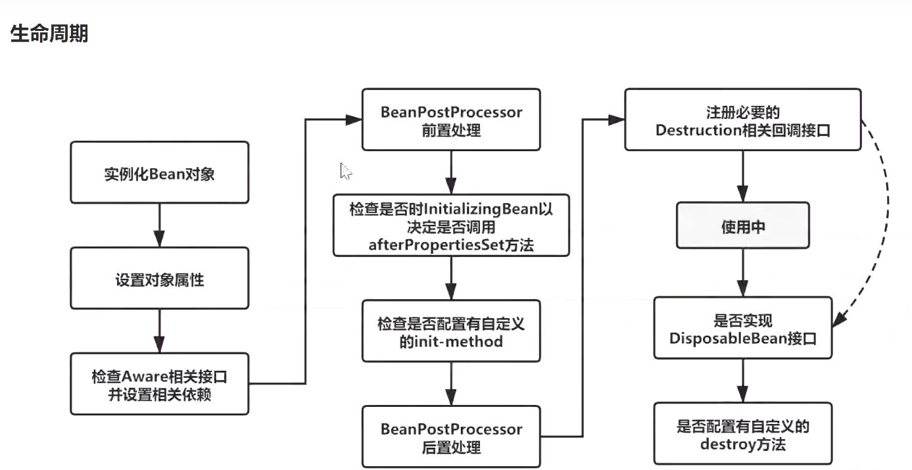

首先感谢龙哥，向博主整理并提供资料，爱了~
JAVA基础
互联网的快速发展给了Oak机会 因为Oak的小巧 Sun公司首先推出了可以嵌入网页并且快速在网络上传输的Applet 非常适合网络传播
随后 各大公司竞相购买了Java使用许可证
申请注册商标时，发现Oak已经被人使用了，然后他们正在咖啡馆喝Java咖啡，灵机一动Oak语言改名为Java
Java吸收C++ 的很多优点 精简了很多东西（还摒弃了C++ 里难以理解的多继承、指针等概念） 当时被人称为 C++-
这一年的5月23日Java 1.0版本正式在SunWorld大会上发布 喊出了”Write Once，Run Anywhere”的口号 体现了其跨平台的特性
final
相信大家都具备基本的常识: 被final修饰的变量是不能够被改变的. 但是这里的”不能够被改变”对于不同的数据类型是有不同的含义的.
当final修饰的是一个基本数据类型数据时, 这个数据的值在初始化后将不能被改变; 当final修饰的是一个引用类型数据时, 也就是修饰一个对象时, 引用在初始化后将永远指向一个内存地址, 不可修改. 但是该内存地址中保存的对象信息, 是可以进行修改的.
被final修饰的常量在编译阶段会被放入常量池中
- final是用于定义常量的, 定义常量的好处是: 不需要重复地创建相同的变量. 而常量池是Java的一项重要技术, 由final修饰的变量会在编译阶段放入到调用类的常量池中.
- 请看下面这段演示代码. 这个示例是专门为了演示而设计的, 希望能方便大家理解这个知识点.
1 | public static void main(String[] args) { |
首先要介绍一点: 整数-127-128是默认加载到常量池里的, 也就是说如果涉及到-127-128的整数操作, 默认在编译期就能确定整数的值. 所以这里我故意选用数字2019(大于128), 避免数字默认就存在常量池中.
- 上面的代码运作过程是这样的:
- 首先根据final修饰的常量会在编译期放到常量池的原则, n2会在编译期间放到常量池中.
- 然后s变量所对应的”20190522”字符串会放入到字符串常量池中, 并对外提供一个引用返回给s变量.
- 这时候拼接字符串s1, 由于n1对应的数据没有放入常量池中, 所以s1暂时无法拼接, 需要等程序加载运行时才能确定s1对应的值.
- 但在拼接s2的时候, 由于n2已经存在于常量池, 所以可以直接与”0522”拼接, 拼接出的结果是”20190522”. 这时系统会查看字符串常量池, 发现已经存在字符串20190522, 所以直接返回20190522的引用. 所以s2和s指向的是同一个引用, 这个引用指向的是字符串常量池中的20190522.
- 当程序执行时, n1变量才有具体的指向.
- 当拼接s1的时候, 会创建一个新的String类型对象, 也就是说字符串常量池中的20190522会对外提供一个新的引用.
- 所以当s1与s用”==”判断时, 由于对应的引用不同, 会返回false. 而s2和s指向同一个引用, 返回true.
总结: 这个例子想说明的是: 由于被final修饰的常量会在编译期进入常量池, 如果有涉及到该常量的操作, 很有可能在编译期就已经完成.
3. 探索: 为什么局部/匿名内部类在使用外部局部变量时, 只能使用被final修饰的变量?
提示: 在JDK1.8以后, 通过内部类访问外部局部变量时, 无需显式把外部局部变量声明为final. 不是说不需要声明为final了, 而是这件事情在编译期间系统帮我们做了. 但是我们还是有必要了解为什么要用final修饰外部局部变量.
1 | public class Outter { |
- 在上面这段代码, 如果没有给外部局部变量a加上final关键字, 是无法通过编译的. 可以试着想想: 当main方法已经执行完后, main方法的栈帧将会弹出, 如果此时Thread对象的生命周期还没有结束, 还没有执行打印语句的话, 将无法访问到外部的a变量.
- 那么为什么加上final关键字就能正常编译呢? 我们通过查看反编译代码看看内部类是怎样调用外部成员变量的.
- 我们可以先通过javac编译得到.class文件(用IDE编译也可以), 然后在命令行输入
javap -c .class文件的绝对路径, 就能查看.class文件的反编译代码. 以上的Outter类经过编译产生两个.class文件, 分别是Outter.class和Outter$1.class, 也就是说内部类会单独编译成一个.class文件. 下面给出Outter$1.class的反编译代码.
1 | Compiled from "Outter.java" |
- 定位到
run()方法反编译代码中的第3行: 3: bipush 10- 我们看到a的值在内部类的
run()方法执行过程中是以压栈的形式存储到本地变量表中的, 也就是说在内部类打印变量a的值时, 这个变量a不是外部的局部变量a, 因为如果是外部局部变量的话, 应该会使用load指令加载变量的值. 也就是说系统以拷贝的形式把外部局部变量a复制了一个副本到内部类中, 内部类有一个变量指向外部变量a所指向的值.
- 但研究到这里好像和final的关系还不是很大, 不加final似乎也可以拷贝一份变量副本, 只不过不能在编译期知道变量的值罢了. 这时该思考一个新问题了: 现在我们知道内部类的变量a和外部局部变量a是两个完全不同的变量, 那么如果在执行run()方法的过程中, 内部类中修改了a变量所指向的值, 就会产生数据不一致问题.
- 正因为我们的原意是内部类和外部类访问的是同一个a变量, 所以当在内部类中使用外部局部变量的时候应该用final修饰局部变量, 这样局部变量a的值就永远不会改变, 也避免了数据不一致问题的发生.
String 、StringBuffer 和 StringBuilder 的区别是什么?String 为什么是不可变的?
简单的来说：String 类中使用 final 关键字修饰字符数组来保存字符串，private final char value[]，所以String 对象是不可变的。
而 StringBuilder 与 StringBuffer 都继承自 AbstractStringBuilder 类，在 AbstractStringBuilder 中也是使用字符数组保存字符串char[]value 但是没有用 final 关键字修饰，所以这两种对象都是可变的。
线程安全性
-=
String 中的对象是不可变的，也就可以理解为常量，线程安全。
AbstractStringBuilder 是 StringBuilder 与 StringBuffer 的公共父类，定义了一些字符串的基本操作，如 expandCapacity、append、insert、indexOf 等公共方法。
StringBuffer 对方法加了同步锁或者对调用的方法加了同步锁，所以是线程安全的。StringBuilder 并没有对方法进行加同步锁，所以是非线程安全的。
性能
每次对 String 类型进行改变的时候，都会生成一个新的 String 对象，然后将指针指向新的 String 对象。StringBuffer 每次都会对 StringBuffer 对象本身进行操作，而不是生成新的对象并改变对象引用。相同情况下使用 StringBuilder 相比使用 StringBuffer 仅能获得 10%~15% 左右的性能提升，但却要冒多线程不安全的风险。
操作1111少量的数据: 适用
String单线程操作字符串缓冲区下操作大量数据: 适用
StringBuilder多线程操作字符串缓冲区下操作大量数据: 适用
StringBuffer
{kind=link}
HashCode（）与 equals
hashCode() 的作用是获取哈希码，也称为散列码；它实际上是返回一个 int 整数。这个哈希码的作用是确定该对象在哈希表中的索引位置。hashCode() 定义在 JDK 的 Object.java 中，这就意味着 Java 中的任何类都包含有 hashCode() 函数。
散列表存储的是键值对(key-value)，它的特点是：能根据“键”快速的检索出对应的“值”。这其中就利用到了散列码！（可以快速找到所需要的对象）
hashCode（）与 equals（）的相关规定
- 如果两个对象相等，则 hashcode 一定也是相同的;
- 两个对象相等,对两个对象分别调用 equals 方法都返回 true;
- 两个对象有相同的 hashcode 值，它们也不一定是相等的（不同的对象也可能产生相同的 hashcode，概率性问题）;
- 因此，equals 方法被覆盖过，则 hashCode 方法也必须被覆盖
- hashCode() 的默认行为是对堆上的对象产生独特值。如果没有重写 hashCode()，则该 class 的两个对象无论如何都不会相等（即使这两个对象指向相同的数据）
包装类Intege和Int的区别
二者的区别：
1. 声明方式不同：
基本类型不使用new关键字，而包装类型需要使用new关键字来在堆中分配存储空间；
2. 存储方式及位置不同：
基本类型是直接将变量值存储在栈中，而包装类型是将对象放在堆中，然后通过引用来使用；
3. 初始值不同：
基本类型的初始值如int为0，boolean为false，而包装类型的初始值为null；
4. 使用方式不同：
基本类型直接赋值直接使用就好，而包装类型在集合如Collection、Map时会使用到。
5.函数传参
有些函数传入参数需要object 类，这时可以传入包装类。
因为new生成的是两个对象，其内存地址不同
1 | Integer i = new Integer(100); |
因为 Integer变量 指向的是 java 常量池 中的对象，
而 new Integer() 的变量指向 堆中 新建的对象，两者在内存中的地址不同。
1 | Integer i = new Integer(100); |
两个Integer 变量比较，如果两个变量的值在区间-128到127 之间，有缓存数组，则比较结果为true，如果两个变量的值 不在此区间，则比较结果为 false 。
1 | Integer i = 100; |
因为包装类Integer 和 基本数据类型int 比较时，java会自动拆包装为int ，然后进行比较，实际上就变为两个int变量的比较。
1 | Integer i = new Integer(100); //自动拆箱为 int i=100; 此时，相当于两个int的比较 |
二者的区别：
1. 声明方式不同：
基本类型不使用new关键字，而包装类型需要使用new关键字来在堆中分配存储空间；
2. 存储方式及位置不同：
基本类型是直接将变量值存储在栈中，而包装类型是将对象放在堆中，然后通过引用来使用；
3. 初始值不同：
基本类型的初始
自动装箱和自动拆箱
Integer number = 10; //自动装箱
int count = number; //自动拆箱
- 什么情况会触发自动装箱操作？
当基本类型赋值给包装类型引用时，会触发自动装箱操作，调用包装类型的valueOf()方法。 - 什么情况会触发自动拆箱操作？
当包装类型参与运算时会触发自动拆箱操作，调用包装类型对应的***Value()方法，例如Integer类为intValue()。Why？因为运算是基本数据类型要做的事情。
Integer 缓存数组相关
1 | public static Integer valueOf(int i) { |
反射
机制:将类的各个组成部分封装成其他的对象。
- JAVA反射机制是在运行状态中，对于任意一个类，都能够知道这个类的所有属性和方法；对于任意一个对象，都能够调用它的任意一个方法和属性；这种动态获取的信息以及动态调用对象的方法的功能称为java语言的反射机制。
- 要想解剖一个类,必须先要获取到该类的字节码文件对象。而解剖使用的就是Class类中的方法.所以先要获取到每一个字节码文件对应的Class类型的对象.
反射是框架设计的灵魂
在 Java的反射机制在做基础框架的时候非常有用，行内有一句这样的老话：反射机制是Java框架的基石。一般应用层面很少用，不过这种东西，现在很多开源框架基本都已经封装好了，自己基本用不着写。典型的除了hibernate之外，还有spring也用到很多反射机制。最经典的就是xml的配置模式。
spring反射实现:
Spring 通过 XML 配置模式装载 Bean 的过程：
- 将程序内所有 XML 或 Properties 配置文件加载入内存中
- Java类里面解析xml或properties里面的内容，得到对应实体类的字节码字符串以及相关的属性信息
- 使用反射机制，根据这个字符串获得某个类的Class实例
- 动态配置实例的属性
Spring这样做的好处是：
- 不用每一次都要在代码里面去new或者做其他的事情
- 以后要改的话直接改配置文件，代码维护起来就很方便了
- 有时为了适应某些需求，Java类里面不一定能直接调用另外的方法，可以通过反射机制来实现
1、可以在程序运行中，操作这些对象。
2、可以解耦，提高程序的可扩展性。
对象创建的过程
{kind=link}
image-20210317024116844
一、若该对象所属的类没有加载，则先执行类加载
二、创建对象
1、在堆区分配对象需要的内存
分配的内存包括本类和父类的所有实例变量，但不包括任何静态变量
2、对所有实例变量赋默认值
将方法区内对实例变量的定义拷贝一份到堆区，然后赋默认值
3、执行实例初始化代码
初始化顺序是先初始化父类再初始化子类，初始化时先执行实例代码块然后是构造方法
4、如果有类似于Child c = new Child()形式的c引用的话，在栈区定义Child类型引用变量c，然后将堆区对象的地址赋值给它
需要注意的是，每个子类对象持有父类对象的引用，可在内部通过super关键字来调用父类对象，但在外部不可访问
补充：
通过实例引用调用实例方法的时候，先从方法区中对象的实际类型信息找，找不到的话再去父类类型信息中找。
如果继承的层次比较深，要调用的方法位于比较上层的父类，则调用的效率是比较低的，因为每次调用都要经过很多次查找。这时候大多系统会采用一种称为虚方法表的方法来优化调用的效率。
所谓虚方法表，就是在类加载的时候，为每个类创建一个表，这个表包括该类的对象所有动态绑定的方法及其地址，包括父类的方法，但一个方法只有一条记录，子类重写了父类方法后只会保留子类的。当通过对象动态绑定方法的时候，只需要查找这个表就可以了，而不需要挨个查找每个父类。
八大基本数据类型
double：64位，数据范围在4.9e-324~1.8e308，赋值时可以加d或D也可以不加。
float：32位，数据范围在3.4e-45~1.4e38，直接赋值时必须在数字后加上f或F。
long：64位，最大数据存储容量是2的64次方减1，数据范围为负的2的63次方到正的2的63次方减1。
short：16位，最大数据存储量是65536，数据范围是-32768~32767之间。
int：32位，最大数据存储容量是2的32次方减1，数据范围是负的2的31次方到正的2的31次方减1。
boolean：只有true和false两个取值。
byte：8位，最大存储数据量是255，存放的数据范围是-128~127之间。
char：16位，存储Unicode码，用单引号赋值。
IO流
集合
Collection：代表一组任意类型的对象，无下标、无序、不能重复。

细节1：
JDK1.7:ArrayList像饿汉式，直接创建一个初始容量为10的数组
JDK1.8:ArrayList像懒汉式，一开始创建一个长度为0的数组，当添加第一个元 素时再创建一个始容量为10的数组
细节2：
ArrayList 源码中为何定义两个 Object 数组呢？EMPTY_ELEMENTDATA 和 DEFAULTCAPACITY_EMPTY_ELEMENTDATA 各有什么用处？
1 | /** |
这两个类常量EE和DEE都是表示空数组，只是名字不一样而已。
1 | /** |
下来看看add(E e)方法：
1 | public boolean add(E e) { |
其他add方法如：add(int index, E element)、addAll(Collection<? extends E> c)、addAll(int index, Collection<? extends E> c)中都有ensureCapacityInternal(int minCapacity)方法，确保无参构成函数创建的实例al在添加第一个元素时，最小的容量是默认大小10。那有参构造函数创建的空实例al1、al2在通过add(E e)添加元素的时候是怎么样的呢？al1、al2容量增长是这样子的：0->1->2->3->4->6->9->13…，这样的增长是很慢的。具体扩容方式：
1 | private void grow(int minCapacity) { |
问题：两个类常量都是表示空数组，为什么要用两个呢？在Java7中只有一个类常量表示空数组，就是EE。Java8中添加了DEE代替了EE。
在Java7中ArrayList的构造函数：
1 | public ArrayList(int initialCapacity) { |
完全就是DEE代替了EE。那EE干什么去了，看一下构造函数中EE安排在哪里了？都是在判断容量为空的情况下，赋值给elementData。Java7中如果容量是0的话，会创建一个空数组，赋值给elementData:this.elementData = new Object[initialCapacity];、elementData = Arrays.copyOf(elementData, size, Object[].class);。如果一个应用中有很多这样ArrayList空实例的话，就会有很多的空数组，无疑EE是为了优化性能，所有ArrayList空实例都指向同一个空数组。问题解决。
ArraysList（基于动态数组实现）
ArrayList的底层是基于一个动态数组实现的，LinkedList的底层是基于一个双向链表实现的，
ArrayList对象创建时有一个空参构造器还有一个给定数组容量的构造器，如果不规定数组容量，则默认是0。
当往数组里添加元素，数组容量将会变为10，数组元素数量超过了10，将会自动扩容，通过一个位运算将现在的容量右移一位再加上现在的容量，变成原数组的1.5倍，JDK1.7之前是1.5+1，然后创建一个新的数组，将原数组的复制进新数组，从而实现了动态扩容。
有一个细节是他的底层源码定义了两个空数组，一个是默认空数组，一个人创建对象时主动传0，也是空数组。
默认容量大小为10 （注意：集合中没有任何元素时，它的容量为0，添加一个元素以后，容量变成10，但数组size=1）
1 | /** |
扩容机制(每次扩容为原来的1.5倍)
1 | private void grow(int minCapacity) { |
用来存放元素的数组
1 | transient Object[] elementData; // non-private to simplify nested class access |
add()方法:
1 | public boolean add(E e) { |
问题四：ArrayList 的 add 操作如何优化？
扩容需要移动数据，非常影响性能。那么优化的重点就是尽量避免 ArrayList 内部进行内部扩容。对于add 操作，如果添加的元素个数已知，最好使用指定初始容量的构造方法创建 ArrayList 实例或者在添加元素之前执行ensureCapacity 方法确保有足够的容量来存放add 操作的元素。
为什么不取扩容固定容量呢？
扩容的目的需要综合考虑这两种情况：
- 扩容容量不能太小，防止频繁扩容，频繁申请内存空间 + 数组频繁复制
- 扩容容量不能太大，需要充分利用空间，避免浪费过多空间；
而扩容固定容量，很难决定到底取多少值合适，取任何具体值都不太合适，因为所需数据量往往由数组的客户端在具体应用场景决定。
因为1.5 可以充分利用移位操作，减少浮点数或者运算时间和运算次数。
LinkList（双向链表）
LinkList是双向链表，链表的特点就是插入、删除操作时间复杂度为1，而查找的时间复制度为n。
增删速度相对于数组快，也不需要扩容操作，而查找、修改（需要先查找）速度相对慢一些。
LinkList也是非线程安全的。
1 | private static class Node<E> { |
add()
普通增加，就是在链表尾部添加数据。
可以看到源码，把 last 链表最后一个节点，先用 l 保存，然后 last 指向 newNode 新节点。
判断如果链表为空，那 first 头结点指向 newNode。
否则之前保存的最后一个节点 l 的 next 后指针指向 newNode。
1 |
|
TreeSet(有序不可重复)
特点
- 基于排列顺序实现元素不重复
- 实现SortedSet接口，对集合元素自动排序
- 元素对象的类型必须实现Comparable接口，指定排序规则
- 通过CompareTo方法确定是否为重复元素
存储结构：红黑树
创建集合 TreeSet<String> treeSet = new TreeSet<>()
添加元素 treeSet.add();
删除元素 treeSet.remove();
遍历 1. 增强for 2. 迭代器
判断 treeSet.contains();
补充：TreeSet集合的使用
Comparator 实现定制比较（比较器）
Comparable 可比较的
Map
用于存储任意键值对（key - value）
键：无序、无下标、不允许重复（唯一）
值：无序、无下标、允许重复
Map的遍历
得到一个Map的Key集合，装入Set集合中。
1 | // 3. 遍历 |
原码分析总结：
- HashMap刚创建时，table是null，节省空间，当添加第一个元素时，table容量调整为16
- 当元素个数大于阈值（16*0.75 = 12）时，会进行扩容，扩容后的大小为原来的两倍，目的是减少调整元素的个数
- jdk1.8 当每个链表长度 >8 ，并且数组元素个数 ≥64时，会调整成红黑树，目的是提高效率
- jdk1.8 当链表长度 <6 时 调整成链表
- jdk1.8 以前，链表时头插入，之后为尾插入
Hash大礼包
源码分析总结：
- HashMap刚创建时，table是null，节省空间，当添加第一个元素时，table容量调整为16
- 当元素个数大于阈值（16*0.75 = 12）时，会进行扩容，扩容后的大小为原来的两倍，目的是减少调整元素的个数
- jdk1.8 当每个链表长度 >8 ，并且数组元素个数 ≥64时，会调整成红黑树，目的是提高效率
- jdk1.8 当链表长度 <6 时 调整成链表
- jdk1.8 以前，链表时头插入，之后为尾插入
负载因子
Q：为什么负载因子是0.75？
当桶中元素到达8个的时候，概率已经变得非常小，也就是说用0.75作为加载因子，每个碰撞位置的链表长度超过８个是几乎不可能的。当桶中元素到达8个的时候，概率已经变得非常小，也就是说用0.75作为加载因子，每个碰撞位置的链表长度超过８个是几乎不可能的。
jdk官方文档给出了一份计算结果：同一个哈希桶中哈希碰撞生成链表长度地概率。数据中哈希桶中有8个元素的概率低至0.000006%，所以0.75这个负载因子比较合适。
{kind=link}
{kind=link}
HashMap遍历
扩容过程
{kind=link}
put方法流程
1.7：头插法
1.8：尾插法
Q：为什么1.8改成尾插法？因为1.8引入了红黑树，尾插法会遍历整个链表，顺带地知道当前链表长度，判断是否需要树化。
{kind=link}
多线程下HashMap put方法可能形成环形链表
红黑树
简单的说，红黑树是一种近似平衡的二叉查找树，其主要的优点就是“平衡“，即左右子树高度几乎一致，以此来防止树退化为链表，通过这种方式来保障查找的时间复杂度为 log(n)
Q：为什么要有红黑树？
红黑树的话是一个平衡搜索树，在大数据量下查找效率比单条的链表更高。链表需要遍历，红黑树采用的是二分查找的思想进行检索。
特征：
（1）每个节点只有两种颜色：红色和黑色。
（2）根节点是黑色的。
（3）每个叶子节点（NIL）都是黑色的空节点。
（4）从根节点到叶子节点，不会出现两个连续的红色节点。（红色的节点不能挨在一起）
（5）从任何一个节点出发，到叶子节点，这条路径上都有相同数目的黑色节点。
{kind=link}
颜色变换规则
旋转和变换规则：所有插入点默认为红色。
{kind=link}
image-20210328005814087
左旋规则
{kind=link}
image-20210328005737527
右旋规则
{kind=link}
image-20210328005635454
多线程
并发编程的三个重要特性
- 原子性 : 一个的操作或者多次操作，要么所有的操作全部都得到执行并且不会收到任何因素的干扰而中断，要么所有的操作都执行，要么都不执行。
synchronized可以保证代码片段的原子性。 - 可见性 ：当一个变量对共享变量进行了修改，那么另外的线程都是立即可以看到修改后的最新值。
volatile关键字可以保证共享变量的可见性。 - 有序性 ：代码在执行的过程中的先后顺序，Java 在编译器以及运行期间的优化，代码的执行顺序未必就是编写代码时候的顺序。
volatile关键字可以禁止指令进行重排序优化。
线程和进程的区别
进程是资源分配的最小单位，线程是CPU调度的最小单位
进程是一个可执行的程序，是系统资源分配的基本单位。线程是进程内部相对独立的可执行单元，是操作系统进行任务调度的基本单位。
java没有权限开启线程，通过本地方法调用c++，java无法直接操作硬件
并发（多线程操作同一个资源）
- CPU一核，模拟出来多个线程
并行（多个线程可以同时执行）
CPU多核，多个线程可以同时执行
一、进程的并行和并发
并行: 并行是指两者同时执行，比如赛跑，两个人都在不停的往前跑；（资源够用，比如三个线程，四核的CPU ）
并发: 并发是指资源有限的情况下，两者交替轮流使用资源，比如一段路(单核CPU资源)同时只能过一个人，A走一段后，让给B，B用完继续给A ，交替使用，目的是提高效率。
二、并行和并发的区别
并行是从微观上，也就是在一个精确的时间片刻，有不同的程序在执行，这就要求必须有多个处理器。
并发是从宏观上，在一个时间段上可以看出是同时执行的，比如一个服务器同时处理多个session。
创建线程的几种方法
继承Thread类，重写run()方法，利用Thread.start()启动线程。
实现Runnable接口，重写run()方法，通过new Thread(Runnable a)创建线程，并调用start()方法启动线程。
通过callable和futuretask创建线程，实现callable接口，重写call方法，利用future对象包装callable实例，通过new Thread方法创建线程。
和Runnable接口不一样，Callable接口提供了一个call()方法作为线程执行体，call()方法比run()方法功能要强大：call()方法可以有返回值，可以声明抛出异常。
通过线程池创建线程。
多线程的优缺点
优点：
- 充分利用多核多cpu的资源，提高cpu的使用率，提高了程序的运行效率。
缺点：
- 线程数过多会影响性能，操作系统会在线程切换之间增加内存的开销。
- 存在线程同步和安全问题
- 可能产生死锁
- 增加了开发人员的技术难度
线程有几种状态
一共五种状态：分别是新建，就绪，运行，阻塞和死亡状态。详细见下图：
img
- 新建状态：当用new创建一个线程时，线程还没有开始运行，此时线程处于新建状态。处于新建状态的线程还没有开始运行。
- 就绪状态：一个新建的线程并不会自动运行，要执行线程，要手动调用线程的start()方法，当start()方法返回后，线程就处于就绪状态，等待处理器的调度。
- 运行状态：当线程获取了CPU的时间后，它才进入运行状态，真正的执行run()方法里的内容。
- 阻塞状态：线程运行过程中，可能因为各种原因进入阻塞状态：比如调用sleep()进入休眠状态；调用一个在IO上被阻塞的操作，即该操作在输入输出操作完成之前不会返回到它的调用者；等待获取锁被阻塞；线程在等待其他的触发条件。所谓的阻塞状态就是正在运行的线程没有运行结束，暂时让出CPU资源。
- 死亡状态：有两个原因会导致线程死亡：run()方法正常结束；一个未捕获的异常终止了run()方法而导致线程猝死。
经典题：一个线程OOM了，其他线程是否还能运行？
答案是还能运行。虽然说堆是线程共享的区域，一个线程堆抛出OOM异常，你可能会觉得其他线程也会抛出OOM异常。但其实不然，当一个线程抛出OOM异常后，它所占据的内存会全部释放掉，从而不会影响其他线程的运行。 另外如果主线程异常了，子线程还能运行吗？这个问题也是可以运行的。线程不像进程，一个进程之间的线程之间是没有父子之分的，都是平级关系。即线程都是一样的，退出了一个不会影响另外一个。
sleep和wait方法的区别？
- wait只能在synchronized中调用，属于对象级别的方法，sleep不需要，属于Thread的方法
- 调用wait方法会释放锁，sleep不会释放锁
- wait超时之后线程进入就绪状态，等待获取cpu继续执行。
volatile
volatile 关键字 除了防止 JVM 的指令重排 ，还有一个重要的作用就是保证变量的可见性。
volatile作用是在并发编程中保证共享变量的可见性，同时防止这个JVM指令重排。每个线程在运行过程中都有自己的工作内存。因为JMM模型主要是是线程各自的工作内存和主内存。线程运行的时候会将主内存的变量读到工作内存，修改完毕后再写入主存。
volatile关键字修饰的变量值一经修改会立即写入主存，假设有AB两个线程，并且B线程操作volatile修饰的变量的时候，会导致A线程工作内存中的缓存volatile变量无效，A线程发现自己的缓存行无效，它会等待缓存行对应的主存地址被更新之后，然后去对应的主存读取最新的值，从而保证他的可见性。其中涉及到CPU总线嗅探机制和缓存一致性协议。工作内存和主存之间有一个总线，总线相当于工作内存和主存数据传输的主干道，当其中一个工作内存中的值被修改了并且写回内存以后，其他处理器会被通知，使得各自的缓存失效，线程就必须从主存中去读取最新的数据。
volatile第二个呢就是防止JVM指令重排，因为对程序的优化，JVM和CPU会对指令进行重新排序，但不会影响最后的结算结果，如果指令中有对volatile变量进行操作的指令，那么这条指令相当于一个内存屏障，在它之前的指令和在他之后的指令不允许交换位置，保证到达这条指令前，在他之前的指令已经全部完成。
那么线程A在运行的时候，会将变量的值拷贝一份放在自己的工作内存当中。
那么当线程B更改了变量的值之后，但是还没来得及写入主存当中，线程B转去做其他事情了，那么线程A由于不知道线程B对变量的更改，因此还会一直循环下去。
volatile的实现原理
处理器为了提高处理速度，不直接和内存进行通讯，而是将系统内部的数据读到内部缓存后在进行操作，但操作完之后不知道什么时候会写入内存。
如果对声明了volatile变量进行写操作时，JVM会向处理器发送一条Lock前缀的指令，将这个变量所在缓存行的数据写会到系统内存。 这一步确保了如果有其他线程对声明了volatile变量进行修改，则立即更新主内存中数据。
但这时候其他处理器的缓存还是旧的，所以在多处理器环境下，为了保证各个处理器缓存一致，每个处理会通过嗅探在总线上传播的数据来检查 自己的缓存是否过期，当处理器发现自己缓存行对应的内存地址被修改了，就会将当前处理器的缓存行设置成无效状态，当处理器要对这个数据进行修改操作时，会强制重新从系统内存把数据读到处理器缓存里。 这一步确保了其他线程获得的声明了volatile变量都是从主内存中获取最新的。
Lock前缀指令实际上相当于一个内存屏障（也成内存栅栏），它确保指令重排序时不会把其后面的指令排到内存屏障之前的位置，也不会把前面的指令排到内存屏障的后面；即在执行到内存屏障这句指令时，在它前面的操作已经全部完成。
指令重排
Q：为什么产生指令重排？ CUP的乱序执行
编译器：不进行指令重排
运行期：DCL（懒汉式双重锁检验）+volatile
内存屏障
happens-before
如果对声明了volatile变量进行写操作时，JVM会向处理器发送一条Lock前缀的指令，将这个变量所在缓存行的数据写会到系统内存。
Lock前缀指令实际上相当于一个内存屏障（也成内存栅栏），它确保指令重排序时不会把其后面的指令排到内存屏障之前的位置，也不会把前面的指令排到内存屏障的后面；即在执行到内存屏障这句指令时，在它前面的操作已经全部完成。
{kind=link}
image-20210317010023428
Java内存模型 (JMM)
{kind=link}
总线嗅探机制+缓存一致性协议
{kind=link}
img
工作内存 = 虚拟机栈 主内存 = 堆+ 方法区
{kind=link}
volatileの读：每一次都从主存中获取数据，然后写入虚拟机栈（工作内存） read-load
volatileの写：
{kind=link}
线程和主存之间存在一条总线，加入关键字以后机会缓存一致性协议，监听共享变量。
DCL双重锁校验
锁
并发编程的三个重要特性
- 原子性 : 一个的操作或者多次操作，要么所有的操作全部都得到执行并且不会收到任何因素的干扰而中断，要么所有的操作都执行，要么都不执行。
synchronized可以保证代码片段的原子性。 - 可见性 ：当一个变量对共享变量进行了修改，那么另外的线程都是立即可以看到修改后的最新值。
volatile关键字可以保证共享变量的可见性。 - 有序性 ：代码在执行的过程中的先后顺序，Java 在编译器以及运行期间的优化，代码的执行顺序未必就是编写代码时候的顺序。
volatile关键字可以禁止指令进行重排序优化。
synchronized
对synchronized的理解?
synchronized在jdk1.6属于Java中的重量级锁，同时也是一种互斥锁，重量级锁是因为需要依靠操作系统来实现互斥锁的，这导致大量上下文切换，消耗大量CPU，影响性能。在JDK1.6以后逐步地对sychronized进行了优化，加入了锁升级的机制，从而不用每次调用sychronized都直接上重量级锁。sychronized的实现依靠的每个对象头中的 mark word的所指向的monitor，monitor中从存储了关联对象的owner、waitSet和EntryList，当A线程竞争
Mark Word 有一个字段指向 monitor 对象。monitor 中记录了锁的持有线程，等待的线程队列等信息。前面说的每个对象都有一个锁和一个等待队列，就是在这里实现的。 monitor 对象由 C++ 实现。其中有几个关键字段：
_owner：指向持有ObjectMonitor对象的线程
_WaitSet：存放处于wait状态的线程队列
_EntryList：存放处于等待锁block状态的线程队列
_recursions：锁的重入次数
_count：用来记录该线程获取锁的次数
Synchronized 的具体用法
| 修饰位置 | 上锁对象 |
|---|---|
| 普通方法/this关键字 | 该类的实例对象 |
| 同步代码块/.class | 整个类对象 |
- Synchronized修饰普通方法时，锁对象默认为this,锁住的是该类的实例对象
1 | public synchronized void testMethod(){} |
- Synchronized修饰静态方法时，锁住的类对象
1 | public static synchronized void testStaticMethod(){} |
- 同步代码块,this时，锁住的是类的实例
1 | public void test(){ |
- 同步代码块，Demo.class,锁住的是类对象
1 | public class Demo{ |
Synchroinzed 锁的实现原理、
每个对象的对象头中有一个字段指向monitor对象，这个monitor是每个对象都有的。
mark word
biased_lock：对象是否启用偏向锁标记，只占1个二进制位。为1时表示对象启用偏向锁，为0时表示对象没有偏向锁。
age：4位的Java对象年龄。在GC中，如果对象在Survivor区复制一次，年龄增加1。当对象达到设定的阈值时，将会晋升到老年代。默认情况下，并行GC的年龄阈值为15，并发GC的年龄阈值为6。由于age只有4位，所以最大值为15，这就是-XX:MaxTenuringThreshold选项最大值为15的原因。
identity_hashcode：25位的对象标识Hash码，采用延迟加载技术。调用System.identityHashCode()计算，并会将结果写到该对象头中。当对象被锁定时，该值会移动到管程Monitor中。
thread：持有偏向锁的线程ID。
epoch：偏向时间戳。
ptr_to_lock_record：指向栈中锁记录的指针。
ptr_to_heavyweight_monitor：指向管程Monitor的指针。
Mark Word 有一个字段指向 monitor 对象。monitor 中记录了锁的持有线程，等待的线程队列等信息。前面说的每个对象都有一个锁和一个等待队列，就是在这里实现的。 monitor 对象由 C++ 实现。其中有几个关键字段：
_owner：指向持有ObjectMonitor对象的线程
_WaitSet：存放处于wait状态的线程队列
_EntryList：存放处于等待锁block状态的线程队列
_recursions：锁的重入次数
_count：用来记录该线程获取锁的次数
JVM 对 synchronized 的处理
上面了解了 monitor 的机制，那虚拟机是如何将 synchronized 和 monitor 关联起来的呢？分两种情况：
如果同步的是代码块，编译时会直接在同步代码块前加上 monitorenter 指令，代码块后加上 monitorexit 指令。这称为显示同步。
如果同步的是方法，虚拟机会为方法设置 ACC_SYNCHRONIZED 标志。调用的时候 JVM 根据这个标志判断是否是同步方法。
1 | //反编译后的结果 |
如图所示 [ y4j5pF.jpg](872e78995be24c90b4e8d8aafdf89360~tplv-k3u1fbpfcp-zoom-1.image)
- 当Thread1、Thread2访问同步代码块时Thread1,Thread2会先进入ObjectMonitor的EntryList中等待；
- 接下来当Thread1获取到对象的 Monitor 时，Monitor 是依靠底层操作系统的 Mutex Lock 来实现互斥的，Thread1申请 Mutex 成功，则持 有该 Mutex，其它线程将无法获取到该 Mutex。ObjectMonitor的owner属性指向Thread1，EntryList中还剩Thread2在等待
- 如果Thread1调用了wait()方法，就会释放当前持有的 Mutex，Thread1进入WaitSet并释放锁，ObjectMonitor的owner属性等于null。
如果Thread1执行完毕，也会释放所持有的Mutex。 4. Thread2获取到锁进入同步代码块，ObjectMonitor owner属性指向Thread2，任务执行完退出同步代码之前调用notifyAll， Thread1被唤醒，从WaitSet转到EntryList中等待锁，Thread2退出同步代码块，ObjectMonitor owner属性为null；
所以，Monitor依赖操作系统实现，存在用户态和内核态的切换，增加了性能开销。
说说 synchronized 关键字和 volatile 关键字的区别
synchronized 关键字和 volatile 关键字是两个互补的存在，而不是对立的存在！
- volatile 关键字是线程同步的轻量级实现，所以volatile 性能肯定比 synchronized 关键字要好。但是volatile 关键字只能用于变量而 synchronized 关键字可以修饰方法以及代码块。
- volatile 关键字能保证数据的可见性，但不能保证数据的原子性。synchronized 关键字两者都能保证。
- volatile 关键字主要用于解决变量在多个线程之间的可见性，而 synchronized 关键字解决的是多个线程之间访问资源的同步性。
CAS
CAS属于乐观锁，乐观锁就是每次不加锁而是假设没有冲突而去完成某项操作，如果因为冲突失败就重试，直到成功为止。
原理：
CAS全称是Compare and Swap，即比较并交换，是通过原子指令来实现多线程的同步功能，将获取存储在内存地址的原值和指定的内存地址进行比较，只有当他们相等时，交换指定的预期值和内存中的值，这个操作是原子操作，若不相等，则重新获取存储在内存地址的原值。
CAS的流程
CAS是一种无锁算法，有3个关键操作数，内存地址，旧的内存中预期值，要更新的新值，当内存值和旧的内存中预期值相等时，将内存中的值更新为新值。
首先看一看AtomicInteger当中常用的自增方法 incrementAndGet：
1 | public final int incrementAndGet() { |
那CAS有什么缺陷吗？
我：CAS虽然高效的解决了原子问题，但是还是存在一些缺陷的，主要体现在三个方面：
1、循环时间太长：如果自旋CAS长时间不成功，则会给CPU带来非常大的开销，在JUC中，有些地方就会限制CAS自旋的次数。
2、只能保证一个共享变量原子操作：看了CAS的实现就知道这只能针对一个共享变量，如果是多个共享变量就只能使用锁了。或者把多个变量整成一个变量也可以用CAS。
3、ABA问题：CAS需要检查操作值有没有发生改变，如果没有发生改变则更新，但是存在这样一种情况：如果一个值原来是A，变成了B，然后又变成了A，那么在CAS检查的时候会发现没有改变，但是实质上它已经发生了改变，这就是所谓的ABA问题。对于ABA问题的解决方案是加上版本号，即在每个变量都加上一个版本号，每次改变时加1，即A->B->A，变成1A->2B->3A。例如原子类中AtomicInteger会发生ABA问题，使用AtomicStampedReference可以解决ABA问题。
PS：总结1、长时间自旋不成功，会给CPU带来非常大的开销。
2、只能保证一个共享变量的原子操作，多个共享变量需要用到锁。
3、ABA问题：CAS对操作的值进行检查，检查它是否有被修改过。但有这么一种情况，它被别的县城改过了，但是又改回去了，此时依旧当前线程的期望值，但是实质上它被改动过了。这样就对当前线程造成了一种欺骗。用AtomicStampedReference可以解决ABA为题（即在变量上加上一个版本号）
AQS
其实一句话总结：AQS就是一个并发包的基础组件，用来实现各种锁，各种同步组件的。
它包含了state变量、加锁线程、等待队列等并发中的核心组件。
AQS 全称 AbstractQueuedSynchronizer。AQS 中有两个重要的成员：
成员变量 state。用于表示锁现在的状态，用 volatile 修饰，保证内存一致性。同时所用对 state 的操作都是使用 CAS 进行的。state 为0表示没有任何线程持有这个锁，线程持有该锁后将 state 加1，释放时减1。多次持有释放则多次加减。
还有一个双向链表，链表除了头结点外，每一个节点都记录了线程的信息，代表一个等待线程。这是一个 FIFO 的链表。
下面以 ReentrantLock 非公平锁的代码看看 AQS 的原理。
AbstractQueuedSynchronizer，抽象队列同步器
如图：
ReentrantLock内部包含了一个AQS对象，也就是AbstractQueuedSynchronizer类型的对象。
{kind=link}
img
1、当线程1 CAS成功获取锁时
{kind=link}
img
2、线程2来尝试获取锁 调用tryAcquire（CAS原理）（尝试将state=0变为1） 原理CAS 发现state并不等于0
{kind=link}
img
3、加锁失败，线程2进入等待队列 【队列是AQS内部的队列，专门存放获取锁失败的线程】
{kind=link}
img
接着，线程1在执行完自己的业务逻辑代码之后，就会释放锁！他释放锁的过程非常的简单，就是将AQS内的state变量的值递减1，如果state值为0，则彻底释放锁，会将“加锁线程”变量也设置为null！
CLH队列
QS通过内置的FIFO(first-in-first-out)同步队列来控制获取共享资源的线程。CLH队列是FIFO的双端双向队列，AQS的同步机制就是依靠这个CLH队列完成的。队列的每个节点，都有前驱节点指针和后继节点指针。
头结点并不在阻塞队列内！
AQS-Node.jpg
ReentrantLock Lock锁
锁升级
对象的组成
实例变量
即实例数据。存放类的属性数据信息，包括父类的属性信息。
对其填充why?
字段内存对齐的其中一个原因，是让字段只出现在同一CPU的缓存行中。 如果字段不是对齐的，那么就有可能出现跨缓存行的字段。也就是说，该字段的读取可能需要替换两个缓存行，而该字段的存储也会同时污染两个缓存行。这两种情况对程序的执行效率而言都是不利的。其实对其填充的最终目的是为了计算机高效寻址。
对象头中数据（mark word 和 类型指针 组成）
mark word
即标记字段。用于存储对象自身的运行时数据，如哈希码（HashCode）、GC分代年龄、锁状态标志、线程持有的锁、偏向线程ID、偏向时间戳等等。 Mark Word在32位JVM中的长度是32bit，在64位JVM中长度是64bit
锁升级的过程
synchronized锁有四种状态，无锁，偏向锁，轻量级锁，重量级锁
无锁，偏向锁，轻量级锁（CAS）都是在用户空间完成
重量级锁是需要向内核申请的
当线程A启动后，获得了对象的锁，此时线程A的线程ID将保存到对象的对象头中，对象头中的偏向锁标志位变为1。此时如果第二个线程B想访问这个对象，线程A、B之间就存在一个竞争的关系，但是此时偏向锁是偏向于线程A的，即A是优先的，偏向锁将会升级为轻量级锁，以此来保证持有对象锁的的线程A运行。此时线程B将会进行CAS，CAS也叫做自旋锁，B会去检查对象的锁是否还是属于A的，如果是，那B将会继续自选，直到对象锁被释放，B马上就会获取对象的锁。但是假如长时间无法获取到对象的锁，CAS是会消耗CPU的性能的，尤其当许多个线程竞争同一个对象的锁时，CPU资源占用会大大提高，此时锁将会再次升级，对象锁将升级为重量级锁。此时，所有竞争的线程将进入阻塞队列，等待cup的调度。
{kind=link}
.公平锁 VS 非公平锁
公平锁是指多个线程按照申请锁的顺序来获取锁，线程直接进入队列中排队，队列中的第一个线程才能获得锁。公平锁的优点是等待锁的线程不会饿死。缺点是整体吞吐效率相对非公平锁要低，等待队列中除第一个线程以外的所有线程都会阻塞，CPU唤醒阻塞线程的开销比非公平锁大。
非公平锁是多个线程加锁时直接尝试获取锁，获取不到才会到等待队列的队尾等待。但如果此时锁刚好可用，那么这个线程可以无需阻塞直接获取到锁，所以非公平锁有可能出现后申请锁的线程先获取锁的场景。非公平锁的优点是可以减少唤起线程的开销，整体的吞吐效率高，因为线程有几率不阻塞直接获得锁，CPU不必唤醒所有线程。缺点是处于等待队列中的线程可能会饿死，或者等很久才会获得锁。
公平锁：tryAcquire（）:
//假如tryacquire方法返回true表示为获取锁成功,&& 后面的表达式不会执行
//假如tryAcqyire方法返回false表示获取锁失败,进入等待队列并执行selfInterrupt() 中断当前线程
hasQueuedPredecessors（）：判断队列中是否存在等待的线程
hasQueuedPredecessors就是判断锁是否公平的关键，如果在当前线程之前还有排队的线程就返回true，这时候当前线程就不会去竞争锁。从而保证了锁的公平性。
{kind=link}
image-20210316020031393
1 | final void lock() { //这个方法是父类AQS的方法 acquire(1);}public final void acquire(int arg) { //上面有提过 tryAcquire 方法,尝试获取锁,需要子类实现 //当前类为FairSync 所以调用的 FairSync.tryAcquire 方法 //假如tryacquire方法返回true表示为获取锁成功,&& 后面的表达式不会执行 //假如tryAcqyire方法返回false表示获取锁失败,进入等待队列并执行selfInterrupt 中断当前线程 if (!tryAcquire(arg) && acquireQueued(addWaiter(Node.EXCLUSIVE), arg)) selfInterrupt();}// java.util.concurrent.locks.ReentrantLock.FairSync.tryAcquire(int) 参数值为1protected final boolean tryAcquire(int acquires) { //获取当前线程 final Thread current = Thread.currentThread(); //获取AQS.state的值,state 就是用来判断是否存在线程获取到锁 int c = getState(); //假如为0 表示 现在没有线程获取到锁 if (c == 0) { //hasQueuedPredecessors 方法 判断等待队列中是否存在 等待的线程 (因为是公平锁) //compareAndSetState CAS 操作设置 state 的值 //setExclusiveOwnerThread 设置当前获取锁的线程为 当前线程 //所以 这个 if 中的表达式的意思 是: //等待队列中没有线程在等待 并 CAS 操作成功 并且设置线程成功 则返回 true 表示获取锁成功 if (!hasQueuedPredecessors() && compareAndSetState(0, acquires)) { setExclusiveOwnerThread(current); return true; } } // 假如 state 的值不为 0 表示存在线程争取这个锁 //判断争取到锁的线程是否当前线程 (可重入锁) else if (current == getExclusiveOwnerThread()) { // 假如是 累加 state的值,表示重入次数 int nextc = c + acquires; if (nextc < 0) throw new Error("Maximum lock count exceeded"); setState(nextc); return true; } return false; } |
可重入锁（递归锁）
可重入锁的字面意思是“可以重新进入的锁”，即允许同一个线程多次获取同一把锁。比如一个递归函数里有加锁操作，递归过程中这个锁会阻塞自己吗？如果不会，那么这个锁就是可重入锁（因为这个原因可重入锁也叫做递归锁）。
Java里只要以Reentrant开头命名的锁都是可重入锁，而且JDK提供的所有现成的Lock实现类，包括synchronized关键字锁都是可重入的。
getExclusiveOwnerThread()：获取线程当前专属拥有者
run和start()的区别：
run 方法是执行任务的地方，它就是一个普通的方法，可以多次被调用，只调用 run 方法并不会启动一个线程。而 start 方法才会真正的启动线程，start 方法会调用到 native 底层方法，然后才会调用 run 方法执行任务。start 方法只能执行一次，执行多次会抛出异常。
为什么要有锁升级这个过程呢？
那为什么不直接上来就上
轻量级锁或者重量级锁呢？
这是因为当线程执行到被锁住的代码块时，锁的获取是会消耗资源的。轻量级锁的实现原理是CAS自旋，就像while loop 一样，消耗CPU资源。重量级锁需要操作系统的调度机制接入，也会消耗资源。而大部分时候只有一个线程默默的干活，并不存在锁竞争，每次这个孤单的线程执行一块上了轻量级锁锁住的代码时需要过一遍CAS，执行一块重量级锁锁住的代码时需要等操作系统的发令，自己和自己竞争一下，这效率就有点低了。
当一个对象还没有上锁时，偏向锁会直接来往markword里贴上线程ID，表示锁住了，没有CAS自旋和操作系统调用这些耗时的锁竞争机制，提高了性能。 偏向锁假定了这对象还没锁，所以偏向锁又叫做乐观锁。
死锁
什么叫死锁？
死锁是指两个或两个以上的线程在执行过程中，因争夺资源而造成的一种互相等待的现象。若无外力作用，他们都将无法进行运行下去。
死锁产生的必要条件
- 互斥条件：进程要求对所分配的资源在一段时间内只能由一个进程所拥有。
- 不可剥夺条件：资源在进程未使用完成之前，不能被其他进程夺走，除非是主动释放。
- 请求和保持条件：进程已经保持了至少一个资源，但是又申请新的资源，但是该资源已经被其他进程所拥有，这就陷入了死循环。
- 循环等待条件：总的来说，就是进程资源循环等待，A拥有资源1，B拥有资源2，同时A在没有释放资源1的情况下又去申请资源2，B在没有释放资源2的情况下又去申请资源1。
如何避免死锁
- 加锁顺序要合理：线程要按照一定的顺序加锁
- 加锁时限要适当：线程尝试获取锁的时候要加上一定时限，超时就要放弃锁请求，并释放自己占有的锁。不能无限等待。
- 死锁检测
细节
死锁排查
ArrayBlockingQueue（阻塞队列）
{kind=link}
SynchronousQueue：同步队列
不存储元素put元素以后必须take取出来，否则不能put进去元素。
任意时间只能一个线程操作。
Semaphore信号量
Semaphore又称信号量，是操作系统中的一个概念，在Java并发编程中，信号量控制的是线程并发的数量。
public Semaphore(int permits)
其中参数permits就是允许同时运行的线程数目;
Semaphore是用来保护一个或者多个共享资源的访问，Semaphore内部维护了一个计数器，其值为可以访问的共享资源的个数。一个线程要访问共享资源，先获得信号量，如果信号量的计数器值大于1，意味着有共享资源可以访问，则使其计数器值减去1，再访问共享资源。如果计数器值为0,线程进入休眠。当某个线程使用完共享资源后，释放信号量，并将信号量内部的计数器加1，之前进入休眠的线程将被唤醒并再次试图获得信号量。
Semaphore使用时需要先构建一个参数来指定共享资源的数量，Semaphore构造完成后即是获取Semaphore、共享资源使用完毕后释放Semaphore
主要有acquire()、release()这两个方法
acquire()：当前线程调用该方法的目的是希望获取一个信号量资源。如果当前信号量个数大于0,则当前信号量的计数会减1，然后该方法直接返回。否则如果当前信号量个数等0，则当前线程会被放入AQS的阻塞队列。
release()：该方法的作用是把当前Semaphore对象的信号量值增加1，如果当前有线程因为调用aquire方法被阻塞而被放入了AQS的阻塞 队列，则会根据公平策略选择一个信号量个数能被满足的线程进行激活， 激活的线程会尝试获取刚增加的信号量.
1 | //信号量法 ：3线程交替打印 |
线程池
为了避免系统频繁的创建和销毁线程，我们可以让创建的线程复用。我们可以使用一个线程池维护一些线程，当你需要使用线程的时候，可以从池子中随便拿一个空闲线程，当完成工作时，并不急着关闭线程，而是将这些线程退回到线程池中，方便下次使用。
简而言之，再使用线程池后，创建线程编程了从线程池中获得空闲线程，关闭线程变为想线程池归还线程。
3大创建线程池的方法：
//可伸缩线程池
ExecutorService threadPool1 = Executors.newCachedThreadPool();
//单个线程池
ExecutorService threadPool2 = Executors.newSingleThreadExecutor();
//固定数量线程池 7个
ExecutorService threadPool3 = Executors.newFixedThreadPool(11);
{kind=link}
1 |
|
最大核心线程池如何确定？
int maximumPoolSize,//最大核心线程池大小：
CPU 密集型任务(N+1)：
这种任务消耗的主要是 CPU 资源，可以将线程数设置为 N（CPU 核心数）+1，比x CPU 核心数多出来的一个线程是为了防止线程偶发的缺页中断，或者其它原因导致的任务暂停而带来的影响。一旦任务暂停，CPU 就会处于空闲状态，而在这种情况下多出来的一个线程就可以充分利用 CPU 的空闲时间。
I/O 密集型任务(2N)：
这种任务应用起来，系统会用大部分的时间来处理 I/O 交互，而线程在处理 I/O 的时间段内不会占用 CPU 来处理，这时就可以将 CPU 交出给其它线程使用。因此在 I/O 密集型任务的应用中，我们可以多配置一些线程，具体的计算方法是 2N
1 | //获取CUP的核数System.out.println(Runtime.getRuntime().availableProcessors());//4 |
7大ThreadPoolExecutor常用参数
1. corePoolSize ：核心线程线程数
定义了最小可以同时运行的线程数量。
2. maximumPoolSize ：最大线程数
当队列中存放的任务达到队列容量时，当前可以同时运行的线程数量会扩大到最大线程数。
3. keepAliveTime ：等待时间
当线程数大于核心线程数时，多余的空闲线程存活的最长时间。
4. unit ：时间单位。
keepAliveTime 参数的时间单位，包括 TimeUnit.SECONDS、TimeUnit.MINUTES、TimeUnit.HOURS、TimeUnit.DAYS 等等。
5. workQueue ：任务队列
任务队列，用来储存等待执行任务的队列。
6. threadFactory ：线程工厂
线程工厂，用来创建线程，一般默认即可。
7. handler ：拒绝策略
4大拒绝策略
ThreadPoolExecutor.AbortPolicy： 抛出 RejectedExecutionException 来拒绝新任务的处理，是 Spring 中使用的默认拒绝策略。
ThreadPoolExecutor.CallerRunsPolicy： 线程调用运行该任务的 execute 本身，也就是直接在调用 execute 方法的线程中运行 (run) 被拒绝的任务，如果执行程序已关闭，则会丢弃该任务。此策略提供简单的反馈控制机制，能够减缓新任务的提交速度，但可能造成延迟。若应用程序可以承受此延迟且不能丢弃任何一个任务请求，可以选择这个策略。
ThreadPoolExecutor.DiscardPolicy： 不处理新任务，直接丢弃掉。
ThreadPoolExecutor.DiscardOldestPolicy： 此策略将丢弃最早的未处理的任务请求
{kind=link}
1. ThreadLocal
ThreadLocal是一个线程内部的数据存储类，可以在指定线程中存储数据，且只有在该指定线程中才可以获取存储数据。
- ThreadLocal的静态内部类ThreadLocalMap为每个Thread都维护了一个数组 table。
ThreadLocal确定了一个数组下标，而这个下标就是value存储的对应位置。
作用
线程隔离：提供线程内的局部变量，不同的线程之间不会相互干扰，这种变量在线程的生命周期内起作用。
- 传递数据：减少同一个线程内多个函数或组件之间一些公共变量传递的复杂度。
使用场景
某个数据是以线程为作用域且不同线程具有不同的 Lopper
如果不采取 ThreadLocal，那么系统就必须提供一个全局的哈希表来 Handler 查找指定线程的 Lopper，这样一来就必须提供一个类似于 LooperManager 的类。
复杂逻辑下的对象传递（如监听器的传递）
有时一个线程中的任务过于复杂，可能表现为函数调用栈比较深以及代码入口的多样性，这时又要监听器能够贯穿整个线程的执行过程。
如果采用 ThreadLocal 可以让监听器作为线程内的全局对象而存在，在线程内部只要通过 get 方法就可以获取监听器。
如果不采取 ThreadLocal，就只能采用另外两种办法：
- 讲监听器作为参数的形式在函数调用栈中传递：函数调用栈越深，越容易混乱。
- 将监听器作为静态变量供线程访问：不具有可扩展性，有几个线程在调用，就要提供几个静态监听器对象。
示例代码
1 | // 创建 Boolean 类型的 ThreadLocal 对象 |
从 ThreadLocal 的 set() 和 get() 方法可以看出，他们所操作的对象都是当前线程的 localValues 对象和 table 数组，因此在不同线程中访问同一个 ThreadLocal 的 set() 和 get() 方法，它们对 ThreadLocal 所做的读写操作仅限于各自内部，这就是为什么 ThreadLocal 可以在多个线程找那个互不干扰的存储和修改数据。
早期方案
每个 ThreadLocal 都创建一个 ThreadLocalMap，用 Thread 作为 Map 的key，要存储的局部变量作为 Map 的 value。
img
JAVA 8 方案
每个 Thread 维护一个 ThreadLocalMap，用 ThreadLocal 实例本身 Map 的 key，要存储的局部变量作为 Map 的 value。
- 每个 Thread 线程内部都有一 个Map（ThreadLocalMap）
- Map 里面存储 ThreadLocal 对象（ key）和线程的变量副本（value）
- Thread 内部的 Map 是由 ThreadLocal 维护的，由 ThreadLocal 负责向 map 获取和设置线程的变量值。
- 对于不同的线程，每次获取副本值时，别的线程并不能获取到当前线程的副本值，形成了副本的隔离，互不干扰。
img
【优点】
- 每个Map所存储的元素数量变少了。
- 当Thread销毁时，ThreadLocalMap也被销毁，减少内存。
ThreadLocal 核心方法源码
| 方法声明 | 描述 |
|---|---|
| protected T initialValue() | 返回当前线程局部变量的初始值 |
| public void set(T value) | 设置当前线程绑定的局部变量 |
| public T get() | 获取当前线程绑定的局部变量 |
| public void remove() | 移除当前线程绑定的局部变量 |
set 方法
先获取当前线程的 ThreadLocalMap 变量，如果存在则设置值，不存在则创建并设置值。
1 | // 设置当前线程绑定的局部变量 |
ThreadLocal 内存泄漏
当key是强引用
ThreadLocalMap 中的 key 使用了强引用，会导致 threadLocal 和 value 出现内存泄漏。
img
- 假设在业务代码中使完 ThreadLocal，threadLocalRef被回收了。
- 由于 threadLocalMap 的 Entry 强引用了 threadLocal，造成 threadLocal 无法被回收。
- 在没有手动删除这个 Entry 以及 CurrentThread 依然运行的前提下，始终有引用链 threadRef -> currentThread -> threadLocalMap -> entry，Entry就不会被回收，导致Entry内存泄漏（threadLocal 和 value 同时出现内存泄漏）。
当key是弱引用
ThreadLocalMap 中的 key 使用了弱引用，会导致 value 出现内存泄漏。
img
- 假设在业务代码中使完 ThreadLocal，threadLocalRef被回收了。
- 由于 ThreadLocalMap 只持有 ThreadLocal 的弱引用，没有任何强引用指向 threadlocal 实例，所以 threadlocal 就可以顺利被gc回收，此时 Entry 中的 key=null。
- 在没有手动删除这个 Entry 以及 CurrentThread 依然运行的前提下，也存在有强引用链 threadRef -> currentThread -> threadLocalMap -> entry -> value，value不会被回收，而这块 value 永远不会被访问到了，导致 value 内存泄漏。
3.2.3. 导致内存泄漏的原因
- 没有手动删除相应的Entry对象
- 当前线程依然在运行
【解决办法】
- 使用完 ThreadLocal，调用其 remove 方法删除对应的 Entry。
- 使用完 ThreadLocal，当前 Thread 也随之运行结束。（不好控制，线程池中的核心线程不会销毁）
设计模式
单例模式
代理模式
静态代理：
代理类和目标类都属于硬性编码，在编译器就确定下来了，不利于程序的扩展。同时，每一个代理类都只为一个目标类服务，时间长了下来总会产生过多的代理类。
动态代理：
可以根据不同目标类实现的接口，通过反射获取目标类的接口，然后获取接口中的方法，对方法进行统一的处理。
JVM虚拟机
实现跨平台的原理
Java是一门跨平台语言，所谓跨平台就是，Java源文件会被编译成为字节码文件，不管是Windows，Linux还是Mac，都有其适配的JVM，也就是字节码文件可以随意在这些JVM上去运行。
其他的语言，例如c语言和汇编，编译成为机器码之后，由于底层的机器语言支持不一样，编译后的机器语言文件是不可以跨操作系统运行的。而Java则是把兼容的工作，交给了JVM。不同的JVM负责去适配不同的操作系统。
虚拟机内部的组成部分：堆，栈，方法区，本地方法栈，方法区，程序计数器
{kind=link}

Hotspot是基于栈的指令架构：
优点：1、设计和实现比较简单，适用于资源受限的系统。
JDK1.8之前：
img
JDK 1.8 ：
img
{kind=link}
线程私有的：
- 程序计数器
- 虚拟机栈
- 本地方法栈
线程共享的：
- 堆
- 方法区
- 直接内存 (非运行时数据区的一部分)
{kind=link}
{kind=link}
加载 过程√
类加载器的介绍
之前也提到了它是负责加载.class文件的，它们在文件开头会有特定的文件标示，将class文件字节码内容加载到内存中，并将这些内容转换成方法区中的运行时数据结构，并且ClassLoader只负责class文件的加载，而是否能够运行则由 Execution Engine 来决定
2.1 类加载器的流程
从类被加载到虚拟机内存中开始，到释放内存总共有7个步骤：加载，(验证，准备，解析)，初始化，使用，卸载。其中验证，准备，解析三个部分统称为连接
2.1.1 加载
- 将class文件加载到内存
- 将静态数据结构转化成方法区中运行时的数据结构
- 在堆中生成一个代表这个类的 java.lang.Class对象作为数据访问的入口
2.1.2 连接
- 验证：确保加载的类符合 JVM 规范和安全，保证被校验类的方法在运行时不会做出危害虚拟机的事件，其实就是一个安全检查
- 准备：为static变量在方法区中分配内存空间，设置变量的初始值，例如 static int a = 3 （注意：准备阶段只设置类中的静态变量（方法区中），不包括实例变量（堆内存中），实例变量是对象初始化时赋值的）
- 解析：虚拟机将常量池内的符号引用替换为直接引用的过程（符号引用比如我现在import java.util.ArrayList这就算符号引用，直接引用就是指针或者对象地址，注意引用对象一定是在内存进行）
2.1.3 初始化
初始化其实就是一个赋值的操作，它会执行一个类构造器的()方法。由编译器自动收集类中所有变量的赋值动作，此时准备阶段时的那个 static int a = 3 的例子，在这个时候就正式赋值为3
2.1.4 卸载
GC将无用对象从内存中卸载
2.2 类加载器的加载顺序
加载一个Class类的顺序也是有优先级的，类加载器从最底层开始往上的顺序是这样的
- BootStrap ClassLoader：rt.jar
- Extention ClassLoader: 加载扩展的jar包
- App ClassLoader：指定的classpath下面的jar包
- Custom ClassLoader：自定义的类加载器
{kind=link}
{kind=link}
image-20210701153004154
简单来说就算先从下往上找，找到了就执行上面的，没找到就又从上往下找，找到了就执行下面的
一些热点代码（反复高频执行的）会在虚拟机中缓存起来，使用时用JIT编译器编译
魔数
每个class文件的前四个字节表示魔数，他的唯一作用是确定这个文件是否是一个能被虚拟机接受的class文件
前4个字节为魔数
紧接着魔数的4个字节后，第5个和第6个表示次版本号。第7、8表示主版本号。如下图
用16进制编辑器打开 可以看见前4个字节的16进制表示的是 0xCAFEBASE 表示魔数，0x00表示次版本号
0x32为主版本号 即为十进制的50 也就是说这个class文件可以被jdk1.6以上版本的虚拟机所执行。
img
类加载主要包括三个阶段，加载、链接、初始化。
第一个阶段是加载，通过一个类的全限定名获取此类的二进制字节流（流中实际保存的是字节码文件），通过这个字节流所代表的静态存储结构转化为方法区运行时数据结构，实际就是将这个字节码文件加载进内存里。然后在内存中（堆）生成一个该类的Class对象（反射），作为方法区这个类的数据访问入口。
在此阶段运行中，验证阶段就已开始，交叉进行。只有通过了验证阶段，字节流才会进入内存的方法区中进行存储。
第二个阶段是链接，分为验证、准备、解析三步。验证是验证class字节码文件包含的信息的正确性，保证对虚拟机不会产生危害。准备是为类变量分配空间并设置该变量的默认初始值。解析是将常量池的符号引用转换为直接引用。
第三个阶段是初始化，初始化阶段就是执行类构造器方法clinit，这个方法是编译器收集整个类中的
类变量的赋值以及静态代码块而形成的，顺序按照源文件中类变量的复制顺序生成的，这个阶段开始，算是真正开始执行代码了。
符号引用：见上文中class文件中常量池的图片，我们可以知道常量池中有描述类，方法，字段等常量，这些常量通过一组符号（比如UTF8字符串）描述所引用的目标。虽然在验证阶段已经对此进行了验证，但是这些毕竟只是一些字符串，并不能拿来直接为虚拟机使用，并不指向任何真实的内存地址。
直接引用：直接引用则是指向这些目标的指针，偏移量或者句柄。
①加载：
{kind=link}
拓展：类初始化的时机
②链接：
Q：链接之验证？
比如.class文件的魔数是否为cafebabe，前四个字节的一般都是固定的，用来让虚拟机识别是否为符合要求的文件，5，6位字节一般是次版本号，7，8位的话是主版本号，这三者信息代表着当前JVM版本是否可以运行，一般高版本的虚拟是向下兼容低版本的，除了这些验证还有元数据验证，字节码验证等。
Q：链接之准备？
准备是为static变量分配内存和初始化零值，这里的初始化是默认值。但是static final修饰的变量在编译期就分配了内存，这里会显式初始化。
Q：符号引用和直接引用？
符号引用就是用字符串符号表示的形式来引用，例如创建一个String s=”abc”的字符串s，输出的时候直接用s来代表这个String字符串，这就是符号引用。符号引用通常是设计字符串的——用文本形式来表示引用关系。
直接引用是是JVM所能直接使用的形式，这种引用可能是指针、也可能是用索引直接定位。
image-20210224212159865
{kind=link}
③初始化：
Q：初始化？
初始化就是执行类构造器clinit的过程，这个过程会收集类中所定义的所有类变量的复制动作，然后按照代码在源文件的顺序，为变量进行复制，这一步开始才真正开始执行java代码。
image-20210224213335168
对象创建环节：
对象头信息：运行时元数据（）、类型指针（指向方法区）
{kind=link}
加载器种类：
- 启动类加载器Bootstrap ClassLoader
- 扩展类加载器Extension ClassLoader
- 应用程序类加载器Application ClassLoader
加载指的是将类的class文件（字节码文件）读入到内存，并为之创建一个java.lang.Class对象，也就是说，当程序中使用任何类时，系统都会为之建立一个java.lang.Class对象。
类的加载由类加载器完成，类加载器通常由JVM提供，这些类加载器也是前面所有程序运行的基础，JVM提供的这些类加载器通常被称为系统类加载器。除此之外，开发者可以通过继承ClassLoader基类来创建自己的类加载器。
通过使用不同的类加载器，可以从不同来源加载类的二进制数据，通常有如下几种来源。
- 从本地文件系统加载class文件，这是前面绝大部分示例程序的类加载方式。
- 从JAR包加载class文件，这种方式也是很常见的，前面介绍JDBC编程时用到的数据库驱动类就放在JAR文件中，JVM可以从JAR文件中直接加载该class文件。
- 通过网络加载class文件。
- 把一个Java源文件动态编译，并执行加载。
img
{kind=link}
{kind=link}
JVM内存分配方式√
Q：JVM的内存分配？
JVM的内存分配分为两种情况，一种是如果内存是绝对规整的，如堆内存的新生区常使用复制算法来进行GC，这种情况就使用指针碰撞的方法进行分配，指针记录了上一次内存分配结束的地址，那么进行下次内存分配的时候，则只需要在这个指针后进行分配就可以了。第二种情况是内存不规整的，例如在老年代，每次GC后都可能产生内存碎片，这种情况就使用空闲列表，找到一块足够大的空间进行分配。
在内存分配绝对规则的情况下，会用指针记录上一次内存分配结束的地址。在进行下次的内存分配时，会从内存指针所在的位置往后进行分配。
指针碰撞：假设Java堆中的内存是绝对规整的，所有用过的内存都放在一边，空闲的内存放在另一边。中间放着一个指针作为分界点的指示器，分配内存就仅仅是把指针往空闲空间那边挪动一段与对象大小相等的距离。这种方式则属于指针碰撞。
空闲列表：如果堆中的内存并不是规整的，已使用的内存和空闲内存相互交错，显然无法使用指针碰撞。虚拟机就必须维护一个列表，记录哪些内存是可用的，在分配的时候从列表中找到一块足够大的空间划分给对象实例，并更新记录表上的数据。这种方式属于空闲列表。
具体选择哪种分配方式由Java堆决定，而Java堆是否规整，则有GC收集器决定。因此使用Serial、ParNew等带Compact过程的收集器时，系统采用的分配算法是指针碰撞。而使用CMS这种基于Mark-Sweep算法的收集器时，通常采用的空闲列表。
双亲委派机制：安全√
双亲委派机制，是类加载机制的一个工作模型，他其实没有一个双的概念，我认为这是译者的不专业所产生的错误译词，我一个称为上溯委派机制，类加载器收到请求以后，会检查这个类是否已经加载过。
会向自己的父类加载器进行委托，如果当前加载器还有父类加载器，递归这个操作，一直委托到最上层的根加载器，委托到最上层以后会检查当前类加载器是否能加载，如果不能加载则向下委派，直到可以加载或者抛出classNotFound异常。双亲委派机制的作用就是为了防止核心的api被篡改，如果假如我在自己的项目下创建一个跟已存在的java.lang包下已存在取的类同样的名字，然后运行运行起来就会报SecurityException。
总结为， 向上检索，向下操作。
1.除了bootstrap classloader其他所有的类加载器都有父类加载器
2.一个类加载器在接受到一个类加载请求时，它首先不会自己去尝试加载，而是会先把这个加载请求委派给它的父类加载器去先请求加载，每个层次的类加载器都会如此去做，所以最后的类加载请求都会委派到顶层类加载器bootstrap classloader，只有在父类加载器反馈无法加载该请求时，子类加载器才会自己去加载。
戏称：啃老机制
细节：
双亲委派模型并不是一个强制性的约束模型，而是 Java 设计者推荐给开发者的类加载器的实现方式。大部分的类加载器都遵循这个模型，但双亲委派模型也可以被破坏，破坏并不是不好，而是在有足够意义和理由的情况下，突破已有的规则进行创建，实现特定的功能。
三种破坏双亲委派模型的方式
- 重写 loadClass() 方法
- 逆向使用类加载器，引入线程上下文类加载器
- 追求程序的动态性：代码热替换、模块热部署等技术
作用：
1、避免类的重复加载
2、保护程序安全，防止核心api被随意篡改，如自定义类java.lang.String
1 | ClassLoader classLoader;classLoader.getParent(); // jre\lib\ext文件夹classLoader.getParent().getParent(); // rt.jar RunTime包 |
委派方向：先寻找应用程序类加载器（Application ClassLoader）—>扩展类加载器（Extension ClassLoader）—>启动类加载器（Bootstrap ClassLoader）
为什么是双亲委派模式 而不叫单亲委派模式呢？
这就是名称问题而已，不管是继承自一个类还是实现多个接口，本质都要用到invoke指令。双亲单亲仅仅是个名称而已。
双亲委派的原文是”parents delegate”。parents在英文中是“父母”、“双亲”的意思，常用翻译是“父母”,但也有“上溯，母体，祖先”这一类的意思，这里其实表达的是“父母这一辈”的人的意思。实际上这个模型中，只是表达“父母这一辈”的class loader而已，并不是说真的有一个父亲的class loader和一个母亲class loader。本人观点是叫做上溯委派机制。
机制：
- 类加载器收到请求
- 将这个请求委托给父类加载器去完成，一直向上委托，直到启动类加载器
- 启动类加载器检查是否能够加载当前这个类，能加载就使用当前加载器，否则抛出异常
- 重复步骤3
PS：若输出当前类加载器值为NULL，则该加载器不存在或调用不到（比如用C++、C语言写的就调用不到）
{kind=link}
拓展： 双亲委派机制的BUG
https://zhuanlan.zhihu.com/p/345534653
1 工作流程
当一个类加载器收到一个类加载请求 在 JDK9 后，会首先搜索它的内建加载器定义的所有“具名模块”：
- 如果找到合适的模块定义，将会使用该加载器来加载
- 如果未找到，则会将该请求委派给父级加载器去加载
- 因此所有的类加载请求最终都应该被传入到启动类加载器(Bootstrap ClassLoader)中，只有当父级加载器反馈无法完成这个列的加载请求时（它的搜索范围内不存在这个类），子级加载器才尝试加载。
在类路径下找到的类将成为这些加载器的无名模块。
这里的父子关系是组合而不是继承。
- 双亲委派模型示意图

img
双亲委派模型的优点
- 避免重复加载 父类已经加载了，子类就不需要再次加载。 eg，object 类。它存放在 rt.jar 中，无论哪个类加载器要加载这个类，最终都是委派给处于模型顶端的启动类加载器加载，因此 object 类在程序的各种加载环境中都是同一个类。
- 更安全 解决了各个类加载器的基础类的统一问题，如果不使用该种方式，那么用户可以随意定义类加载器来加载核心 API，会带来安全隐患。
双亲委派模型的实现
1 | protected Class<?> loadClass(String name, boolean resolve) |
3.3 类加载的方式
- 通过命令行启动应用时由JVM初始化加载含有main()方法的主类。
- 通过Class.forName()方法动态加载，会默认执行初始化块（static{}），但是Class.forName(name,initialize,loader)中的initialze可指定是否要执行初始化块。
- 通过ClassLoader.loadClass()方法动态加载，不会执行初始化块。
拓展：破坏双亲委派模型
双亲模型有个问题：父加载器无法向下识别子加载器加载的资源。
- 如下证明 JDBC 是启动类加载器加载，但 mysql 驱动是应用类加载器。而 JDBC 运行时又需要去访问子类加载器加载的驱动，就破坏了该模型。

img
JDK 自己为解决该问题，引入线程上下问类加载器，可以通过Thread的setContextClassLoader()进行设置
- 当为启动类加载器时，使用当前实际加载驱动类的类加载器

img
热替换
比如OSGI的模块化热部署，它的类加载器就不再是严格按照双亲委派模型，很多 可能就在平级的类加载器中执行了。
FAQ
- ClassLoader通过一个类全限定名来获取二进制流，如果我们需通过自定义类加载其来加载一个Jar包的时候,难道要自己遍历jar中的类,然后依次通过ClassLoader进行加载吗?或者说我们怎么来加载一个jar包呢? 对于动态加载jar而言，JVM默认会使用第一次加载该jar中指定类的类加载器作为默认的ClassLoader。
假设我们现在存在名为sbbic的jar包，该包中存在ClassA和ClassB类(ClassA中没有引用ClassB)。 现在我们通过自定义的ClassLoaderA来加载在ClassA这个类，此时ClassLoaderA就成为sbbic.jar中其他类的默认类加载器。即ClassB默认也会通过ClassLoaderA去加载。
- 如果一个类引用的其他的类,那么这个其他的类由谁来加载?
如果ClassA中引用了ClassB呢? 当类加载器在加载ClassA的时候，发现引用了ClassB，此时类加载如果检测到ClassB还没有被加载，则先回去加载。当ClassB加载完成后，继续回来加载ClassA。即类会通过自身对应的来加载其加载其他引用的类。
- 既然类可以由不同的加载器加载,那么如何确定两个类如何是同一个类?
JVM规定：对于任何一个类，都需要由加载它的类加载器和这个类本身一同确立在java虚拟机中的唯一性。即在jvm中判断两个类是否是同一个类取决于类加载和类本身，也就是同一个类加载器加载的同一份Class文件生成的Class对象才是相同的，类加载器不同，那么这两个类一定不相同。
沙箱安全机制
沙箱基本组件:
- 字节码校验器（确保代码遵循java语言规范。这样可以帮助java程序实现内存保护，但并不是所有类文件都能经过字节码校验，比如核心类（比如String）。）
- 存取控制器：存取控制器可以控制核心API对操作系统的存取权限，而这个控制的策略设定，可以由用户指定。
- 安全管理器：是核心API和操作系统之间的主要接口。实现权限控制，比存取控制器优先级高。
- 安全软件包：
{kind=link}
image-20210701181806141
堆&逃逸分析 √
Java 虚拟机所管理的内存中最大的一块，Java 堆是所有线程共享的一块内存区域，在虚拟机启动时创建。此内存区域的唯一目的就是存放对象实例，几乎所有的对象实例以及数组都在这里分配内存。堆空间划分为新生代1/3，老年代2/3，新生代又分为伊甸园区，同时也是主要GC区域。
从 jdk 1.7 开始已经默认开启逃逸分析，如果某些方法中的对象引用没有被返回或者未被外面使用（也就是未逃逸出去），那么对象可以直接在栈上分配内存。
锁消除
细节
{kind=link}
1.2 Java 虚拟机栈（以栈帧为单位）√
局部变量表的基本存储单元是变量槽slot，主要存放当前栈帧的方法参数和局部变量和部分返回结果等等，方法被调用的时候，JVM会给变量槽分配一个索引，通过这个索引就可以访问对应的局部变量值，同时局部变量的变量槽可以复用，当一个变量使用后被销毁，即可以让下一个变量使用被销毁变量的变量槽。
操作数栈主要对变量值进行运算，运算完成后会将结果压入栈，jvm执行引擎虚拟机时基于栈的执行引擎，这个栈指的就是操作数栈。
动态链接就是将class文件一部分符号引用在运行期间转化为直接引用，另外一部分是在类加载的第一阶段由符号引用转化为直接引用，叫做静态解析。 (找到代码)
方法出口：最后就是方法返回地址，正常返回时，这个就是将当前栈帧的结果返回到当前方法的调用者，调用者的PC寄存器就时返回地址。如果是异常返回且没有被处理，则返回结果中时没有值的。
不会有垃圾回收。
{kind=link}
image-20210628165938450
Java 虚拟机栈也线程私有的，它的生命周期和线程相同，描述的是 Java 方法执行的内存模型，每次方法调用的数据都是通过栈传递的。
Java 内存可以粗糙的区分为堆内存（Heap）和栈内存 (Stack),其中栈就是现在说的虚拟机栈，或者说是虚拟机栈中局部变量表部分。
{kind=link}
image-20210628170802813
java 反汇编命令
javap -c Math.class

image-20210628165426208
JAVA栈的模型
Java 虚拟机栈是由一个个栈帧组成，
栈帧：局部变量表、操作数栈、动态链接、方法出口信息。
idea VM参数：Xss256K 设置虚拟机栈的大小为256K
栈帧
【方法索引，输入输出，本地变量，Class File:引用，父帧，子帧】
正在执行的方法在栈顶
StackOverflowError 错误
栈帧-局部变量表
在编译期就分配了空间
问：栈帧中的局部变量表有什么作用？
局部变量表的基本存储单元称为是slot(变量槽)，主要存放着当前栈帧的用于存储方法参数和局部变量，部分结果的返回值等等，当方法被调用的时候，JVM会为每个变量槽分配一个索引，通过这个索引访问索引对应的局部变量值。当方法被调用的时候，会按照局部变量的的产生顺序写到局部变量表上的slot槽上。
局部变量表主要存放了编译期可知的各种数据类型（boolean、byte、char、short、int、float、long、double）、对象引用（reference 类型，可能是一个指向对象起始地址的引用指针，也可能是指向一个代表对象的句柄或其他与此对象相关的位置）、主要影响着栈帧的大小。
栈帧-动态链接
Class 文件中存放了大量的符号引用，字节码中的方法调用指令就是以常量池中指向方法的符号引用作为参数。这些符号引用一部分会在类加载阶段或第一次使用时转化为直接引用，这种转化称为静态解析。另一部分将在每一次运行期间转化为直接引用，这部分称为动态连接
{kind=link}
常量池：作用就是为了提供一些符号和常量，便于指令的识别
早期绑定：在编译时就能确定下来。比如：java当中的方法只有final，static，private和构造方法是前期绑定
晚期绑定：在编译期无法确定下来。也就是说，编译器此时依然不知道对象的类型，但方法调用机制能自己去调查，找到正确的方法主体。
{kind=link}
{kind=link}
栈顶缓存技术
栈帧-操作数栈
操作数栈会根据字节码指令对变量的值进行压栈然后运算，运算完毕后变量就弹出栈，然后将结果再压入操作数栈，
Java虚拟机的解释执行引擎被称为基于栈的执行引擎 ，其中所指的栈就是指－操作数栈。
操作数栈实现方式是数组，在编译完成以后就确定了深度
细节1
slot重复利用：一些在变量在方法执行期间被销毁，但是变量槽依旧存在，会被一些变量重新利用起来。
细节2：
栈帧中性能调优关系最密切的是局部变量表。可以作为垃圾回收的根节点。涉及到垃圾回收算法指可达性分析
{kind=link}
{kind=link}
Java 虚拟机栈会出现两种错误：StackOverFlowError 和 OutOfMemoryError。
StackOverFlowError： 若 Java 虚拟机栈的内存大小不允许动态扩展，那么当线程请求栈的深度超过当前 Java 虚拟机栈的最大深度的时候，就抛出 StackOverFlowError 错误。OutOfMemoryError： 若 Java 虚拟机堆中没有空闲内存，并且垃圾回收器也无法提供更多内存的话。就会抛出 OutOfMemoryError 错误。
扩展：那么方法/函数如何调用？
Java 栈可用类比数据结构中栈，Java 栈中保存的主要内容是栈帧，每一次函数调用都会有一个对应的栈帧被压入 Java 栈，每一个函数调用结束后，都会有一个栈帧被弹出。
Java 方法有两种返回方式：
- return 语句。
- 抛出异常。
不管哪种返回方式都会导致栈帧被弹出。
栈帧-方法返回地址
方法返回地址有两种情况，
正常返回：当执行遇到返回指令，会将返回值传递给上层的方法调用者，这种退出的方式称为正常完成出口(Normal Method Invocation Completion)，一般来说，调用者的PC计数器可以作为返回地址。
异常返回：当执行遇到异常，并且当前方法体内没有得到处理，就会导致方法退出，此时是没有返回值的，称为异常完成出口(Abrupt Method Invocation Completion)，返回地址要通过异常处理器表来确定。
{kind=link}
1.3 本地方法栈
和虚拟机栈所发挥的作用非常相似。
区别是： 虚拟机栈为虚拟机执行 Java 方法 （也就是字节码）服务，而本地方法栈则为虚拟机使用到的 Native 方法服务。 在 HotSpot 虚拟机中和 Java 虚拟机栈合二为一。
本地方法被执行的时候，在本地方法栈也会创建一个栈帧，用于存放该本地方法的局部变量表、操作数栈、动态链接、出口信息。
方法执行完毕后相应的栈帧也会出栈并释放内存空间，也会出现 StackOverFlowError 和 OutOfMemoryError 两种错误。
Native关键字（加分项）
- native是调用底层C语言编写的库
- 会进入本地方法栈（有一个Java栈、本地方法栈）并调用本地接口JNI
- JNI的作用：扩展Java的使用，融合不同的变成语言为Java所用。（C、C++，Java诞生的时候C、C++横行，Java必须融入这种语言生态环境中）
它在内存区域中，开辟一块标记区域：native method stack ，登记native 方法
在最终执行的时候，加载本地方法库中的方法通过JNI
程序计数器（PC寄存器）
Q：程序计数器？
A：程序计数器中存储着指向下一条字节码指令的地址，字节码解释器通过改变这个计数器的值来选取下一条需要执行的字节码指令，同时多线程情况下，CPU需要不停的切换线程，程序计数器可以记录当前线程执行到的位置，当CPU切换回来当前线程时，可以知道当前线程执行到哪儿了。同时呢，程序计数器是唯一不会发生内存溢出的地方，因为它之改变值，而不会随着程序的运行需要更大的空间。
Q：当线程切换到native上的时候，程序计数器是怎样的？
线程切换以后，由于方法是native修饰，那说明是底层的c/c++来写的方法，这种情况下就直接使用当前OS的PC寄存器和CPU，相当于用当前操作系统的CPU和PC寄存器来运行这个native方法。
1、为什么要使用PC寄存器存储当前线程的执行地址呢？（使用PC寄存器存储字节码指令地址有什么用呢？）
因为CUP需要不停地切换各个线程，这时候切换回来以后，就得知道从哪开始继续执行。
每一个线程都有一个程序计数器，是线程私有的，指向方法区的字节码，在执行引擎读取下一条指令。
程序计数器是一块较小的内存空间，可以看作是当前线程所执行的字节码的行号指示器。字节码解释器工作时通过改变这个计数器的值来选取下一条需要执行的字节码指令，分支、循环、跳转、异常处理、线程恢复等功能都需要依赖这个计数器来完成。
另外，为了线程切换后能恢复到正确的执行位置，每条线程都需要有一个独立的程序计数器，各线程之间计数器互不影响，独立存储，我们称这类内存区域为“线程私有”的内存。
从上面的介绍中我们知道程序计数器主要有两个作用：
- 字节码解释器通过改变程序计数器来依次读取指令，从而实现代码的流程控制，如：顺序执行、选择、循环、异常处理。
- 在多线程的情况下，程序计数器用于记录当前线程执行的位置，从而当线程被切换回来的时候能够知道该线程上次运行到哪儿了。
注意：程序计数器是唯一一个不会出现 OutOfMemoryError 的内存区域，它的生命周期随着线程的创建而创建，随着线程的结束而死亡。
JVM的PC寄存器是对物理PC寄存器的一种抽象模拟
程序计数器用来存储指向下一条指令的地址，也即将要执行的指令代码。由执行引擎读取下一条指令
{kind=link}
{kind=link}
方法区
Q：方法区主要存放？
主要存储存储类的信息、字面量信息、运行时常量池、方法数据、方法代码、JIT代码缓存等。
方法区是被所有线程共享，所有字段和方法字节码，以及一些特殊方法，如构造函数，接口代码也在此定义，简单地说，所有定义的方法的信息都 保存在该区域，此区域属于共享区间。
静态变量，常量，类信息（构造方法，接口定义），运行时的常量池存在方法区中，但是，实例变量存在堆内存中，和方法无关。
static，final，Class模板，常量池；
Q：方法区在jdk 1.7以及之前的实现是永久代，1.8以后变成了元空间。
why？
因为永久代是一个内存固定的区域，会发生oom错误，但是变成元空间以后，内存就是物理内存，通俗的讲，你的机器磁盘有多大，元空间就有多大，大大降低了oom发生。永久代使用的并不是物理内存，所以更容易发生OOM
运行时常量池
在常量池中，可以看到都是用#1 #2 #3这些临时符号来表示。当运行某个程序时候，JVM会把所有的字节码文件加入到内存当中，在经过链接、验证后，将#1 #2 #3这些符号全部转换成内存中的实际地址，放入到运行时常量池运行。运行时常量池是放在方法区中的，全局只有一份，是一个被所有的class共享的区域。
字符串常量池：
HotSpot VM里，记录interned string的一个全局表叫做StringTable，它本质上就是个HashSet
-XX:MetaSpaceSize=100m -XX:MaxMetaspaceSize=100m
1.8的元空间大小默认值为21M，最大值为-1，即没有限制。
默认值为GC触发的水位线，一旦触发到，FULL GC将被触发并卸载没用的类（类对应的加载器不在存活），然后这个水位线将会被重置，如果GC后空间依然不足，则将适当地提高值，反之则降低值。
方法区GC：
{kind=link}
方法区是被所有线程共享，所有定义的方法都存在该区域，此区域属于共享区间。
img
image-20210303145007956
{kind=link}
{kind=link}
{kind=link}
{kind=link}
常量池、运行时常量池、字符串常量池
常量池中储存的数据类型包括数量值、字符串值、类引用、字段引用、方法引用。
{kind=link}
{kind=link}
字符串常量池：
HotSpot VM里，记录interned string的一个全局表叫做StringTable，它本质上就是个HashSet
jdk 1.7后，移除了方法区间，运行时常量池和字符串常量池都在堆中。
对象头
{kind=link}
访问对象的方式
句柄访问
栈帧中的本地变量表中的reference类型记录指针指向堆中句柄池的，句柄中又有到对象示例数据的指针（堆）和对象类型数据的指针（方法区）
缺点：需要在堆里开辟一个句柄池空间，并且需要经过三次寻址。在占用空间的同时效率也不高。
{kind=link}
直接指针（hotspot采用）：
Java栈中直接reference的指针
{kind=link}
JVM垃圾回收（GC）
JVM垃圾回收主要发生在新生代，因为新生代的对象存活率低，运行时会产生很多死亡的对象，需要JVM进行垃圾回收。
垃圾收集有哪些算法，各自的特点？
-XX:MaxTenuringThreshold：晋升到老年代临界值设定。
-XX:PretenureSizeThreshold 即对象的大小大于此值, 就会绕过新生代, 直接在老年代分配, 此参数只对 Serial 及 ParNew 两款收集器有效。
如果在 Survivor 区中相同年龄（设年龄为 age ）的对象的所有大小之和超过 Survivor 空间的一半，年龄大于或等于该年龄（age）的对象就可以直接进入老年代，无需等到 MaxTenuringThreshold 中要求的年龄。
复制算法：
复制算法主要针对堆中的新生代，因为新生代是有产生的对象98%都无法存活，复制算法正是应用在这种对象村落率比较低的区域，该算法会把每次幸存的对象从Eden区和From区复制到To区，此时To区会变成From区，因为在每次GC使用复制算法的时候哦From区和To区会交换位置，To区始终是空的，同时这样造成了一个To区空间的浪费，但是优点就是对象是规整的，没有内存的碎片。
在一次GC中，将伊甸园区幸存下来的对象和幸存From区的对象复制到幸存To区。
好处：没有内存的碎片，所有的对象都复制到了幸存From区
坏处：总有一个幸存To区是空的，存在空间浪费。
复制算法最佳适用场景：对象存活率较低情况下使用，因为极端情况下（假设对象100%存活），成本太高。即一般在新生区使用
GC前 GC后
{kind=link}
标记清除算法：
标记清除算法，扫描所有对象，对需要回收的对象进行标记，被标记的对象将在GC的过程中被清除，这是最基础的垃圾收集算法，但是容易产生内存的碎片，对有些需要连续内存空间的对象不友好，所以这种算法效率也比较低。
第一次-扫描：扫描所有对象，对需要回收的对象进行标记
第二次-清除：清除在第一次扫描中被标记的对象
{kind=link}
优点：不需要额外的空间。
缺点：标记和清除即两次扫描，时间成本较高。对象四处散落，产生内存碎片。
标记压缩清除算法：
在标记清除算法的基础上，加多一步整理，对存活的对象向内存的一端进行移动，整理出连续的内存的空间，
{kind=link}
空间分配担保
在发生Minor GC之前，虚拟机会检查老年代最大可用的连续空间是否大于新生代所有对象的总空间。如果大于，则此次Minor GC是安全的。
如果小于，则虚拟机会查看HandlePromotionFailure设置值是否允许担保失败。如果HandlePromotionFailure=true，那么会继续检查老年代最大可用连续空间是否大于历次晋升到老年代的对象的平均大小，如果大于，则尝试进行一次Minor GC，但这次Minor GC依然是有风险的；如果小于或者HandlePromotionFailure=false，则改为进行一次Full GC。
3.为什么要进行空间担保？
是因为新生代采用复制收集算法，假如大量对象在Minor GC后仍然存活（最极端情况为内存回收后新生代中所有对象均存活），而Survivor空间是比较小的，这时就需要老年代进行分配担保，把Survivor无法容纳的对象放到老年代。老年代要进行空间分配担保，前提是老年代得有足够空间来容纳这些对象，但一共有多少对象在内存回收后存活下来是不可预知的，因此只好取之前每次垃圾回收后晋升到老年代的对象大小的平均值作为参考。使用这个平均值与老年代剩余空间进行比较，来决定是否进行Full GC来让老年代腾出更多空间。
堆/JVM优化
逃逸分析
如果这个对象的作用域仅仅是方法内，不会被其他方法进行调用修改的话，就判断这个对象没有逃逸出去，虚拟机就可能将他直接在栈上分配，因为在栈上分配的话就不存在GC，对象随着方法运行结束被弹出栈而销毁，提高程序的运行性能。同时，也表明了能使用局部变量就尽量不要在方法内定义。
细节
逃逸分析并不成熟
{kind=link}
{kind=link}
同步省略（锁消除）
经过逃逸分析以后，如果作用域是在方法内的话，会省略掉同步操作。
我们知道线程同步锁是非常牺牲性能的，当编译器确定当前对象只有当前线程使用，那么就会移除该对象的同步锁。
例如，StringBuffer 和 Vector 都是用 synchronized 修饰线程安全的，但大部分情况下，它们都只是在当前线程中用到，这样编译器就会优化移除掉这些锁操作。
{kind=link}
标量替换
首先要明白标量和聚合量，基础类型和对象的引用可以理解为标量，它们不能被进一步分解。而能被进一步分解的量就是聚合量，比如：对象。
{kind=link}
垃圾收集器
我所了解的垃圾回收器有serial和parNew这两种
Serial / Serial Old 收集器：
单线程收集器，只使用一个 CPU 和一个收集线程，垃圾回收时暂停其他所有的工作线程，直到收集结束。
新生代采用复制算法，老年代采用标记整理算法。
ParNew 收集器：
Serial 的多线程版本，能与 CMS 收集器配置工作，所以是许多运行在 Server 模式下的首选新生代收集器。
在垃圾收集器的上下文中，先明确两个概念：
并行：多条垃圾线程并行工作，用户线程仍然处于等待状态
并发：用户线程和垃圾回收线程同时执行（不一定并行，可能会交替执行）
G1 收集器：
Garbge-First 面向服务端应用，具有并发并行、分代收集、空间整合、可预测停顿等特点。
使用 G1 时，Java 堆的内存分为多个大小相等的独立区域，虽然保留新生代和老年代的概念，但不再是物理隔离。G1 跟踪各个 Region 里垃圾堆积的价值，在后台维护一个优先列表，优先回收价值最大的 Region。
G1 的运作大致分为初始标记、并发标记、最终标记和筛选回收。
CMS 收集器：
Concurrnt Mark Sweep 以获取最短收回停顿时间为目标，使用标记清除算法。收集过程分为 4 部：初始标记、并发标记、重新标记和并发清理。初始标记和重新标记耗时很少，并发标记和并发清理两部耗时较长，但都可以与用户线程一起并发执行。
CMS 收集器有 3 个明显缺点：
- 对 CPU 资源敏感，并发阶段占用一部分 CPU 资源导致应用程序变慢。
- 无法收集浮动垃圾，即并发清理阶段由于程序还在运行产生的垃圾，可能导致另一次 Full GC。
- 标记清除算法导致收集结束后存在大量空间碎片，可配置 Full GC 执行多少次时伴随一次空间压缩。
如何判断对象是否死亡?(两种方法)
堆中几乎放着所有的对象实例，对堆垃圾回收前的第一步就是要判断那些对象已经死亡（即不能再被任何途径使用的对象）。
引用计数法：
给对象中添加一个引用计数器，每当有一个地方引用它，计数器就加 1；当引用失效，计数器就减 1；任何时候计数器为 0 的对象就是不可能再被使用的。
问题：这个方法实现简单，效率高，但是目前主流的虚拟机中并没有选择这个算法来管理内存，其最主要的原因是【它很难解决对象之间相互循环引用的问题】。
通过一系列称为GC Roots的根对象作为起始节点集，根据引用关系向下搜索，搜索走过的路径叫做引用链，如果某个对象到GC Roots节点集没有任何的引用链也被称为不可达，则证明这个对象不可能再被使用。
可作为GC Roots根节点的：
- 在虚拟机栈（栈帧中的本地变量表）中引用的对象，譬如各个线程被调用的方法堆栈中使用到的参数、局部变量、临时变量等
- 在方法区中类静态属性引用的对象，譬如Java类的引用类型静态变量
- 在方法区中常量引用的对象，譬如字符串常量池（String Table）里的引用
- 在本地方法栈中JNI（即通常所说的Native方法）引用的对象
- Java虚拟机内部的引用，如基本数据类型对应的Class对象，一些常驻的异常对象（比如NullPointExcepiton、OutOfMemoryError）等，还有系统类加载器
- 所有被同步锁（synchronized关键字）持有的对象
- 反映Java虚拟机内部情况的JMXBean、JVMTI中注册的回调、本地代码缓存等
- 除了这些固定的GC Roots集合以外，根据用户所选用的垃圾收集器以及当前回收的内存区域不同，还可以有其他对象“临时性”地加入，共同构成完整GC Roots集合
引用
强引用 ： 是最传统的“引用”的定义，是指在程序代码之中普遍存在的引用赋值，即类似“Object obj=new Object()”这种引用关系。无论任何情况下，只要强引用关系还存在，垃圾收集器就永远不会回收掉被引用的对象
软引用：是用来描述一些还有用，但非必须的对象。只被软引用关联着的对象，在系统将要发生内存溢出异常前，会把这些对象列进回收范围之中进行第二次回收，如果这次回收还没有足够的内存，才会抛出内存溢出异常。在JDK 1.2版之后提供了SoftReference类来实现软引用
弱引用 ：也是用来描述那些非必须对象，但是它的强度比软引用更弱一些，被弱引用关联的对象只能生存到下一次垃圾收集发生为止。当垃圾收集器开始工作，无论当前内存是否足够，都会回收掉只被弱引用关联的对象。在JDK 1.2版之后提供了WeakReference类来实现弱引用
虚引用：也称为“幽灵引用”或者“幻影引用”，它是最弱的一种引用关系。一个对象是否有虚引用的存在，完全不会对其生存时间构成影响，也无法通过虚引用来取得一个对象实例。为一个对象设置虚引用关联的唯一目的只是为了能在这个对象被收集器回收时收到一个系统通知。在JDK 1.2版之后提供了PhantomReference类来实现虚引用。
img
方法区垃圾回收
- 方法区的回收主要包括废弃常量和无用的类。
- 废弃常量和堆中的对象类似，当发生垃圾回收时，如果常量池中的常量不存在任何引用，必要情况下回被清理。
- 判断一个类无用的条件很苛刻，需要所有实例都已经被回收、加载该类的 ClassLoader 已经被回收，并且该类对应的 java.lang.Class 对象没有在任何地方被引用，无法通过反射访问该类的方法，满足以上条件的无用类才能被回收。
1.
数据结构
树
前序遍历：对于当前节点，先输出该节点，然后输出他的左孩子，最后输出他的右孩子（中左右）。
中序遍历：对于当前结点，先输出它的左孩子，然后输出该结点，最后输出它的右孩子（左中右）。
后续遍历：对于当前结点，先输出它的左孩子，然后输出它的右孩子，最后输出该结点（左右中）。
栈
{kind=link}
排序算法
冒泡排序：
冒泡排序，每次冒泡都比较相邻两个数的大小，大小关系不对，则交换。如下图，第一躺冒泡下来，最大的值都会被排到正确的位置，也有可能有其他数字处于正确位置。所以一趟下来至少有一个最大的处于正确位置（如下图的9）。
选择排序
选择排序如下图，每次都找出剩余中最小的值，将该最小值放到正确位置
img
ArrayList和LinkedList
ArrayList的底层是基于一个动态数组实现的，LinkedList的底层是基于一个双向链表实现的，
ArrayList对象创建时有一个空参构造器还有一个给定数组容量的构造器，如果不规定数组容量，则默认是0。
当往数组里添加元素，数组容量将会变为10，数组元素数量超过了10，将会自动扩容，通过一个位运算将现在的容量右移一位再加上现在的容量，变成原数组的1.5倍，JDK1.7之前是1.5+1，然后创建一个新的数组，将原数组的复制进新数组，从而实现了动态扩容。
有一个细节是他的底层源码定义了两个空数组，一个是默认空数组，一个人创建对象时主动传0，也是空数组。
-
区别
- 底层原理：Arraylist底层是基于动态数组的，而LinkedList底层是基于双向链表的。
- ArrayList必须是连续内存的，而LinkedList不要求是连续内存。
优缺点：ArrayList查询快，增删慢；LinkedList增删块，查慢。
ArrayList必须是连续内存的，而LinkedList不要求是连续内存。
ArrayList查询快，增删慢；Linked增删快，查慢。
也就是arraylist底层是动态数组，所以查询时直接通过访问下标，查效率高，而增加和删除某一个位置后，后方元素都得向前移动一位。
当然最坏情况就是删除第一个元素，而后面的第2到第n个元素都得往前移动一位，所以增删慢。
例：当数组元素数已满时调用了add方法向尾部添加一个元素，则此时会进行扩容，arraylist会 Arrays.copyOf 复制一个更大的数组 1.5倍，而原数组会被抛弃，被GC回收。
Spring
核心注解
@Autowired
自动导入对象到类中，被注入进的类同样要被 Spring 容器管理比如：Service 类注入到 Controller 类中。
@Component,@Repository,@Service, @Controller
我们一般使用 @Autowired 注解让 Spring 容器帮我们自动装配 bean。要想把类标识成可用于 @Autowired 注解自动装配的 bean 的类,可以采用以下注解实现：
1、@Component ：通用的注解，可标注任意类为 Spring 组件。如果一个 Bean 不知道属于哪个层，可以使用@Component 注解标注。
2、@Repository : 对应持久层即 Dao 层，主要用于数据库相关操作。
3、@Service : 对应服务层，主要涉及一些复杂的逻辑，需要用到 Dao 层。
4、@Controller : 对应 Spring MVC 控制层，主要用户接受用户请求并调用 Service 层返回数据给前端页面
@Configuration
一般用来声明配置类，可以使用 @Component注解替代，不过使用Configuration注解声明配置类更加语义化。
读取配置信息：
@value(常用)
使用 @Value(“${property}”) 读取比较简单的配置信息：
@ConfigurationProperties(常用)
通过@ConfigurationProperties读取配置信息并与 bean 绑定。
自动装配原理
SpringBoot自动装配原理主要涉及到@SpringBootApplication这个注释，而这个注释又可拆分为@EnableAutoConfiguration和@ComponentScan，@EnableAutoConfiguration由@AutoConfigurationPackage（作用是扫描启动类目录下所有包，加载启动类目录下所有的类），还有一个@Import(AutoConfigurationImportSelector.class)将会加载jar包META-INF下spring.factories中带有autoconfiguration尾缀的自动配置类
{kind=link}
先来分析@AutoConfigurationPackage
观察其内部实现，内部是采用了@Import，来给容器导入一个Registrar组件
{kind=link}
img
所以，我们继续往下跟踪，来看Registrar内部是什么情况？
{kind=link}
img
我们可以跟踪源码看看这段是什么信息
{kind=link}
img
结论：
通过源码跟踪，我们知道，程序运行到这里，会去加载启动类所在包下面的所有类
这就是为什么，默认情况下，我们要求定义的类，比如controller，service必须在启动类的同级目录或子级目录的原因
再来分析@Import(AutoConfigurationImportSelector.class)
这个的关键是来看AutoConfigurationImportSelector.class内部的细节
在这个类的内部，有一个关键的方法，我们可以调试来看看结果
{kind=link}
img
发现默认加载了好多的自动配置类，这些自动配置类，会自动给我们加载每个场景所需的所有组件，并配置好这些组件，这样就省去了很多的配置
SpringBoot 定义了一套接口规范，这套规范规定：SpringBoot 在启动时会扫描外部引用 jar 包中的
META-INF/spring.factories文件，将文件中配置的类型信息加载到 Spring 容器（此处涉及到 JVM 类加载机制与 Spring 的容器知识），并执行类中定义的各种操作。对于外部 jar 来说，只需要按照 SpringBoot 定义的标准，就能将自己的功能装置进 SpringBoot。
1 | private static final AutoConfigurationEntry EMPTY_ENTRY = new AutoConfigurationEntry(); |
第 1 步:
判断自动装配开关是否打开。默认spring.boot.enableautoconfiguration=true，可在 application.properties 或 application.yml 中设置
第 2 步 ：
用于获取EnableAutoConfiguration注解中的 exclude 和 excludeName。
第 3 步
获取需要自动装配的所有配置类，读取META-INF/spring.factories
从下图可以看到这个文件的配置内容都被我们读取到了。XXXAutoConfiguration的作用就是按需加载组件。
不光是这个依赖下的META-INF/spring.factories被读取到，所有 Spring Boot Starter 下的META-INF/spring.factories都会被读取到。
第 4 步 ：
到这里可能面试官会问你:“spring.factories中这么多配置，每次启动都要全部加载么？”。
很明显，这是不现实的。我们 debug 到后面你会发现，configurations 的值变小了。
img
因为，这一步有经历了一遍筛选，@ConditionalOnXXX 中的所有条件都满足，该类才会生效。
比如：
1 |
|
面试官：你说下什么是spring？
我：spring是一种轻量级开发框架，旨在提高开发人员的开发效率以及系统的可维护性。我们一般说的spring框架指的是Spring Framework，它是很多模块的集合，使用这些模块可以很方便的协助我们开发。这些模块是：核心容器、数据访问/集成、Web、AOP（面向切面编程）、工具、消息和测试模块。比如：Core Container中的Core组件是Spring所有组件的核心，Beans组件和Context组件是实现IOC和依赖注入的基础，AOP组件用来实现面向切面编程。
面试官：使用Spring框架有什么好处呢？
我：框架能更让我们高效的编程以及更方便的维护我们的系统。
- 轻量：Spring是轻量的，相对其他框架来说。
- 控制反转：Spring通过控制反转实现了松散耦合，对象给出他们的依赖，而不是创建或查找依赖的对象们。
- 面向切面编程（AOP）：Spring支持面向切面编程，并且把业务逻辑和系统服务分开。
- 容器：Spring包含并管理应用中对象的生命周期和配置。
- MVC框架：Spring的WEB框架是个精心设计的框架，是WEB框架的一个很好的替代品。
- 事务管理：Spring提供一个持续的事务管理接口，提供声明式事务和编程式事务。
- 异常处理:Spring提供方便的API把具体技术相关的异常转化为一致的unchecked异常。
Bean
Bean的自动装配：
{kind=link}
image-20210321205512991
1、通过ComponentScanner扫描全部@Component及其派生注解标识的类，此路径主要用于自编程代码，取代原先springboot1.* xml标记时代bean.xml内手动组装的Bean内容，体现自动装配中的“自动”，其本质就是通过Scanner扫描@Component。
2、通过ImportSelector从spring.factories文件中获取自动配置类，此路径用于解耦三方件之间的依赖，也就是我们代码从pom里引入其他模块是为什么也能够自动装配上里面的Bean。如果我们的程序写完也作外用，那么spring.factories这里面的key-value一定要仔细认真的核对。该文件里同时定义了各种上下文初始化器和事件监听器，非常重要。源码里位置放在\src\main\resources\META-INF\spring.factories
填满beanDefinitionMap后Bean定义集合获取完毕。
Bean的作用域：
Bean的生命周期
Bean的生命周期包括Bean的创建、存活、销毁的过程，创建就是实例化的过程，存活包括属性赋值和初始化，所以又说Bean的生命周期为：实例化、属性赋值、初始化和销毁，而这个过程单例和多例有所不同：
【1】单例Bean
- 实例化：容器启动的时候实例化对象
- 存活：只要容器还在，Bean对象就一直存活（和容器共存亡）
- 销毁：容器关闭的时候就销毁
【2】多例Bean
- 实例化：获取对象的时候实例化对象
- 存活：对象只要在使用过程中就一直存活
- 销毁：当对象长时间不用且没有其他对象引用时，由Java垃圾回收器回收
解释Spring框架中bean的生命周期。
- Spring容器 从XML 文件中读取bean的定义，并实例化bean。
- Spring根据bean的定义填充所有的属性。
- 如果bean实现了BeanNameAware 接口，Spring 传递bean 的ID 到 setBeanName方法。
- 如果Bean 实现了 BeanFactoryAware 接口， Spring传递beanfactory 给setBeanFactory 方法。
- 如果有任何与bean相关联的BeanPostProcessors，Spring会在postProcesserBeforeInitialization()方法内调用它们。
- 如果bean实现IntializingBean了，调用它的afterPropertySet方法，如果bean声明了初始化方法，调用此初始化方法。
- 如果有BeanPostProcessors 和bean 关联，这些bean的postProcessAfterInitialization() 方法将被调用。
- 如果bean实现了 DisposableBean，它将调用destroy()方法。
四种常见的 Spring Bean 的作用域：
singleton : bean在每个Spring ioc 容器中只有一个实例。
prototype：一个bean的定义可以有多个实例。
request：每次http请求都会创建一个bean，该作用域仅在基于web的Spring ApplicationContext情形下有效。
session：在一个HTTP Session中，一个bean定义对应一个实例。该作用域仅在基于web的Spring ApplicationContext情形下有效。
global-session：在一个全局的HTTP Session中，一个bean定义对应一个实例。该作用域仅在基于web的Spring ApplicationContext情形下有效。
描述一下bean的生命周期
背图:记住图中的流程
 image-20210905114954780
在表述的时候不要只说图片中有的关键点，要学会扩展描述
设置对象这步骤 可以衍生出循环依赖的问题1.实例化Bean，反射的方式生成对象
2.填充bena的属性：populateBean(), 循环依赖的问题(三级缓存)
3.调用aware接口相关的方法：invokeAwareMethod(完成BeanName可以获取容器bean的名称，BeanFactory获取当前bean factory这也可以调用容器的服务，BeanClassLoader对象的属性设置)
4.调用
5.调用initmethod方法:invokeInitmethod(),判断是否实现了InitializingBean接口，如果有，调用afterPropertiesSet方法，
6.调用BeanPostProcessor的后置处理方法：spring的aop就是在此处实现的，AbstractAutoProxyCreator
注册Destuction相关的回调接口
7.获取到完整的对象，可以通过getBean的方式来进行对象的获取
8.销毁流程 ①判断是否实现了DispoableBean接口②调用destroyMethod方法
{kind=link}
Bean Factory与FactoryBean有什么区别？
相同点：都是用来创建bean对象的，是接口
不同点：BeanFactory是个Factory，也就是IOC容器或对象工厂，FactoryBean是个Bean。使用BeanFactory创建对象的时候，必须要遵循严格的生命周期流程，太复杂了，如果想要简单的自定义某个对象的创建，同时创建完成的对象想交给spring来管理，那么就需要实现FactoryBean接口了它的方法
isSingleton：是否是单例对象 getObjectType：获取返回对象的类型 getObject：自定义创建对象的过程(new,反射,动态代理)
AOP
从哪里开始聊， aop 是ioc的一个拓展功能，先有ioc，再有aop。是ioc整个流程新增的功能点 ：BeanPostProcessor
总：aop概念，应用场景，动态代理
Aop（面向切面编程）能够将那些与业务无关，却为业务模块所共同调用的逻辑或责任（例如事务处理、日志管理、权限控制等）封装起来，便于减少系统的重复代码，降低模块间的耦合度，并有利于未来的扩展性和可维护性。这里聚个日志处理的栗子：
分：bean的创建过程中有一个步骤可以对bean进行扩展实现，aop本身就是一个扩展功能，所以在BeanPostProcessor的后置处理方法中来进行实现
1.代理对象的创建过程（advice，切面，切点）
2.通过jdk或者cglib的方式来生成代理对象 （拓展点）
3.在执行方法调用的时候，会调用到生成的字节码文件中，直接回找到DynamicAdvisoredInterceptor类中的intercept方法，从此方法开始执行
4.根据之前定义好的通知来生成拦截器链
5.从拦截器链中依次获取每一个通知开始进行执行，在执行过程中，为了方便找到下一个通知是哪个，会有一个CglibMethodInvocation的对象，找的时候是从-1的位置依次开始查找并且执行的。
JDK动态代理
运用JDK动态代理，被代理类(目标对象，如A类)，必须已有实现接口如(ExInterface)，因为JDK提供的Proxy类将通过目标对象的类加载器ClassLoader和Interface，以及句柄(Callback)创建与A类拥有相同接口的代理对象proxy，该代理对象将拥有接口ExInterface中的所有方法，同时代理类必须实现一个类似回调函数的InvocationHandler接口并重写该接口中的invoke方法，当调用proxy的每个方法(如案例中的proxy#execute())时，invoke方法将被调用，利用该特性，可以在invoke方法中对目标对象(被代理对象如A)方法执行的前后动态添加其他外围业务操作，此时无需触及目标对象的任何代码，也就实现了外围业务的操作与目标对象(被代理对象如A)完全解耦合的目的。当然缺点也很明显需要拥有接口，这也就有了后来的CGLIB动态代理了
基本概念
首先，我们知道Spring AOP的底层实现有两种方式：一种是JDK动态代理，另一种是CGLib的方式。
自Java 1.3以后，Java提供了动态代理技术，允许开发者在运行期创建接口的代理实例，后来这项技术被用到了Spring的很多地方。
JDK动态代理主要涉及java.lang.reflect包下边的两个类：Proxy和InvocationHandler。其中，InvocationHandler是一个接口，可以通过实现该接口定义横切逻辑，并通过反射机制调用目标类的代码，动态地将横切逻辑和业务逻辑贬值在一起。
JDK动态代理的话，他有一个限制，就是它只能为接口创建代理实例，而对于没有通过接口定义业务方法的类，如何创建动态代理实例哪？答案就是CGLib。
CGLib采用底层的字节码技术，全称是：Code Generation Library，CGLib可以为一个类创建一个子类，在子类中采用方法拦截的技术拦截所有父类方法的调用并顺势织入横切逻辑。
JDK 和 CGLib动态代理区别
1、JDK动态代理具体实现原理：
- 通过实现InvocationHandlet接口创建自己的调用处理器；
- 通过为Proxy类指定ClassLoader对象和一组interface来创建动态代理；
- 通过反射机制获取动态代理类的构造函数，其唯一参数类型就是调用处理器接口类型；
- 通过构造函数创建动态代理类实例，构造时调用处理器对象作为参数参入；
JDK动态代理是面向接口的代理模式，如果被代理目标没有接口那么Spring也无能为力，Spring通过Java的反射机制生产被代理接口的新的匿名实现类，重写了其中AOP的增强方法。
2、CGLib动态代理：
CGLib是一个强大、高性能的Code生产类库，可以实现运行期动态扩展java类，Spring在运行期间通过 CGlib继承要被动态代 理的类，重写父类的方法，实现AOP面向切面编程呢。
ASM 建议不聊
3、两者对比：
- JDK动态代理是面向接口的。
- CGLib动态代理是通过字节码底层继承要代理类来实现（如果被代理类被final关键字所修饰，那么抱歉会失败）。
4、使用注意：
- 如果要被代理的对象是个实现类，那么Spring会使用JDK动态代理来完成操作（Spirng默认采用JDK动态代理实现机制）；
- 如果要被代理的对象不是个实现类那么，Spring会强制使用CGLib来实现动态代理。
实现InvocationHandler接口，并且实现接口中的invoke方法。仔细看invoke方法，就是在该方法中加入切面逻辑的。目标类方法的执行是由mehod.invoke(target,args)这条语句完成。
1 | package org.java.base.springaop; |
其中增强的目标对象是由Proxy.newProxyInstance(aService.getClass().getClassLoader(),aService.getClass().getInterfaces(), handler);来生成的。
1 |
|
cglib代理
静态代理和 JDK 代理模式都要求目标对象实现一个接口，但有时候目标对象只是一个单独的对象，并没有实现任何接口，这个时候就可以使用目标对象子类来实现代理，这就是 cglib 代理。
- cglib(Code Generation Library)是一个基于ASM(开源工具包)的字节码生成库，它允许我们在运行时对字节码进行修改和动态生成。cglib 通过继承方式实现代理。它广泛的被许多AOP的框架使用，比如我们的 Spring AOP。
- cglib 包的底层是通过使用字节码处理框架 ASM 来转换字节码并生成新的类。
- cglib 代理也被叫做子类代理，它是在内存中构建一个子类对象从而实现目标对象功能扩展。
至于CGLIB底层是如何动态的生成一个目标类的子类，它是使用动态字节码技术，我们知道我们编写的Java对象都是先编译为.class文件，然后由类加载器加载到内存中变为一个Java对象的，动态字节码技术就是通过转换字节码生成新的类来实现改变一个类的内部逻辑的。至于更基础的部分，我也没有深入的研究，有兴趣的可以自己研究一下。
{kind=link}
img
Coding
添加 cglib 依赖
1 | <dependency> |
1、不需要接口
1 | public class RealInternet{ |
2、代理工厂类
1 | public class ProxyFactory implements MethodInterceptor { |
3、客户端
1 | public class Client { |
4、输出
1 | cglib 代理开始，可以添加逻辑 |
强大的AspectJ
SpringBoot AspectJ实现AOP:https://juejin.cn/post/6844904129240760327
- AspectJ的织入方式及其原理概要
经过前面的简单介绍，我们已初步掌握了AspectJ的一些语法和概念，但这样仍然是不够的，我们仍需要了解AspectJ应用到java代码的过程（这个过程称为织入），对于织入这个概念，可以简单理解为aspect(切面)应用到目标函数(类)的过程。
对于这个过程，一般分为动态织入和静态织入，动态织入的方式是在运行时动态将要增强的代码织入到目标类中，这样往往是通过动态代理技术完成的，如Java JDK的动态代理(Proxy，底层通过反射实现)或者CGLIB的动态代理(底层通过继承实现)，Spring AOP采用的就是基于运行时增强的代理技术，这点后面会分析，这里主要重点分析一下静态织入，ApectJ采用的就是静态织入的方式。ApectJ主要采用的是编译期织入，在这个期间使用AspectJ的acj编译器(类似javac)把aspect类编译成class字节码后，在java目标类编译时织入，即先编译aspect类再编译目标类。
{kind=link}
关于ajc编译器，是一种能够识别aspect语法的编译器，它是采用java语言编写的，由于javac并不能识别aspect语法，便有了ajc编译器，注意ajc编译器也可编译java文件。
这里简单说明一下切点的定义语法：关键字为pointcut，定义切点，后面跟着函数名称，最后编写匹配表达式，此时函数一般使用call()或者execution()进行匹配，这里我们统一使用call()
pointcut 函数名 : 匹配表达式
将注解设置为切点。将切点织入切面后使用环绕通知增强已经被注解标注的方法，此时就可以获得所有的注解操作，然后将日志记录入库，就可以简单实现用户的日志操作监控，当前提是在AOP中获得用户名，常见的shiro框架就有getSubject的方法获得用户名，当然根据不同的读者使用的技术不同进行获取，知识追寻者这边为了简单实现功能就没有使用一堆繁琐的方法去实现一个用户登陆认证系统；
1 | /** |
动态切换数据源案例：
1 | /** |
IOC⭐⭐⭐
{kind=link}
image-20210319234416409
配置好XML文件，通过实体类的Set方法进行注入。
1. 谈谈Spring IOC得理解，原理与实现
总：
控制反转：理论思想，原来的对象是由使用者来进行控制，有了spring之后，可以把整个对象交给spring来帮我们进行管理
DI：依赖注入，把对应的属性的值注入到具体的对象中，@Autowired，populateBean完成属性值的注入
容器：存储对象，使用map结构来存储，在spring中一般存在三级缓存，singletonObjeacts存放完整的bean对象，整个bean的生命周期，从创建到使用到销毁的过程全部都是由容器来管理的(bean的生命周期)
分：
1.一般聊ioc容器的时候涉及到容器的创建过程(
beanFactory,DefaultListableBeanFactory),向bean工厂中设置一些参数(BeanPostProcessor,Aeare接口的子类)等等属性2.加载解析bean对象，准备要创建的bean对象的定义对象beanDefinition(xml或者注解的解析过程)
3.beanFactoryPostProcessor的处理，此处是扩展点，PlaceHolderConfigurSupport，ConfigurationClassPostProcessor
4.BeanPostProcessor的注册功能，方便后续对bean对象完成具体的扩展功能
5.通过反射的方式讲BeanDefinition对象实例化成具体的bean对象
6.bean对象的初始化过程(填充属性，调用aware子类的方法，调用BeanPostProcessor前置处理方法，调用init-mehtod方法，BeanPostProcessor的后置处理方法)
7.生成完整的bean对象，通过getBean方法可以直接获取
8.销毁过程
面试官， 这是我对IOC的整体理解，包含了一些详细的整体过程，您有什么想要提问的？（作为结束语）
image-20210905114954780
2. 谈一下spring IOC的底层实现
底层实现：工作原理，过程，数据结构，流程，设计模式，设计思想
你对他的理解和你了解过的实现过程
反射，工厂，设计模式，关键的几个方法(不会的别说)createBeanFactory , getBean ,doGetBean , createBean , doCreateBean,createBeanInstance(getDeclaredConstructor(),newinstance),populateBean
1.先通过createBeanFactory 创建一个Bean工厂(DefaultListableBeanFactory)
2.开始循环创建对象，因为容器中的bean默认都是单例的，所以优先通过getBean，doGetBean从容器中查找，找不到的话，
3.通过createBean，doCreateBean方法，以反射的方式创建对象，一般情况下使用的是无参的构造器(getDeclaredConstructor(),newinstance)
4.进行对象的属性填充populateBean
5.进行其他的初始化操作(initializingBean)
依赖注入
18. 什么是Spring的依赖注入？
依赖注入，是IOC的一个方面，是个通常的概念，它有多种解释。这概念是说你不用创建对象，而只需要描述它如何被创建。你不在代码里直接组装你的组件和服务，但是要在配置文件里描述哪些组件需要哪些服务，之后一个容器（IOC容器）负责把他们组装起来。
Spring是如何解决循环依赖的问题的？⭐
三级缓存，提前暴露对象，aop
总：什么是循环依赖问题，A依赖B，B依赖C，C依赖A
分：先说明bean得创建过程：实例化，初始化（填充属性）
1.先创建A对象，实例化A对象，此时A对象中的b属性为空
2.从容器中查找B对象，如果找到了，直接赋值不存在循环依赖问题(不通)，找不到直接创建B对象
3.实例化B对象，此时B对象中的a属性为空，填充属性a
4.从容器中查找A对象，找不到，直接创建
此时形成了闭环，如果仔细琢磨的话，会发现A对象，是存在的，只不过此时的A对象不是一个完整的状态，只完成了实例化但是未完成初始化，如果在程序调用过程中，拥有了某个对象的引用，
能否在后期给他完成赋值操作，可以优先把非完整状态的对象优先赋值，等待后续操作来完成赋值，相当于提前暴露了某个不完整对象的引用，所以解决问题的 核心在于实例化和初始化分开操作，这也是解决循环依赖问题的关键，当所有的对象都完成实例化和初始化操作之后，还要把完整对象放到容器中，此时在容器中存在对象的几种状态: 完成实例化但未完成初始化，完整状态，
因为都在容器中，所以要使用不同的map结构来进行存储，此时就有了一级缓存和二级缓存，如果一级缓存中有了，那么二级缓存中就不会存在同名的对象，因为他们的查找顺序是1，2，3这样的方式来查找的。++一级缓存中放的是完整对象，二级缓存中放的是非完整对象 ++为什么需要三级缓存？
三级缓存的value类型是ObjectFactory，是一个 函数式接口 ，存在的意义是保证在整个容器的运行过程中同名的bean对象只能有一个。如果一个对象需要被代理，或者说需要生成代理对象，那么要不要优先生成一个普通对象？要
普通对象和代理对象是不能同时出现在容器中的，因此当一个对象需要被代理的时候，就要使用代理对象覆盖掉之前的普通对象，
在实际的调用过程中，是没有办法确定什么时候对象被使用，所以就要求某个对象被调用的时候，优先判断此对象是否需要被代理，类似于一种回调机制的实现，
因此传入lambda表达式的时候，可以通过lambda表达式来执行对象的覆盖过程，getEarlyBeanReference()因此，所有的bean对象在创建的时候要优先放到三级缓存中，
在后续的使用过程中，如果需要被代理则返回代理对象，如果不需要被代理，则直接返回普通对象
细节： 缓存的放置时间和删除时间
三级缓存：createBeanInstance 之后： addSingletonFactory
二级缓存：第一次从三级缓存确定对象是代理对象还是普通对象的时候。同时删除三级缓存getInsingleton
一级缓存：生成完整对象之后放到一级缓存，删除二三级缓存：addSingleton
19. 有哪些不同类型的IOC（依赖注入）方式？
- 构造器依赖注入：构造器依赖注入通过容器触发一个类的构造器来实现的，该类有一系列参数，每个参数代表一个对其他类的依赖。
- Setter方法注入：Setter方法注入是容器通过调用无参构造器或无参static工厂 方法实例化bean之后，调用该bean的setter方法，即实现了基于setter的依赖注入。
20. 哪种依赖注入方式你建议使用，构造器注入，还是 Setter方法注入？
你两种依赖方式都可以使用，构造器注入和Setter方法注入。最好的解决方案是用构造器参数实现强制依赖，setter方法实现可选依赖。
@Qualifier
根据上面@Autowired的第三种情况，需要更改变量名来对应注入，这样就对程序不是很灵活，于是有了@Qualifier这个注解。@Qualifier的作用是在按照类中注入的基础之上再按照名称注入。它在给类成员注入时不能单独使用（但是在给方法参数注入时可以单独使用），因此@Qualifier注解很受限制，因此用的不是很多。@Qualifier常常组合@Autowired一起使用，用来指明具体名字的自动装配
1 |
|
- 面试官：你第二点提到了spring的控制反转，能解释下吗？
- 我：首先来解释下控制反转。控制反转(Inversion Of Control，缩写为IOC)是一个重要的面向对象编程的法则来削减程序的耦合问题，也是spring框架的核心。应用控制反转，对象在被创建的时候，由一个调控系统内的所有对象的外界实体，将其所依赖的对象的引用，传递给它。也可以说，依赖被注入到对象中。所以，控制反转是关于一个对象如何获取他所依赖的对象的引用，这个责任的反转。另外，控制反转一般分为两种类型，依赖注入（Dependency Injection，简称DI）和依赖查找(Dependency Lookup)。依赖注入应用比较广泛。
还有几个常见的问题:
- 谁依赖谁-当然是应用程序依赖于IOC容器。
- 为什么需要依赖-应用程序需要IOC容器来提供对象需要的外部资源。
- 谁注入谁-很明显是IOC容器注入应用程序某个对象，应用程序依赖的对象
- 注入了什么-就是注入某个对象所需要的外部资源（包括对象、资源、常量数据）
面试官：那IOC与new对象有什么区别吗
我：这就是正转与反转的区别。传统应用程序是由我们自己在对象中主动控制去直接获取依赖对象，也就是正转。而反转则是容器来帮助我们创建并注入依赖对象。
面试官：好的，那IOC有什么优缺点吗？
我：优点：很明显，实现了组件之间的解耦，提高程序的灵活性和可维护性。缺点：对象生成因为是反射编程，在效率上有些损耗。但相对于IOC提高的维护性和灵活性来说，这点损耗是微不足道的，除非某对象的生成对效率要求特别高。
面试官：spring管理这么多对象，肯定需要一个容器吧。你能说下对IOC容器的理解吗？
我：首先来解释下容器：在每个框架中都有个容器的概念，所谓的容器就是将常用的服务封装起来，然后用户只需要遵循一定的规则就可以达到统一、灵活、安全、方便和快速的目的。
我：然后IOC容器是具有依赖注入功能的容器，负责实例化、定位、配置应用程序中的对象以及建立这些对象间的依赖。
Spring事务
Spring事务隔离级别
采用默认的
TransactionDefinition.ISOLATION_DEFAULT: 使用后端数据库默认的隔离级别，Mysql 默认采用的 REPEATABLE_READ隔离级别 Oracle 默认采用的 READ_COMMITTED隔离级别.
TransactionDefinition.ISOLATION_READ_UNCOMMITTED: 最低的隔离级别，允许读取尚未提交的数据变更，可能会导致脏读、幻读或不可重复读
TransactionDefinition.ISOLATION_READ_COMMITTED: 允许读取并发事务已经提交的数据，可以阻止脏读，但是幻读或不可重复读仍有可能发生
TransactionDefinition.ISOLATION_REPEATABLE_READ: 对同一字段的多次读取结果都是一致的，除非数据是被本身事务自己所修改，可以阻止脏读和不可重复读，但幻读仍有可能发生。
TransactionDefinition.ISOLATION_SERIALIZABLE: 最高的隔离级别，完全服从ACID的隔离级别。所有的事务依次逐个执行，这样事务之间就完全不可能产生干扰，也就是说，该级别可以防止脏读、不可重复读以及幻读。但是这将严重影响程序的性能。通常情况下也不会用到该级别。
事务传播机制（策略）
1、支持当前事务的情况:
TransactionDefinition.PROPAGATION_REQUIRED：
如果当前存在事务，则加入该事务；如果当前没有事务，则创建一个新的事务。
TransactionDefinition.PROPAGATION_SUPPORTS:
如果当前存在事务，则加入该事务；如果当前没有事务，则以非事务的方式继续运行。b
TransactionDefinition.PROPAGATION_MANDATORY：
如果当前存在事务，则加入该事务；如果当前没有事务，则抛出异常。
2、不支持当前事务的情况：
TransactionDefinition.PROPAGATION_REQUIRES_NEW：
创建一个新的事务，如果当前存在事务，则把当前事务挂起。
TransactionDefinition.PROPAGATION_NOT_SUPPORTED:
以非事务方式运行，如果当前存在事务，则把当前事务挂起。
TransactionDefinition.PROPAGATION_NEVER：
以非事务方式运行，如果当前存在事务，则抛出异常。
3、嵌套情况：
TransactionDefinition.PROPAGATION_NESTED：
如果当前存在事务，则创建一个事务作为当前事务的嵌套事务来运行；如果当前没有事务，则该取值等价于TransactionDefinition.PROPAGATION_REQUIRED。
不论使用REQUIRES_NEW或是NESTED，在调用B的invoke时如果发生异常，都能正确完成业务逻辑
REQUIRES_NEW执行到B时，A事物被挂起，B会新开了一个事务进行执行，B发生异常后，B中的修改都会回滚，然后外部事物继续执行NESTED执行到B时，会创建一个savePoint，如果B中执行失败，会将数据回滚到这个savePoint
重点来了，如果B处正常执行，就会产生区别了
REQUIRES_NEW如果B正常执行，则B中的数据在A提交之前已经完成提交，其他线程已经可见其修改，这就意味着可能有脏数据的产生；同时，如果接下来A的其他逻辑发生了异常，A回滚，但是B已经完成提交，不会回滚了。当然，如果A接下来的逻辑没有相关要求，那就无所谓了NESTED如果B正常执行，此时B中的修改并不会立即提交，而是在A提交时一并提交，如果A下面的逻辑中发生异常，A回滚时，B中的修改也会回滚，就可以避免上述情况的发生
某一个事务嵌套另外一个事务的时候怎么办？
A方法调用B方法，AB方法都有事务，并且传播特性不同，那么A如果有异常，B怎么办，B如果有异常，A怎么办？
总：事务的传播特性指的是不同方法的嵌套调用过程中，事务该如何进行处理，是同一个事务还是不同的事务，当出现异常的时候会回滚还是提交，两个方法之间相互影响，在日常工作中，使用比较多的是required，Requireds_new
分：1.先说事务的不同分类，可以分为三类，支持当前事务，不支持当前事务，嵌套事务
2.如果外层方法是required，内层方法是：required，requireds_new,nested
3.如果外层方法是requireds_new，内层方法是：required，requireds_new,nested
4.如果外层方法是nested，内层方法是：required，requireds_new,nested
核心处理逻辑非常简单：
1.判断内外方法是否是同一事务：
是：异常统一在外层方法处理
不是：内层方法有可能影响到外层方法，但是外层方法是不会影响内层方法的
（大致可以这么理解，但是有个别情况不同，nested）
事务超时属性
所谓事务超时，就是指一个事务所允许执行的最长时间，如果超过该时间限制但事务还没有完成，则自动回滚事务。在 TransactionDefinition 中以 int 的值来表示超时时间，其单位是秒。
事务只读属性
事务的只读属性是指，对事务性资源进行只读操作或者是读写操作。所谓事务性资源就是指那些被事务管理的资源，比如数据源、 JMS 资源，以及自定义的事务性资源等等。如果确定只对事务性资源进行只读操作，那么我们可以将事务标志为只读的，以提高事务处理的性能。在 TransactionDefinition 中以 boolean 类型来表示该事务是否只读。
回滚规则
这些规则定义了哪些异常会导致事务回滚而哪些不会。默认情况下，事务只有遇到运行期异常时才会回滚，而在遇到检查型异常时不会回滚（这一行为与EJB的回滚行为是一致的）。 但是你可以声明事务在遇到特定的检查型异常时像遇到运行期异常那样回滚。同样，你还可以声明事务遇到特定的异常不回滚，即使这些异常是运行期异常。
Spring的事务是如何回滚的？
spring的事务管理是如何实现的？
总：spring的事务是由aop来实现的，首先要生成具体的代理对象，然后按照aop的整套流程来执行具体的操作逻辑，正常情况下要通过通知来完成核心功能，但是事务不是通过通知实现的，而是通过一个TransactionInterceptor来实现的，然后调用invoke来实现具体的逻辑
分：1.先做准备工作，解析各个方法上事务相关的属性，根据具体的属性来判断是否开始新事务
2.当需要开启的时候，获取数据库连接，关闭自动提交功能，开启事务
3.执行具体的sql逻辑操作
4.在操作过程中，如果执行失败了，那么会通过completeTransactionAfterThrowing看来完成事务的回滚操作，回滚的具体逻辑是通过doRollBack方法来实现的，实现的时候也是要先获取链接对象，通过
连接对象来回滚。 5.如果执行过程中，没有任何意外情况的发生，那么通过commitTransactionAfterReturning来完成事务的提交操作，提交的具体逻辑是通过doCommit方法来实现的，实现的时候也要获取链接，通过链接对象来提交
6.当事务执行完毕之后需要清除相关的事务信息cleanupTransactionInfo
如果想要聊的更加细致的话，需要知道TransactionInfo，TransactionsStatus
Mysql数据库
sql语句解析顺序
{kind=link}
事务
Q：如何解决幻读？
幻读是因为在事务进行期间，有其他事务向当前表插入数据
ACID原则：
原子性Atomicity：要么都成功，要么都失败。
一致性Consistency：前后数据的完整性要保持一致。
隔离性Isolation：多个用户并发访问的时候，数据库为每个用户都开启事务，不能被其他事务所干扰。
持久性Durability：事务提交后不可逆转。
事务的四种隔离级别
Read Unconnitted 读未提交：
所有事务都可以看到其他未提交事务的执行结果。本隔离级别很少用于实际应用，因为它的性能也不比其他级别好多少。读取未提交的数据，也被称之为脏读(Dirty Read)。
Read Connitted读已提交：
这是大多数数据库系统的默认隔离级别(但不是MySQL默认的)。它满足了隔离的简单定义: 一个事务只能看见已经提交事务所做的改变。这种隔高级别也支持所谓的不可重复读
(Nonrepeatable Read)，因为同一事务的其他实例在该实例处理其间可能会有新的commit,所以同一select可能返回不同结果。
Repeatable Read可重复读：
这是MySQL的默认事务隔离级别，它确保同- -事务的多个实例在并发读取数据时，会看到同样的数据行。不过理论上,这会导致另一个棘手的问题:幻读(Phantom Read)。简单的说，幻读指当用户读取某-范围的数据行时， 另- -个事务又在该范围内插入了新行，当用户再读取该范围的数据行时，会发现有新的“幻影”行。InnoDB和Falcon存 储引擎通过多版本并发控制(MVCC, Multiversion Concurrency Control)机制解决了该问题。
Serializable 串行化：
这是最高的隔离级别，它通过强制事务排序，使之不可能相互冲突,从而解决幻读问题。简言之，它是在每个读的数据行上加上共享锁。在这个级别，可能导致大量的超时现象和锁竞争。
事务并发产生的问题
脏读：A事务读取了B事务未提交的数据，但是B如果执行回滚，则A读取的为脏数据
不可重复读：A事务读取了数据，B事务对该数据进行了修改并提交，A再次读取时
幻读：A事务两次查询的数据行数不一样，可能是由于B事务插入了新数据。
ACID是靠什么保证的？
原子性由undolog日志来保证，它记录了需要回滚的日志信息，事务回滚时撤销已经执行成功的sql
一致性是由其他三大特性保证，程序代码要保证业务上的一致性
隔离性是由MVCC来保证
持久性由redolog来保证，mysql修改数据的时候会在redolog中记录一份日志数据，就算数据没有保存成功，只要日志保存成功了，数据仍然不会丢失
数据库引擎
MyISAM 和InnoDB区别：
- MyISAM是非事务安全的，而InnoDB是事务安全的
- MyISAM锁的粒度是表级的，而InnoDB支持行级锁
- MyISAM支持全文类型索引，而InnoDB不支持全文索引
- MyISAM相对简单，效率上要优于InnoDB，小型应用可以考虑使用MyISAM
- MyISAM表保存成文件形式，跨平台使用更加方便
应用场景：
1、MyISAM管理非事务表，提供高速存储和检索以及全文搜索能力，如果再应用中执行大量select操作，应该选择MyISAM
2、InnoDB用于事务处理，具有ACID事务支持等特性，如果在应用中执行大量insert和update操作，应该选择InnoDB
{kind=link}
锁
show open tables:查看当前库所有表的锁使用情况。
{kind=link}
show status like ‘Table%’: 表的锁定情况。
{kind=link}
锁分类
从操作粒度分
表锁：锁定表
行锁：锁定指定表中的行
从操作类型分
读锁（共享锁）：
写锁（排他锁）：
{kind=link}
锁升级
当sql语句中索引失效时，行锁将会升级为表锁。
间隙锁
sql语句是作用于范围时，若1 2 3【4为间隙】 5，间隙将被锁定。
锁优化建议！！！！！！！！！！
{kind=link}
索引
MySQL官方对索引的定义为：索引（Index）是帮助MySQL高效获取数据的数据结构。提取句子主干，就可以得到索引的本质：索引是有序的数据结构。
{kind=link}
image-20210901175227062
聚簇索引：叶子节点存放的是整行的数据。
如果表设置了主键，则主键就是聚簇索引
如果表没有主键，则会默认第一个NOT NULL，且唯一（UNIQUE）的列作为聚簇索引
以上都没有，则会默认创建一个隐藏的row_id作为聚簇索引
非聚簇索引（普通索引）：
普通索引也叫二级索引，除聚簇索引外的索引，即非聚簇索引。
回表：
如果查询条件为普通索引 （非聚簇索引）where 后的条件不是索引，第一次扫描通过普通索引定位到聚簇索引的值，然后第二次扫描通过聚簇索引的值定位到要查找的行记录数据。
需要扫描两次索引B+树， 。
索引覆盖：
只需要在一棵索引树上就能获取SQL所需的所有列数据，无需回表，速度更快。
常见的方法是：将被查询的字段，建立到联合索引里去。
1、如实现：select id,age fro m user where age = 10;
explain分析：因为age是普通索引，使用到了age索引，通过一次扫描B+树即可查询到相应的结果，这样就实现了覆盖索引
MySQL 的覆盖索引与回表
索引失效条件
- 不在索引列上做任何操作（计算、函数、（自动or手动）类型转换），会导致索引失效而转向全表扫描
- 存储引擎不能使用索引范围条件右边的列
- 尽量使用覆盖索引（只访问索引的查询（索引列和查询列一致）），减少select *
- mysql在使用不等于（！=或者<>）的时候无法使用索引会导致全表扫描
- is null,is not null也无法使用索引
- like以通配符开头（’%abc…’）mysql索引失效会变成全表扫描的操
二叉排序树
在介绍B树之前，先来看另一棵神奇的树——二叉排序树（Binary Sort Tree），首先它是一棵树，“二叉”这个描述已经很明显了，就是树上的一根树枝开两个叉，于是递归下来就是二叉树了（下图所示），而这棵树上的节点是已经排好序的，具体的排序规则如下：
{kind=link}
B树
B树的特点可以总结为如下：
- 关键字集合分布在整颗树中。
- 任何一个关键字出现且只出现在一个节点中。
- 搜索有可能在非叶子节点结束。
- 其搜索性能等价于在关键字集合内做一次二分查找。
- B树在插入删除新的数据记录会破坏B-Tree的性质，因为在插入删除时，需要对树进行一个分裂、合并、转移等操作以保持B-Tree性质。
{kind=link}
B+树
作为B树的加强版，B+树与B树的差异在于
- 有n棵子树的节点含有n个关键字（也有认为是n-1个关键字）。
- 所有的关键字全部存储在叶子节点上，且叶子节点本身根据关键字自小而大顺序连接。
- 非叶子节点可以看成索引部分，节点中仅含有其子树（根节点）中的最大（或最小）关键字。
{kind=link}
1、B+树的层级更少：相较于B树B+每个非叶子节点存储的关键字数更多，树的层级更少所以查询数据更快；
2、B+树查询速度更稳定：B+所有关键字数据地址都存在叶子节点上，所以每次查找的次数都相同所以查询速度要比B树更稳定;
3、B+树天然具备排序功能：B+树所有的叶子节点数据构成了一个有序链表，在查询大小区间的数据时候更方便，数据紧密性很高，缓存的命中率也会比B树高。
4、B+树全节点遍历更快：B+树遍历整棵树只需要遍历所有的叶子节点即可，，而不需要像B树一样需要对每一层进行遍历，这有利于数据库做全表扫描。
B树相对于B+树的优点是，如果经常访问的数据离根节点很近，而B树的非叶子节点本身存有关键字其数据的地址，所以这种数据检索的时候会要比B+树快。
B+树多高?
这里我们先假设B+树高为2，即存在一个根节点和若干个叶子节点，那么这棵B+树的存放总记录数为：根节点指针数*单个叶子节点记录行数。
InnoDB的默认一页大小是【16k】，一页即叶子节点的存储空间。
上文我们已经说明单个叶子节点（页）中的记录数=16K/1K=16。（这里假设一行记录的数据大小为1k，实际上现在很多互联网业务数据记录大小通常就是1K左右）。
那么现在我们需要计算出非叶子节点能存放多少指针，其实这也很好算，我们假设主键ID为bigint类型，长度为8字节，而指针大小在InnoDB源码中设置为6字节，这样一共14字节，我们一个页中能存放多少这样的单元，其实就代表有多少指针，即16384/14=1170。那么可以算出一棵高度为2的B+树，能存放1170*16=18720条这样的数据记录。
根据同样的原理我们可以算出一个高度为3的B+树可以存放：1170117016=21902400条这样的记录。所以在InnoDB中B+树高度一般为1-3层，这就能满足千万级的数据存储。在查找数据时，一次页的查找代表一次IO，所以通过主键索引查询通常只需要1-3次IO操作即可查到数据。
最左前缀法则
数据库优化（重要重要！）
定位低效原因方式
·
定位低效率的SQL查询语句
explain分析执行计划
{kind=link}
{kind=link}
{kind=link}
show profile：显示对应Query ID在每个阶段的耗时情况
优化手段
联合索引：
为什么要使用联合索引？
- 减少开销。建一个联合索引
(col1,col2,col3)，实际相当于建了(col1)，(col1,col2)，(col1,col2,col3)三个索引。每多一个索引，都会增加写操作的开销和磁盘空间的开销。对于大量数据的表，使用联合索引会大大的减少开销！- 覆盖索引。对联合索引
(col1,col2,col3)，如果有如下的 SQL：select col1,col2,col3 from test where col1=1 and col2=2;。那么 MySQL 可以直接通过遍历索引取得数据，而无需回表，这减少了很多的随机 IO 操作。减少 IO 操作，特别的随机 IO 其实是 DBA 主要的优化策略。所以，在真正的实际应用中，覆盖索引是主要的提升性能的优化手段之一。- 效率高。索引列越多，通过索引筛选出的数据越少。有 1000W 条数据的表，有如下 SQL：
select from table where col1=1 and col2=2 and col3=3，假设假设每个条件可以筛选出 10% 的数据，如果只有单值索引，那么通过该索引能筛选出 1000W10%=100w 条数据，然后再回表从 100w 条数据中找到符合 col2=2 and col3=3 的数据，然后再排序，再分页；如果是联合索引，通过索引筛选出 1000w 10% 10% * 10% =1w，效率提升可想而知！
批量插入数据
索引维护列数据有序导入效率比无序数据效率高。
插入数据时需要维护索引树，有序数据的索引树创建的更快。
关闭唯一性校验
当插入时，Mysql会对主键进行唯一性校验，关闭唯一性校验以后，插入数据时不需要唯一性校验主键，效率提高。
手动提交事务
聚合函数（常用）
{kind=link}
读写分离
{kind=link}
应用优化
{kind=link}
日志
慢查询日志
show proceslist：查看实时的SQL语句执行情况
{kind=link}
{kind=link}
binlog、undolog
redo log
为了保证事务的持久性，mysql的InnoDB采用了WAL 技术，WAL 的全称是 Write-Ahead Logging，它的关键点就是先写日志，再写磁盘。
具体来说，当有一条记录需要更新的时候，InnoDB 引擎就会先把记录写到 redo log里面，并更新内存，这个时候更新就算完成了。同时，InnoDB 引擎会在适当的时候，将这个操作记录更新到磁盘里面，而这个更新往往是在系统比较空闲的时候做。
InnoDB 的 redo log 是固定大小的，比如可以配置为一组 4 个文件，每个文件的大小是 1GB，那么这块“粉板”总共就可以记录 4GB 的操作。从头开始写，写到末尾就又回到开头循环写，如下面这个图所示。
{kind=link}
img
write pos 是当前记录的位置，一边写一边后移，写到第 3 号文件末尾后就回到 0 号文件开头。checkpoint 是当前要擦除的位置，也是往后推移并且循环的，擦除记录前要把记录更新到数据文件。write pos 和 checkpoint 之间的是还空着的部分，可以用来记录新的操作。如果 write pos 追上 checkpoint，表示redo log满了，这时候不能再执行新的更新，得停下来先擦掉一些记录，把 checkpoint 推进一下。有了 redo log，InnoDB 就可以保证即使数据库发生异常重启，之前提交的记录都不会丢失，这个能力称为 crash-safe。
binlog
MySQL 整体来看，其实就有两块：一块是 Server 层，它主要做的是 MySQL 功能层面的事情；还有一块是引擎层，负责存储相关的具体事宜。上面我们聊到的 redo log 是 InnoDB 引擎特有的日志，而 Server 层也有自己的日志，称为 binlog（归档日志）。
为什么会有两份日志呢？因为最开始 MySQL 里并没有 InnoDB 引擎。MySQL 自带的引擎是 MyISAM，但是 MyISAM 没有 crash-safe 的能力，binlog 日志只能用于归档。而 InnoDB 是另一个公司以插件形式引入 MySQL 的，既然只依靠 binlog 是没有 crash-safe 能力的，所以 InnoDB 使用另外一套日志系统——也就是 redo log 来实现 crash-safe 能力。
DDL、DML、DCL、TCL
DDL（Data Definition Languages）语句：即数据库定义语句，用来创建数据库中的表、索引、视图、存储过程、触发器等，常用的语句关键字有：CREATE,ALTER,DROP,TRUNCATE,COMMENT,RENAME。增删改表的结构
DML（Data Manipulation Language）语句：即数据操纵语句，用来查询、添加、更新、删除等，常用的语句关键字有：SELECT,INSERT,UPDATE,DELETE,MERGE,CALL,EXPLAIN PLAN,LOCK TABLE,包括通用性的增删改查。增删改表的数据
DCL（Data Control Language）语句：即数据控制语句，用于授权/撤销数据库及其字段的权限（DCL is short name of Data Control Language which includes commands such as GRANT and mostly concerned with rights, permissions and other controls of the database system.）。常用的语句关键字有：GRANT,REVOKE。
TCL（Transaction Control Language）语句：事务控制语句，用于控制事务，常用的语句关键字有：COMMIT,ROLLBACK,SAVEPOINT,SET TRANSACTION。
Mysql主从复制
主从复制的原理
首先放一张Mysql主从复制的原理图，总的来说Mysql的主从复制原理还是比较好理解的，原理非常的简单。
{kind=link}
Mysql的主从复制中主要有三个线程：master（binlog dump thread）、slave（I/O thread 、SQL thread），Master一条线程和Slave中的两条线程。
master（binlog dump thread）主要负责Master库中有数据更新的时候，会按照binlog格式，将更新的事件类型写入到主库的binlog文件中。
并且，Master会创建log dump线程通知Slave主库中存在数据更新，这就是为什么主库的binlog日志一定要开启的原因。
I/O thread线程在Slave中创建，该线程用于请求Master，Master会返回binlog的名称以及当前数据更新的位置、binlog文件位置的副本。
然后，将binlog保存在 「relay log（中继日志）」 中，中继日志也是记录数据更新的信息。
SQL线程也是在Slave中创建的，当Slave检测到中继日志有更新，就会将更新的内容同步到Slave数据库中，这样就保证了主从的数据的同步。
以上就是主从复制的过程，当然，主从复制的过程有不同的策略方式进行数据的同步，主要包含以下几种：
- 「同步策略」：Master会等待所有的Slave都回应后才会提交，这个主从的同步的性能会严重的影响。
- 「半同步策略」：Master至少会等待一个Slave回应后提交。
- 「异步策略」：Master不用等待Slave回应就可以提交。
- 「延迟策略」：Slave要落后于Master指定的时间。
MVVC
Redis
八大数据类型：
- string：最基本的数据类型，二进制安全的字符串，最大512M
- list：按照添加顺序保持顺序的 字符串列表
- set：无序的字符串集合，不存在重复的元素
- sorted set：已排序的字符串集合
- hash：key/value对的一种集合
string（字符串）
二进制安全
可以包含任何数据，比如jpg图片或者序列化对象
Hash（字典）
键值对集合，即编程语言中的map类型
适合存储对象，并且可以像数据库中的update一个属性一样只修改某一项属性值
存储、读取、修改用户属性
List（列表）
链表（双向链表）
增删快，提供了操作某一元素的api
最新消息排行；消息队列
set（无重复集合）
hash表实现，元素不重复
添加、删除、查找的复杂度都是O(1)，提供了求交集、并集、差集的操作
共同好友；利用唯一性，统计访问网站的所有Ip
Zset（自动排序无重复集合）
ZSet可以实现有序性操作，从而实现排行榜等功能；（以访问量为分数进行排列）
Redis的优势
- 速度快。因为数据存储于内存中，类似于HashMap，HashMap的优势就是查找和操作的时间复杂度都是O(1)
- 支持丰富的数据类型，支持string，list，set，sorted set，hash
- 支持事务，操作都是原子性，所谓的原子性就是对数据的更改要么全部执行，要么全部不执行
- 丰富的特性：可用于缓存，消息，按key设置过期时间，过期后将会自动删除
Redis为什么这么快？
第一：Redis完全基于内存，绝大部分请求是纯粹的内存操作，非常迅速，数据存在内存中，类似于HashMap，HashMap的优势就是查找和操作的时间复杂度是O(1)。第二：数据结构简单，对数据操作也简单。第三：采用单线程，避免了不必要的上下文切换和竞争条件，不存在多线程导致的CPU切换，不用去考虑各种锁的问题，不存在加锁释放锁操作，没有死锁问题导致的性能消耗。第四：使用多路复用IO模型，非阻塞IO。
缓存产生的问题
缓存穿透：
一般的缓存系统，都是按照key去缓存查询，如果不存在对应的value，就应该去后端系统查找（比如DB）。一些恶意的请求会故意查询不存在的key,请求量很大，就会对后端系统造成很大的压力。这就叫做缓存穿透。
如何避免？
- 对查询结果为空的情况也进行缓存，缓存时间设置短一点，或者该key对应的数据insert了之后清理缓存。
- 对一定不存在的key进行过滤。可以把所有的可能存在的key放到一个大的Bitmap中，查询时通过该bitmap过滤。
缓存雪崩
当缓存服务器重启或者大量缓存集中在某一个时间段失效，这样在失效的时候，会给后端系统带来很大压力，导致系统崩溃。
目前电商首页以及热点数据都会去做缓存，一般缓存都是定时任务去刷新，或者查不到之后去更新缓存的，定时任务刷新就有一个问题。
如何避免？
- 在缓存失效后，通过加锁或者队列来控制读数据库写缓存的线程数量。比如对某个key只允许一个线程查询数据和写缓存，其他线程等待。
- 做二级缓存，A1为原始缓存，A2为拷贝缓存，A1失效时，可以访问A2，A1缓存失效时间设置为短期，A2设置为长期 3：不同的key，设置不同的过期时间，让缓存失效的时间点尽量均匀
Redis内存回收机制
Redis的内存回收主要围绕以下两个方面：
Redis过期策略通常有以下三种：
- 定时过期 每个设置过期时间的key都需要创建一个定时器，到过期时间就会立即清除。该策略可以立即清除过期的数据，对内存很友好；但是会占用大量的CPU资源去处理过期的数据，从而影响缓存的响应时间和吞吐量。
- 惰性过期 只有当访问一个key时，才会判断该key是否已过期，过期则清除。该策略可以最大化地节省CPU资源，却对内存非常不友好。极端情况可能出现大量的过期key没有再次被访问，从而不会被清除，占用大量内存。
- 定期过期 每隔一定的时间，会扫描一定数量的数据库的expires字典中一定数量的key，并清除其中已过期的key。该策略是前两者的一个折中方案。通过调整定时扫描的时间间隔和每次扫描的限定耗时，可以在不同情况下使得CPU和内存资源达到最优的平衡效果。
【Redis中同时使用了惰性过期和定期过期两种过期策略。】
Q:Redis key的过期时间和永久有效分别怎么设置？
EXPIRE和PERSIST命令。
在Redis中，允许用户设置最大使用内存大小server.maxmemory，当Redis内存数据集大小上升到一定大小的时候，就会执行数据淘汰策略
- volatile-lru：从已设置过期的数据集中挑选最近最少使用的淘汰
- volatile-ttl：从已设置过期的数据集中挑选将要过期的数据淘汰
- volatile-random：从已设置过期的数据集中任意挑选数据淘汰
- allkeys-lru：从数据集中挑选最近最少使用的数据淘汰
- allkeys-random：从数据集中任意挑选数据淘汰
- noenviction：禁止淘汰数据
02.redis是单线程还是多线程
1, 无论什么版本,工作线程就是一个
2, 6.x高版本出现了IO多线程
3,使用上来说,没有变化
4, [去学一下系统IO课],你要真正的理解面向IO模型编程的时候,有内核的事,从内核把数据搬运到程序里这是第一步,然后,搬运回来的数据做的计算是第二步,netty
5,单线程,满足redis的串行原子,只不过IO多线程后,把输入/输出放到更多的线程里去并行,好处如下: 1,执行时间短,更快; 2,更好的压榨系统及硬件的资源(网卡能够高效的使用);
*,客户端被读取的顺序不能被保障
哪个顺序是可以被保障的: 在一个连接里,socket里
6.x以前

6.x以前
6.x以后
{kind=link}
6.x以后
延迟双删
redis的分布式布隆过滤器
问题
老顾先来举个常会问到的面试题：现有50亿个电话号码，现有10万个电话号码，如何要快速准确的判断这些电话号码是否已经存在？

img
上面的问题可以细化一下，也就是50亿个电话号码在数据库中，现在要快速、准确的判断提供的10万个电话号码是否存在。
我们小伙伴们是否脑子中会有以下方案：
{kind=link}
img
实际项目中也会遇到类似的问题，如垃圾邮件过滤、网络爬虫重复url检测等，本质就是判断数据存不存在一个大的集合中。
那如何去解决呢？这就是我们今天老顾要介绍的布隆过滤器方案，我们继续往下看。
布隆过滤器
布隆过滤器是一种类似set的数据结构，只是不太准确，当判断元素是否存在时返回结果存在但真实不一定存在；当返回不存在时肯定是不存在，所以判断去重时有一定的误判概率。
当然，误判只会发生在过滤器没有添加过的元素，对于添加过的元素不会发生误判。
特点：高效地插入和查询，占用空间少，返回的结果是不确定性的。
布隆过滤器原理
这个是由柏顿.布隆在1970年提出，用很小的空间，解决上述的类似问题。
实现原理就是我们需要一个很长的二进制数组（也叫向量）；在添加数据时，使用多个hash函数对key进行hash运算得到一个索引值（即二进制数组的索引值）
{kind=link}
img
上图中，下面是很长的二进制数组，第二层就是多个hash函数，再上面就是数据。
{kind=link}
img
上图中，每个数据经过多个hash函数计算，得到索引值，并把二进制数组对应的索引值那边设置为1，我们发现经过三次hash，就会在三个索引的地方设置为1，也就是代表此数据存在。
布隆过滤器误差
空间占用
布隆过滤器的空间占用有一个简单的计算公式，但推导比较繁琐。布隆过滤器有两个参数，预计元素数量n，错误率f，公式得到两个输出，位数组长度L（即存储空间大小bit），hash函数的最佳数量k。
k = 0.7*(1/n)
f = 0.6185^(L/n)
{kind=link}
img
实际元素超出时

img
以上小伙伴们只要知道会存在误差就行了，不需要强求是怎么计算的。
Redis布隆过滤器的基本使用
在Redis中，布隆过滤器有两个基本命令，分别是：
- bf.add：添加元素到布隆过滤器中，类似于集合的sadd命令，不过bf.add命令只能一次添加一个元素，如果想一次添加多个元素，可以使用bf.madd命令。
- bf.exists：判断某个元素是否在过滤器中，类似于集合的sismember命令，不过bf.exists命令只能一次查询一个元素，如果想一次查询多个元素，可以使用bf.mexists命令。
{kind=link}
img
布隆过滤器的高级使用
上面的例子中使用的布隆过滤器只是默认参数的布隆过滤器，它在我们第一次使用 bf.add 命令时自动创建的。Redis还提供了自定义参数的布隆过滤器，想要尽量减少布隆过滤器的误判，就要设置合理的参数。
在使用 bf.add 命令添加元素之前，使用bf.reserve 命令创建一个自定义的布隆过滤器。bf.reserve命令有三个参数，分别是：
- key：键
- error_rate：期望错误率，期望错误率越低，需要的空间就越大。
- capacity：初始容量，当实际元素的数量超过这个初始化容量时，误判率上升。
比如：
{kind=link}
img
如果对应的key已经存在时，在执行bf.reserve命令就会报错。如果不使用bf.reserve命令创建，而是使用Redis自动创建的布隆过滤器，默认的error_rate是 0.01，capacity是 100。
布隆过滤器的error_rate 越小，需要的存储空间就越大，对于不需要过于精确的场景，error_rate设置稍大一点也可以。布隆过滤器的capacity设置的过大，会浪费存储空间，设置的过小，就会影响准确率，所以在使用之前一定要尽可能地精确估计好元素数量，还需要加上一定的冗余空间以避免实际元素可能会意外高出设置值很多。总之，error_rate和capacity都需要设置一个合适的数值。
布隆过滤器的应用
解决缓存穿透的问题
一般情况下，先查询缓存是否有该条数据，缓存中没有时，再查询数据库。当数据库也不存在该条数据时，每次查询都要访问数据库，这就是缓存穿透。缓存穿透带来的问题是，当有大量请求查询数据库不存在的数据时，就会给数据库带来压力，甚至会拖垮数据库。
可以使用布隆过滤器解决缓存穿透的问题，把已存在数据的key存在布隆过滤器中。当有新的请求时，先到布隆过滤器中查询是否存在，如果不存在该条数据直接返回；如果存在该条数据再查询缓存查询数据库。
黑名单校验
发现存在黑名单中的，就执行特定操作。比如：识别垃圾邮件，只要是邮箱在黑名单中的邮件，就识别为垃圾邮件。假设黑名单的数量是数以亿计的，存放起来就是非常耗费存储空间的，布隆过滤器则是一个较好的解决方案。把所有黑名单都放在布隆过滤器中，再收到邮件时，判断邮件地址是否在布隆过滤器中即可。
计算机网络
OSI七层模型
| OSI七层模型 | TCP/IP四层模型 | 对应网络协议 |
|---|---|---|
| 应用层（Application） | 应用层 | HTTP、TFTP, FTP, NFS, WAIS、SMTP |
| 表示层（Presentation） | Telnet, Rlogin, SNMP, Gopher | |
| 会话层（Session） | SMTP, DNS | |
| 传输层（Transport） | 传输层 | TCP, UDP |
| 网络层（Network） | 网络层 | IP, ICMP, ARP, RARP, AKP, UUCP |
| 数据链路层（Data Link） | 数据链路层 | FDDI, Ethernet, Arpanet, PDN, SLIP, PPP |
| 物理层（Physical） | IEEE 802.1A, IEEE 802.2到IEEE 802.11 |
在浏览器中输入url地址 ->> 显示主页的过程(面试常客)
总体来说分为以下几个过程:
- DNS解析
- TCP连接
- 发送HTTP请求
- 服务器处理请求并返回HTTP报文
- 浏览器解析渲染页面
- 连接结束
具体可以参考下面这篇文章：
假设输入的URL是包含域名的，那肯定会涉及到DNS解析。当然，如果URL仅仅是IP，那就不会涉及到DNS的。域名的出现是为了方便记忆，因为域名比IP好记。我们这里假设URL包含域名。
解析的步骤大致如下图：
{kind=link}
首先，在本地域名服务器中根据域名查询IP地址，如果没有找到的情况下，本地域名服务器会向根域名服务器发送一个请求。
如果根域名服务器也不存在该域名时，本地域名会向com顶级域名服务器（TLD）发送一个请求，依次类推下去。
直到最后本地域名服务器得到google的IP地址并把它缓存到本地，供下次查询使用。
TCP/IP协议
{kind=link}
TCP
三次握手
| （1）第一次握手：Client将标志位SYN置为1，随机产生一个值seq=J，并将该数据包发送给Server，Client进入SYN_SENT状态，等待Server确认。 | |
|---|---|
| （2）第二次握手：Server收到数据包后由标志位SYN=1知道Client请求建立连接，Server将标志位SYN和ACK都置为1，ack=J+1，随机产生一个值seq=K，并将该数据包发送给Client以确认连接请求，Server进入SYN_RCVD状态。 | |
| （3）第三次握手：Client收到确认后，检查ack是否为J+1，ACK是否为1，如果正确则将标志位ACK置为1，ack=K+1，并将该数据包发送给Server，Server检查ack是否为K+1，ACK是否为1，如果正确则连接建立成功，Client和Server进入ESTABLISHED状态，完成三次握手，随后Client与Server之间可以开始传输数据了。 |
TCP三次握手的Socket过程
640?wx_fmt=png
服务器调用socket()、bind()、listen()完成初始化后，调用accept()阻塞等待；
客户端Socket对象调用connect()向服务器发送了一个SYN并阻塞；
服务器完成了第一次握手，即发送SYN和ACK应答；
客户端收到服务端发送的应答之后，从connect()返回，再发送一个ACK给服务器；
服务器Socket对象接收客户端第三次握手ACK确认，此时服务端从accept()返回，建立连接。
四次挥手
| （1）第一次挥手：Client发送一个FIN，用来关闭Client到Server的数据传送，Client进入FIN_WAIT_1状态。 | |
|---|---|
| （2）第二次挥手：Server收到FIN后，发送一个ACK给Client，确认序号为收到序号+1（与SYN相同，一个FIN占用一个序号），Server进入CLOSE_WAIT状态。 | |
| （3）第三次挥手：Server发送一个FIN，用来关闭Server到Client的数据传送，Server进入LAST_ACK状态。 | |
| （4）第四次挥手：Client收到FIN后，Client进入TIME_WAIT状态，接着发送一个ACK给Server，确认序号为收到序号+1，Server进入CLOSED状态，完成四次挥手。 |
- 第一次挥手，客户端设置seq和 ACK ,向服务器发送一个 FIN(终结)报文段。此时，客户端进入 FIN_WAIT_1状态，表示客户端没有数据要发送给服务端了。
- 第二次挥手，服务端收到了客户端发送的 FIN 报文段，向客户端回了一个 ACK 报文段。
- 第三次挥手，服务端向客户端发送FIN 报文段，请求关闭连接，同时服务端进入 LAST_ACK 状态。
- 第四次挥手，客户端收到服务端发送的 FIN 报文段后，向服务端发送 ACK 报文段,然后客户端进入 TIME_WAIT状态。服务端收到客户端的 ACK 报文段以后，就关闭连接。此时，客户端等待2MSL（指一个片段在网络中最大的存活时间）后依然没有收到回复，则说明服务端已经正常关闭，这样客户端就可以关闭连接了。四次挥手
四次挥手释放连接时，等待2MSL的意义？
MSL是Maximum Segment Lifetime的英文缩写，可译为“最长报文段寿命”，它是任何报文在网络上存在的最长时间，超过这个时间报文将被丢弃。
为了保证客户端发送的最后一个ACK报文段能够到达服务器。因为这个ACK有可能丢失，从而导致处在LAST-ACK状态的服务器收不到对FIN-ACK的确认报文。服务器会超时重传这个FIN-ACK，接着客户端再重传一次确认，重新启动时间等待计时器。最后客户端和服务器都能正常的关闭。假设客户端不等待2MSL，而是在发送完ACK之后直接释放关闭，一但这个ACK丢失的话，服务器就无法正常的进入关闭连接状态。
为什么要三次握手
- 三次握⼿的⽬的是建⽴可靠的通信信道，说到通讯，简单来说就是数据的发送与接收，⽽三次握⼿最主 要的⽬的就是双⽅确认⾃⼰与对⽅的发送与接收是正常的。
- 第⼀次握⼿：Client 什么都不能确认；Server 确认了对⽅发送正常，⾃⼰接收正常
- 第⼆次握⼿：Client 确认了：⾃⼰发送、接收正常，对⽅发送、接收正常；Server 确认了：对⽅发送 正常，⾃⼰接收正常
- 第三次握⼿：Client 确认了：⾃⼰发送、接收正常，对⽅发送、接收正常；Server 确认了：⾃⼰发 送、接收正常，对⽅发送、接收正常
- 所以三次握⼿就能确认双发收发功能都正常，缺⼀不可。
UDP
UDP通讯协议的特点
- 将数据封装为数据包。面向无连接。
- 每个数据包大小限制在64K。
- 因为无连接，所以不可靠。
- 因为不需要建立连接，所以速度快。
- UDP通讯是不分服务端和客服端的，只分发送端和接收端。
- 在UDP协议中，有一个IP地址称作为广播地址，广播地址就是主机号为255的地址。给广播地址发送消息时，在同一个网络段的机器都可以接收到信息。
- UDP是一个不可靠（数据包可能会丢失）的协议。如一下情况：
TCP拥塞避免算法
慢开始算法
发送方维持一个叫做拥塞窗口cwnd（congestion window）的状态变量。拥塞窗口的大小取决于网络的拥塞程度，并且动态地在变化。发送方让自己的发送窗口等于拥塞窗口，另外考虑到接受方的接收能力，发送窗口可能小于拥塞窗口。
慢开始算法的思路就是，不要一开始就发送大量的数据，先探测一下网络的拥塞程度，也就是说由小到大逐渐增加拥塞窗口的大小。
{kind=link}
拥塞避免算法
前面说道，当拥塞窗口 cwnd 「超过」慢启动门限 ssthresh 就会进入拥塞避免算法。
一般来说 ssthresh 的大小是 65535 字节。
那么进入拥塞避免算法后，它的规则是：每当收到一个 ACK 时，cwnd 增加 1/cwnd。
接上前面的慢启动的栗子，现假定 ssthresh 为 8：
- 当 8 个 ACK 应答确认到来时，每个确认增加 1/8，8 个 ACK 确认 cwnd 一共增加 1，于是这一次能够发送 9 个
MSS大小的数据，变成了线性增长。
拥塞避免
所以，我们可以发现，拥塞避免算法就是将原本慢启动算法的指数增长变成了线性增长，还是增长阶段，但是增长速度缓慢了一些。
就这么一直增长着后，网络就会慢慢进入了拥塞的状况了，于是就会出现丢包现象，这时就需要对丢失的数据包进行重传。
当触发了重传机制，也就进入了「拥塞发生算法」。
拥塞发生
当网络出现拥塞，也就是会发生数据包重传，重传机制主要有两种：
- 超时重传
- 快速重传
这两种使用的拥塞发送算法是不同的，接下来分别来说说。
发生超时重传的拥塞发生算法
当发生了「超时重传」，则就会使用拥塞发生算法。
这个时候，sshresh 和 cwnd 的值会发生变化：
ssthresh设为cwnd/2，cwnd重置为1
拥塞发送 —— 超时重传
接着，就重新开始慢启动，慢启动是会突然减少数据流的。这真是一旦「超时重传」，马上回到解放前。但是这种方式太激进了，反应也很强烈，会造成网络卡顿。
就好像本来在秋名山高速漂移着，突然来个紧急刹车，轮胎受得了吗。。。
发生快速重传的拥塞发生算法
还有更好的方式，前面我们讲过「快速重传算法」。当接收方发现丢了一个中间包的时候，发送三次前一个包的 ACK，于是发送端就会快速地重传，不必等待超时再重传。
TCP 认为这种情况不严重，因为大部分没丢，只丢了一小部分，则 ssthresh 和 cwnd 变化如下：
cwnd = cwnd/2，也就是设置为原来的一半;ssthresh = cwnd;- 进入快速恢复算法
重传机制
TCP 实现可靠传输的方式之一，是通过序列号与确认应答。
在 TCP 中，当发送端的数据到达接收主机时，接收端主机会返回一个确认应答消息，表示已收到消息。
正常的数据传输
但在错综复杂的网络，并不一定能如上图那么顺利能正常的数据传输，万一数据在传输过程中丢失了呢？
所以 TCP 针对数据包丢失的情况，会用重传机制解决。
接下来说说常见的重传机制：
- 超时重传
- 快速重传
- SACK
- D-SACK
超时重传
重传机制的其中一个方式，就是在发送数据时，设定一个定时器，当超过指定的时间后，没有收到对方的 ACK 确认应答报文，就会重发该数据，也就是我们常说的超时重传。
TCP 会在以下两种情况发生超时重传：
- 数据包丢失
- 确认应答丢失
RTT
RTT 就是数据从网络一端传送到另一端所需的时间，也就是包的往返时间。
超时重传时间是以 RTO （Retransmission Timeout 超时重传时间）表示。
假设在重传的情况下，超时时间 RTO 「较长或较短」时，会发生什么事情呢？
超时时间较长与较短
上图中有两种超时时间不同的情况：
- 当超时时间 RTO 较大时，重发就慢，丢了老半天才重发，没有效率，性能差；
- 当超时时间 RTO 较小时，会导致可能并没有丢就重发，于是重发的就快，会增加网络拥塞，导致更多的超时，更多的超时导致更多的重发。
精确的测量超时时间 RTO 的值是非常重要的，这可让我们的重传机制更高效。
根据上述的两种情况，我们可以得知，超时重传时间 RTO 的值应该略大于报文往返 RTT 的值。
快速重传
TCP 还有另外一种快速重传（Fast Retransmit）机制，它不以时间为驱动，而是以数据驱动重传。
快速重传机制，是如何工作的呢？其实很简单，一图胜千言。
快速重传机制
在上图，发送方发出了 1，2，3，4，5 份数据：
- 第一份 Seq1 先送到了，于是就 Ack 回 2；
- 结果 Seq2 因为某些原因没收到，Seq3 到达了，于是还是 Ack 回 2；
- 后面的 Seq4 和 Seq5 都到了，但还是 Ack 回 2，因为 Seq2 还是没有收到；
- 发送端收到了三个 Ack = 2 的确认，知道了 Seq2 还没有收到，就会在定时器过期之前，重传丢失的 Seq2。
- 最后，接收到收到了 Seq2，此时因为 Seq3，Seq4，Seq5 都收到了，于是 Ack 回 6 。
快速恢复
快速重传和快速恢复算法一般同时使用，快速恢复算法是认为，你还能收到 3 个重复 ACK 说明网络也不那么糟糕，所以没有必要像 RTO 超时那么强烈。
正如前面所说，进入快速恢复之前，cwnd 和 ssthresh 已被更新了：
cwnd = cwnd/2，也就是设置为原来的一半;ssthresh = cwnd;
然后，进入快速恢复算法如下：
- 拥塞窗口
cwnd = ssthresh + 3（ 3 的意思是确认有 3 个数据包被收到了） - 重传丢失的数据包
- 如果再收到重复的 ACK，那么 cwnd 增加 1
- 如果收到新数据的 ACK 后，设置 cwnd 为 ssthresh，接着就进入了拥塞避免算法
快速重传和快速恢复
也就是没有像「超时重传」一夜回到解放前，而是还在比较高的值，后续呈线性增长。
滑动窗口
“ 引入窗口概念的原因
”
我们都知道 TCP 是每发送一个数据，都要进行一次确认应答。当上一个数据包收到了应答了， 再发送下一个。
这个模式就有点像我和你面对面聊天，你一句我一句。但这种方式的缺点是效率比较低的。
如果你说完一句话，我在处理其他事情，没有及时回复你，那你不是要干等着我做完其他事情后，我回复你，你才能说下一句话，很显然这不现实。

所以，这样的传输方式有一个缺点：数据包的往返时间越长，通信的效率就越低。
为解决这个问题，TCP 引入了窗口这个概念。即使在往返时间较长的情况下，它也不会降低网络通信的效率。
那么有了窗口，就可以指定窗口大小，窗口大小就是指无需等待确认应答，而可以继续发送数据的最大值。
窗口的实现实际上是操作系统开辟的一个缓存空间，发送方主机在等到确认应答返回之前，必须在缓冲区中保留已发送的数据。如果按期收到确认应答，此时数据就可以从缓存区清除。
假设窗口大小为 3 个 TCP 段，那么发送方就可以「连续发送」 3 个 TCP 段，并且中途若有 ACK 丢失，可以通过「下一个确认应答进行确认」。如下图：
{kind=link}
图中的 ACK 600 确认应答报文丢失，也没关系，因为可以通过下一个确认应答进行确认，只要发送方收到了 ACK 700 确认应答，就意味着 700 之前的所有数据「接收方」都收到了。这个模式就叫累计确认或者累计应答。
“ 窗口大小由哪一方决定？
”
TCP 头里有一个字段叫 Window，也就是窗口大小。
这个字段是接收端告诉发送端自己还有多少缓冲区可以接收数据。于是发送端就可以根据这个接收端的处理能力来发送数据，而不会导致接收端处理不过来。
所以，通常窗口的大小是由接收方的窗口大小来决定的。
发送方发送的数据大小不能超过接收方的窗口大小，否则接收方就无法正常接收到数据。
“ 发送方的滑动窗口
”
我们先来看看发送方的窗口，下图就是发送方缓存的数据，根据处理的情况分成四个部分，其中深蓝色方框是发送窗口，紫色方框是可用窗口：
{kind=link}
img
- #1 是已发送并收到 ACK确认的数据：1~31 字节
- #2 是已发送但未收到 ACK确认的数据：32~45 字节
- #3 是未发送但总大小在接收方处理范围内（接收方还有空间）：46~51字节
- #4 是未发送但总大小超过接收方处理范围（接收方没有空间）：52字节以后
在下图，当发送方把数据「全部」都一下发送出去后，可用窗口的大小就为 0 了，表明可用窗口耗尽，在没收到 ACK 确认之前是无法继续发送数据了。
{kind=link}
img
在下图，当收到之前发送的数据 32~36 字节的 ACK 确认应答后，如果发送窗口的大小没有变化，则滑动窗口往右边移动 5 个字节，因为有 5 个字节的数据被应答确认，接下来 52~56 字节又变成了可用窗口，那么后续也就可以发送 52~56 这 5 个字节的数据了。
{kind=link}
img
HTTP状态码
状态码
常见状态码：
- 200 OK - 客户端请求成功
- 206 部分成功
- 301 - 资源（网页等）被永久转移到其它URL
- 302 - 临时跳转
- 400 Bad Request - 客户端请求有语法错误，不能被服务器所理解
- 401 Unauthorized - 请求未经授权，这个状态代码必须和WWW-Authenticate报头域一起使用
- 404 - 请求资源不存在，可能是输入了错误的URL
- 500 - 服务器内部发生了不可预期的错误
- 503 Server Unavailable - 服务器当前不能处理客户端的请求，一段时间后可能恢复正常。
转发和重定向的区别
转发是服务器行为。服务器直接向目标地址访问URL,将相应内容读取之后发给浏览器，用户浏览器地址 栏URL不变，转发页面和转发到的页面可以共享request里面的数据。
重定向是利用服务器返回的状态码来实现的，如果服务器返回301或者302，浏览器收到新的消息后自动 跳转到新的网址重新请求资源。用户的地址栏url会发生改变，而且不能共享数据。
HTTP和HTTPS
HTTP特点
- http协议支持客户端/服务端模式，也是一种请求/响应模式的协议。
- 简单快速：客户向服务器请求服务时，只需传送请求方法和路径。请求方法常用的有GET、HEAD、POST。
- 灵活：HTTP允许传输任意类型的数据对象。传输的类型由Content-Type加以标记。
- 无连接：限制每次连接只处理一个请求。服务器处理完请求，并收到客户的应答后，即断开连接，但是却不利于客户端与服务器保持会话连接，为了弥补这种不足，产生了两项记录http状态的技术，一个叫做Cookie,一个叫做Session。
- 无状态：无状态是指协议对于事务处理没有记忆，后续处理需要前面的信息，则必须重传。
HTTP的缺点：
- 通信使用明文（不加密），内容可能会被窃听。
- 不验证通信方的身份，因此有可能遭遇伪装。
- 无法证明报文的完整性，所以有可能已遭篡改。
HTTP持久连接
如果有大量的连接，每次在连接，关闭都要经历三次握手，四次挥手，这显然会造成性能低下。因此。Http 有一种叫做 长连接（keepalive connections） 的机制。它可以在传输数据后仍保持连接，当客户端需要再次获取数据时，直接使用刚刚空闲下来的连接而无需再次握手。
{kind=link}
img
HTTPS

{kind=link}
服务端证书通过CA机构签名认证的过程如下
{kind=link}
img
加密
对称加密
简单说就是有一个密钥，它可以加密一段信息，也可以对加密后的信息进行解密，和我们日常生活中用的钥匙作用差不多。

img
用对称加密可行吗？
如果通信双方都各自持有同一个密钥，且没有别人知道，这两方的通信安全当然是可以被保证的（除非密钥被破解）。
然而最大的问题就是这个密钥怎么让传输的双方知晓，同时不被别人知道。如果由服务器生成一个密钥并传输给浏览器，那在这个传输过程中密钥被别人劫持到手了怎么办？之后他就能用密钥解开双方传输的任何内容了，所以这么做当然不行。
换种思路？试想一下，如果浏览器内部就预存了网站A的密钥，且可以确保除了浏览器和网站A，不会有任何外人知道该密钥，那理论上用对称加密是可以的，这样浏览器只要预存好世界上所有HTTPS网站的密钥就行了！这么做显然不现实。
怎么办？所以我们就需要非对称加密 。
什么是非对称加密？
简单说就是有两把密钥，通常一把叫做公钥、一把叫私钥，用公钥加密的内容必须用私钥才能解开，同样，私钥加密的内容只有公钥能解开。
{kind=link}
img
Linux
IO模型
前言
同步异步I/O，阻塞非阻塞I/O是程序员老生常谈的话题了，也是自己一直以来懵懵懂懂的一个话题。比如：何为同步异步?何为阻塞与非阻塞?二者的区别在哪里?阻塞在何处?为什么会有多种IO模型，分别用来解决问题?常用的框架采用的是何种I/O模型?各种IO模型的优劣势在哪里，适用于何种应用场景?
简而言之，对于I/O的认知，不能仅仅停留在字面上认识，了解内部玄机，才能深刻理解I/O，才能看清I/O相关问题的本质。
I/O 的定义
I/O 的全称是Input/Output。虽常谈及I/O，但想必你也一时不能给出一个完整的定义。搜索了谷歌，发现也尽是些冗长的论述。要想理清I/O这个概念，我们需要从不同的视角去理解它。
计算机视角
冯•诺伊曼计算机的基本思想中有提到计算机硬件组成应为五大部分：控制器，运算器，存储器，输入和输出。其中输入是指将数据输入到计算机的设备，比如键盘鼠标;输出是指从计算机中获取数据的设备，比如显示器;以及既是输入又是输出设备，硬盘，网卡等。
用户通过操作系统才能完成对计算机的操作。计算机启动时，第一个启动的程序是操作系统的内核，它将负责计算机的资源管理和进程的调度。换句话说：操作系统负责从输入设备读取数据并将数据写入到输出设备。
所以I/O之于计算机，有两层意思：
- I/O设备
- 对I/O设备的数据读写
对于一次I/O操作，必然涉及2个参与方，一个输入端，一个输出端，而又根据参与双方的设备类型，我们又可以分为磁盘I/O，网络I/O(一次网络的请求响应，网卡)等。
程序视角
应用程序作为一个文件保存在磁盘中，只有加载到内存到成为一个进程才能运行。应用程序运行在计算机内存中，必然会涉及到数据交换，比如读写磁盘文件，访问数据库，调用远程API等等。但我们编写的程序并不能像操作系统内核一样直接进行I/O操作。
因为为了确保操作系统的安全稳定运行，操作系统启动后，将会开启保护模式：将内存分为内核空间(内核对应进程所在内存空间)和用户空间，进行内存隔离。我们构建的程序将运行在用户空间，用户空间无法操作内核空间，也就意味着用户空间的程序不能直接访问由内核管理的I/O，比如：硬盘、网卡等。
但操作系统向外提供API，其由各种类型的系统调用(System Call)组成，以提供安全的访问控制。所以应用程序要想访问内核管理的I/O，必须通过调用内核提供的系统调用(system call)进行间接访问。
所以I/O之于应用程序来说，强调的通过向内核发起系统调用完成对I/O的间接访问。换句话说应用程序发起的一次IO操作实际包含两个阶段：
- IO调用阶段：应用程序进程向内核发起系统调用
- IO执行阶段：内核执行IO操作并返回
准备数据阶段：内核等待I/O设备准备好数据
拷贝数据阶段：将数据从内核缓冲区拷贝到用户空间缓冲区
怎么理解准备数据阶段呢?对于写请求：等待系统调用的完整请求数据，并写入内核缓冲区;对于读请求：等待系统调用的完整请求数据;(若请求数据不存在于内核缓冲区)则将外围设备的数据读入到内核缓冲区。
{kind=link}
而应用程序进程在发起IO调用至内核执行IO返回之前，应用程序进程/线程所处状态，就是我们下面要讨论的第二个话题阻塞IO与非阻塞IO。
IO 模型之阻塞I/O(BIO)
应用程序中进程在发起IO调用后至内核执行IO操作返回结果之前，若发起系统调用的线程一直处于等待状态，则此次IO操作为阻塞IO。阻塞IO简称BIO，Blocking IO。其处理流程如下图所示：
{kind=link}
从上图可知当用户进程发起IO系统调用后，内核从准备数据到拷贝数据到用户空间的两个阶段期间用户调用线程选择阻塞等待数据返回。
因此BIO带来了一个问题：如果内核数据需要耗时很久才能准备好，那么用户进程将被阻塞，浪费性能。为了提升应用的性能，虽然可以通过多线程来提升性能，但线程的创建依然会借助系统调用，同时多线程会导致频繁的线程上下文的切换，同样会影响性能。所以要想解决BIO带来的问题，我们就得看到问题的本质，那就是阻塞二字。
IO 模型之非阻塞I/O(NIO)
那解决方案自然也容易想到，将阻塞变为非阻塞，那就是用户进程在发起系统调用时指定为非阻塞，内核接收到请求后，就会立即返回，然后用户进程通过轮询的方式来拉取处理结果。也就是如下图所示：
内核select轮询套接字
{kind=link}
应用程序中进程在发起IO调用后至内核执行IO操作返回结果之前，若发起系统调用的线程不会等待而是立即返回，则此次IO操作为非阻塞IO模型。非阻塞IO简称NIO，Non-Blocking IO。
缺陷：
然而，非阻塞IO虽然相对于阻塞IO大幅提升了性能，但依旧不是完美的解决方案，其依然存在性能问题，也就是频繁的轮询导致频繁的系统调用，会耗费大量的CPU资源。比如当并发很高时，假设有1000个并发，那么单位时间循环内将会有1000次系统调用去轮询执行结果，而实际上可能只有2个请求结果执行完毕，这就会有998次无效的系统调用，造成严重的性能浪费。有问题就要解决，那NIO问题的本质就是频繁轮询导致的无效系统调用。
- 空循环，无意义循环
- JAVA–JVM–OS
IO模型之IO多路复用
解决NIO的思路就是降解无效的系统调用，如何降解呢?我们一起来看看以下几种IO多路复用的解决思路。
IO多路复用模型，就是通过一种新的系统调用，一个进程可以监视多个文件描述符(如socket)，一旦某个描述符就绪（一般是内核缓冲区可读/可写），内核kernel能够通知程序进行相应的IO系统调用。
目前支持IO多路复用的系统调用，有 select，epoll等等。select系统调用，是目前几乎在所有的操作系统上都有支持，具有良好跨平台特性。epoll是在linux 2.6内核中提出的，是select系统调用的linux增强版本。而Java NIO库中的 selector 底层就是IO多用复用技术。
IO多路复用之select/poll
Select是内核提供的系统调用，它支持一次查询多个系统调用的可用状态，当任意一个结果状态可用时就会返回，用户进程再发起一次系统调用进行数据读取。换句话说，就是NIO中N次的系统调用，借助Select，只需要发起一次系统调用就够了。其IO流程如下所示：
{kind=link}
但是，select有一个限制，就是存在连接数限制，针对于此，又提出了poll。其与select相比，主要是解决了连接限制。
select/epoll 虽然解决了NIO重复无效系统调用用的问题，但同时又引入了新的问题。问题是：
用户空间和内核空间之间，大量的数据拷贝
内核循环遍历IO状态，浪费CPU时间
换句话说，select/poll虽然减少了用户进程的发起的系统调用，但内核的工作量只增不减。在高并发的情况下，内核的性能问题依旧。所以select/poll的问题本质是：内核存在无效的循环遍历。
IO多路复用之epoll
针对select/pool引入的问题，我们把解决问题的思路转回到内核上，如何减少内核重复无效的循环遍历呢?变主动为被动，基于事件驱动来实现。其流程图如下所示：
{kind=link}
epoll相较于select/poll，多了两次系统调用，其中epoll_create建立与内核的连接，epoll_ctl注册事件，epoll_wait阻塞用户进程，等待IO事件。
{kind=link}
epoll，已经大大优化了IO的执行效率，但在IO执行的第一阶段：数据准备阶段都还是被阻塞的。所以这是一个可以继续优化的点。
“多路”是指：服务器端同时监听多个“端口”的情况。每个端口都要监听多个客户端的连接。
服务器端的非多路复用效果
{kind=link}
img
服务器端的多路复用效果
img
选择器Selector
Selector被称为：选择器，也被称为：多路复用器，它可以注册到很多个Channel上，监听各个 Channel上发生的事件，并且能够根据事件情况决定Channel读写。这样，通过一个线程管理多个 Channel，就可以处理大量网络连接了。 有了Selector，我们就可以利用一个线程来处理所有的Channels。线程之间的切换对操作系统来说代价 是很高的，并且每个线程也会占用一定的系统资源。所以，对系统来说使用的线程越少越好。
IO 模型之信号驱动IO(SIGIO)
信号驱动IO与BIO和NIO最大的区别就在于，在IO执行的数据准备阶段，不会阻塞用户进程。如下图所示：当用户进程需要等待数据的时候，会向内核发送一个信号，告诉内核我要什么数据，然后用户进程就继续做别的事情去了，而当内核中的数据准备好之后，内核立马发给用户进程一个信的号，说”数据准备好了，快来查收“，用户进程收到信号之后，立马调用recvfrom，去查收数据。
{kind=link}
乍一看，信号驱动式I/O模型有种异步操作的感觉，但是在IO执行的第二阶段，也就是将数据从内核空间复制到用户空间这个阶段，用户进程还是被阻塞的。
综上，你会发现，不管是BIO还是NIO还是SIGIO，它们最终都会被阻塞在IO执行的第二阶段。那如果能将IO执行的第二阶段变成非阻塞，那就完美了。
IO 模型之异步IO(AIO)
异步IO真正实现了IO全流程的非阻塞。用户进程发出系统调用后立即返回，内核等待数据准备完成，然后将数据拷贝到用户进程缓冲区，然后发送信号告诉用户进程IO操作执行完毕(与SIGIO相比，一个是发送信号告诉用户进程数据准备完毕，一个是IO执行完毕)。其流程如下：
{kind=link}
所以，之所以称为异步IO，取决于IO执行的第二阶段是否阻塞。因此前面讲的BIO，NIO和SIGIO均为同步IO。
{kind=link}
总结
梳理完这些IO模型后，之前一直处于懵懂状态的阻塞，非阻塞，同步异步IO，终于算是有个概念了。同时也纠正了自己一直以来的误解，所以一路走来，愈发觉得返璞归真的重要性，只有如此，才能在快速更迭的技术演进中，以不变应万变。
回顾 BIO，NIO，多路复用器
回顾一下BIO，NIO，多路复用器
————————————————————————————————————
img
{kind=link}
1. 计组知识
img
cpu
首先计算机的组成肯定有cpu，他是核心的处理器，然后有内存，你的所有程序都需要加载到内存中，才能和cpu进行交互，比如Java就是通过ClassLoader将字节码.class文件加载到内存中再执行的。
计算机内核
他也是一个程序，属于操作系统的核心程序，是基于硬件的第一层软件扩充，提供操作系统的最基本的功能，我们在操作系统上启动的程序最终都要调用cpu执行操作，而为了系统安全和效率，不能让机器上的程序自己去直接随意操作底层硬件，必须都通过内核来完成对系统底层硬件的使用调度，简称系统调用。内核在内存中有独立安全的地址空间，使用保护模式和用户空间隔离开来，保护和统一管理系统调用。
中断
假如我们只有一颗cpu，则同时只能运行一个程序(application)，但是由于程序间切换很快，感觉起来就像多个程序属于并行状态，而何时停止当前程序，去调用其它程序，就依靠着中断，中断有外部中断，例如电子电路中的晶振带来的时钟中断，也有内部中断，例如程序回调中断。附上一个比较详细的中断说明链接，这里不再阐述：CPU中断
2. BIO
\BIO (blocking I/O)： 同步阻塞I/O模型**
我们主要来看一下Java代码中BIO的实现(底层实现是依靠内核提供的阻塞IO系统调用)，上代码(这些都是在Java IO包中的，基于ServerSocket和Socket)
{kind=link}
img
1 | *// 这里是服务端的程序实现，主线程接收客户端连接，将每一个客户端连接放入clone的一个子线程中(这里的clone是底层的系统调用)* |
我们说BIO是同步阻塞I/O模型，这里同步的意思就是指，客户发来的IO信息，需要我自己线程去同步读取，客户端发送一点我接收一点，两端数据是同步的。
在这里边有两个阻塞，第一个是服务端等待客户端接入的阻塞，另一个是子线程中等待客户端发送消息的阻塞。上图
img
图中**recv**是指读取信息的系统调用，你可以把他理解为Java中的InputStream .read()，以上就是Java最古老的基于BIO的每线程每连接，而这里BIO的问题主要是两个：
第一，创建线程是要分配给每个线程对应独立的内存空间的，很占资源，而且如果这个连接不做任何事情会造成不必要的开销。
第二，多个线程cpu在执行时会给每个线程分配时间去调度执行他们，如果线程很多，则cpu会有很多时间都浪费在了线程之间调度切换，切换也不是很简单的操作，其中包含了当前线程挂起，线程的执行场景保留和下一个线程的执行状态恢复等操作。所以引出了我们的新IO模型，NIO ↓
3. NIO
\NIO (non-blocking I/O)： 同步非阻塞I/O模型**
{kind=link}
img
NIO默认是指操作系统提供的NIO，而在Java中，NIO也可以叫做new IO，因为是全新的IO包，新的一套体系，是NIO包下的内容，基于ServerSocketChannel和SocketChannel，虽然底层也还是依靠新的非阻塞的系统调用。
img
NIO是随着内核系统调用发展的产物，其非阻塞的方法也是依靠内核提供的，如图为Linux的内核实现的非阻塞IO方法参数
{kind=link}
img
图上是服务端的非阻塞参数SOCK_NONBLOCK，同时也可以通过fcntl(2)**这个系统调用来设置**客户端非阻塞。(如BIO中说明的两个阻塞分别有对应的两个解决)
我们还是来看Java中对NIO的实现，上代码(服务端代码)1
2
3
4
5
6
7
8
9
10
11
12
13
14
15
16
17
18
19
20
21
22
23
24
25
26
27
28
29
30
31
32
33
34
35
36
37
38
39
40
41
42
43
44
45
46
47
48
49
50
51
52
53
54
55
56
57
58
59
60
61
62
63
64
65
66
67
68
69
70
71
72
73
74
75
76
77
78
79
80
81
82
83
84
85
86
87*// 创建serverSocketChannel，监听8888端口，类似于BIO中的ServerSocket*
ServerSocketChannel serverSocketChannel = ServerSocketChannel.open()；
serverSocketChannel.socket().bind(new InetSocketAddress(8888));
*// 重点：设置为非阻塞参数 → 内核提供的NIO*
serverSocketChannel.configureBlocking(false);
*// 创建一个放置客户端连接的集合*
LinkedList<SocketChannel> clients = new LinkedList<>();
*// 循环是在一个主线程中，期间没有开启任何其他子线程*
*// 循环中有两大步，第一步接收客户端连接，第二步遍历客户端查看是否有数据需要接收*
while(true){
*// ① ******接收客户端连接*******
*// 接收客户端连接，一秒去接一次(也可以不设定)，非阻塞，一直会有返回值*
Thread.currentThread().sleep(1000);
SocketChannel client = serverSocketChannel.accept();
*// 那接收的结果就是两种情况，接到和没接到*
*// 内核系统调用时没接收到返回-1，Java中为null*
if (channel == null){
System.out.println("服务端监听中...暂无接入...");
} else {
System.out.println("客户端接入...");
*// 设置客户端非阻塞，比方说*
*// 客户端有数据发来就接受到了，没有就返回-1，也是非阻塞的*
client.configureBlocking(false);
System.out.println("客户端端口：" + client.socket().getPort());
clients.add(client);
}
*// ② ******遍历客户端集合查看是否有数据需要接收*******
ByteBuffer buffer = ByteBuffer.allocateDirect(4096);
for (SocketChannel c : clients) {
*// 此时读取不会阻塞，返回 >0，0，-1*
int num = c.read(buffer);
if (num > 0) {
buffer.flip();
byte[] bytes = new byte[buffer.limit()];
buffer.get(bytes);
String message = new String(bytes);
System.out.println(c.socket().getPort() + ": " + message);
buffer.clear();
}
}
}
这里NIO一个线程就干了接受客户端连接和读取客户端数据的工作，解决了BIO中的线程内存浪费和cpu调度消耗的问题。NIO的优势就是解决了客户端连接多线程的问题，那么NIO有哪些弊端呢，C10K问题(client 有10K个)，假如你有一万个客户端连接，每次你去读取客户端数据都要向内核进行recv(读数据)的系统调用，但是假如此时此刻发来数据的客户端只有一个，那剩下9999次的调用都将会是无效的，没有意义的浪费资源，上图
img
那如何解决C10K问题呢，C10K的主要问题在于for循环调用了一万次系统调用，如果我们可以降低循环的次数，减少对应的系统调用，那性能将大大提升，好比说我们在一万次的循环之前，访问某一个系统调用，将一万个客户端连接描述传递给内核，让他给我们返回到底有几个客户端发来了数据，在这之后我们就可以只遍历内核返回回来的真正有数据传达了的客户端，假如有三个客户端传来了数据，加上我们循环之前访问内核的某一个系统调用，总共有只四次系统调用，而只循环了三次，是不是大大提高了效率。
我们可以将这一万个客户端理解为一万个数据通路，这多个数据通路都同时使用了某一个系统调用完成了数据传输状态的确认，我们将这个过程称之为多路复用，使用到的某一个系统调用称之为多路复用器。
可以把多路复用器理解为是基于NIO模型来使用的。
4. 多路复用器
\多路复用器： select，poll，epoll**
多路复用器也是随着内核系统调用发展的产物，是内核为我们提供的可以管理多个数据通路的系统调用方法。上边三个版本多路复用器大致又可以分为两类：
一类：select，poll
二类：epoll
先来聊一下一类，select和poll，以select为例，看一下linux内核提供的系统调用，调用方法名就是select，这里是C语言实现的。
{kind=link}
img
首先，select是同步I/O多路复用器。(multiplexing：多路复用)

img
再来看系统调用提供的方法，其中int类型的参数nfds就表示的是文件描述符的个数，这里具体表示的就是多少个客户端连接需要询问内核(C10K)，后边三个参数是三个文件描述符的集合，可读集合，可写集合和异常集合，最后参数是请求时间超时的限制，为什么使用文件描述符呢，因为Linux中一切皆文件，而什么是文件描述符？这里的使用可以暂时理解为你每个客户端的连接信息，这里补上一个比较详细的文件描述符说明链接，这里不再阐述：Linux文件描述符到底是什么？
关于select的系统调用是有如下描述：允许一个程序监视多个文件描述符。
img
直到一个或多个文件描述符达到一个准备好的状态。
img
这里select多路复用器的作用就是替代了之前循环遍历客户端的过程，用户端时间复杂度从一万减少到了一，但是其实在将一万个文件描述符传递给内核后，内核还是要遍历，不过内核内部的自行遍历相比于用户循环一万次做系统调用，要快的多(因为用户态到内核态有保护模式，系统调用执行间还有好长的一段路要走)。
img
这里需要明确的一点是，多路复用器返回的只是对应客户端的状态，多路复用器不会帮你去读数据，读取数据的工作都是在代码中实现的，都在自己的线程中(比如上边图中最后都调用了recv)，无论是BIO还是NIO。
这里再补充一下 IO模型的**同步与异步**：
如果是程序自己读取IO(类似于上边的代码获取客户端输入流，系统调用recv)，那么这个IO类型，无论是BIO，还是NIO(使用和不使用多路复用器)，他们都是同步的IO模型。只不过BIO是同步阻塞，NIO是同步非阻塞，而多路复用器只是NIO的帮手，不属于IO模型。
那异步IO模型呢，windows中有IOCP实现，Linux也有Proactor模式，做法都是在内核中启动线程(不是在程序中启动线程)，内核线程把数据拷贝到程序的内存空间中去，当内核线程完成IO操作之后，发送一个通知，告知程序操作已完成，此时程序就可以直接进行获取，程序不用自己开线程去调读取方法(recv)来读取数据，这就叫做异步IO模型。如图(kernel就是内核)
img
这里简单的提一下，就是NIO 2.0引入了新的异步通道的概念，就是图中的AIO。
附上一个Linux异步IO模型的详细说明，这里不再阐述：
这里差不多了解完了多路复用器select，再提一下多路复用器poll，select和poll是一类的，区别在于select有一个源代码的1024限制(不同版本代码可能限制数不一样)，一个select最多同时监视1024个文件描述符(可以理解为一个select同时最多管理1024个客户端连接)，而poll是没有显示的限制的，是随着操作系统底层配置来实现限制的。
那么一类的多路复用器select和poll有哪些问题呢，也可以总结为两个
第一个：每次会重复传递文件描述符，每次系统调用都传一万个过去，循环多了，资源空间上也很浪费
第二个：多路复用器select和poll都要全量遍历文件描述符，有没有什么方法可以减少遍历次数呢？或者说可不可以不用再主动遍历文件描述符了呢(无论是程序遍历还是内核遍历)？
EPOLL可以解决，这也是为什么现在用的比较多的同步IO模型的多路复用器是epoll，那么如何解决上边两个问题呢，
第一个：让内核开辟一块内存空间，来保留文件描述符，不用重复传递了
第二个：属于计组的知识，使用中断，callback回调等来实现被动获取文件描述符的状态，不再主动遍历所有文件描述符(连接信息)。
上图
img
下来我们主要说一下二类多路复用器：EPOLL
在讲原理之前这里先对NIO内容进行一个小补充：
Java Nio主要由三个核心部分组成：
1.通道 Channel
所有的io的Nio都是从一个channel开始的，Channel有点类似于流，但是和流不同的是，channel是可以双向读写的，可以把一个channel理解为一个客户端连接，Channel主要分两大类：
SelectableChannel：网络IO读写
ServerSocketChannel和SocketChannel都是SelectableChannel的子类
FileChannel：本地文件IO读写
2.缓冲区 Buffer
在NIO库中，所有数据都是用缓冲区处理的。在读取数据时，它是直接读到缓冲区中的；在写入数据时，也是写入到缓冲区中。任何时候访问NIO中的数据，都是通过缓冲区进行操作。（用于读入和读出channel的数据）
缓冲区实际上是一个数组，并提供了对数据结构化访问以及维护读写位置等信息。
具体的缓存区有这些：ByteBuffer、CharBuffer、 ShortBuffer、IntBuffer、LongBuffer、FloatBuffer、DoubleBuffer。他们实现了相同的接口：Buffer。
3.多路复用器 Selector
Selector是Java NIO 编程的基础。
Java中的Selector类位于NIO包下，名字叫Selector，是一个多路复用器的统称，可以理解为适配器模式，Selector类代码运行不同的服务器上可以是不同的多路复用器实现，主要看底层服务器内核是如何提供系统调用的，可以是select，可以是poll，也可以是epoll，还可以是unix系统下实现的kqueue等等等等。
最后上个图
img
现在我们看一下epoll解决一类多路复用器两个问题的原理：
（最后会有代码的演示）
第一个问题解决方案：让内核开辟一块内存空间，来保留文件描述符，不用重复传递了
原理：在客户端接入时，将对应的文件描述符写入到内核开辟的内存空间保存，其实内核开辟的内存空间有两个部分，A部分用来存放全部已经连接的客户端文件描述符，B部分存放有了对应读取状态的客户端文件描述符。我们的程序现在不用循环遍历客户端连接了，只需要从B部分获取对应的客户端就可以了，内核负责监视A部分的客户端，当有输入到达时，就将客户端文件描述符从A部分拷贝到B部分，再由程序轮询获得。此时就是通过内核牺牲部分内存空间来换取时间。
select和poll的多路复用器，在多cpu的时候无法发挥出多核的优势，因为内存没有开辟内存空间，每次需要程序进行系统调用，等待cpu返回结果，因为cpu处理和程序获得结果这两个顺序是不能颠倒的，所以别的cpu也帮不上忙，但是在epoll的情况下，因为内核内存空间的存在，可以让cpu1去接受客户端信息，做A部分拷贝到B部分的工作，而cpu2去运行程序，并且轮询(轮流循环询问)内存空间B部分的状态，这样就可以充分发挥多核的优势。
下来看一下这个操作的系统调用级实现(Linux)：
img
分别有三个系统调用方法：
epoll_create → epoll创建
img
{kind=link}
img
epoll_create方法返回了一个文件描述符，这个文件描述符会在后续的epoll_ctl中作为参数传递过去并且使用。
epoll_ctl → epoll控制
img
这里第一个参数epfd就是刚才返回的文件描述符，第二个参数op是option的意思，有如下几个表示值，【添加，修改还有删除】 img
如果op是add，那么添加什么呢，就是添加第三个参数fd，也是一个文件描述符，就是我们的客户端连接的文件描述符，最后一个参数是event集合，表示监听哪些事件，比如客户端的读事件，写事件。
epoll_wait → epoll等待
img
这里第一个参数还是epfd，后边是对应的事件(指针)，以及最大事件数和响应过期时间。事件指针是为了更快的访问到对应的事件。
下来用这三个系统调用来说明如何实现第一个问题的解决：
首先在你的服务端程序启动时，调用且只调用一次epoll_create，使得内核创建内存空间，方法返回一个文件描述符epfd，假如等于7，这个文件描述符就是内核开辟内存空间的描述，包含地址啊，大小啊，等等，为什么内存空间也是由文件描述符来描述，因为Linux一切皆文件嘛
img
有了fd7之后，表明内核已经开辟了一块内存空间了，我们程序在启动后，会绑定并监听一个端口，返回我们程序的第一个文件描述符，也就是程序服务端(server)的文件描述符，假如是3，接下来就是把次文件描述符拷贝到内核开辟的内存空间中去，这里还是用上边的代称，就是拷贝到内核内存的A部分去，此时调用的方法是epoll_ctl，op参数为add，监听服务端的accept事件↓
img
这里内核空间fd7其实使用红黑树来存放这些添加进来的文件描述符的，使得对文件描述符的获取和使用更加便捷效率。
{kind=link}
img
此时已经拷贝完毕，内核负责监听拷贝到A部分的文件描述符的事件，假如此时又客户端接入，则将fd3从A部分拷贝到B部分，当我程序随时想要获取状态时，只需要调用epoll_wait即可，就是之前提到的轮询，程序会时不时的过来查看一下最新的状态，有变化的话就读取对应信息到程序内存中去执行，epoll_wait的意思就可以理解为等待内核监听事件直到有事件发生。epoll_wait是阻塞的方法，但是可以设置一个timeout时间，超过时间则直接返回-1。最优情况下epoll_wait可以到达O(1)的复杂度，一次获取多个连接信息。
img
再下来无非是服务端fd3接收到客户端，假如是fd8，再次调用epoll_ctl来add到A部分，内核再监听对应的可读事件，有读事件发生了，再拷贝到B部分，等待程序调用epoll_wait来获取。这一部分的解决方法大概就是这样。
img
总结一下，epoll其实相比于select和poll，就是多了epoll_create和epoll_ctl方法，这两个方法分别以在【内核中开辟空间】并【操作文件描述符】。
第二个问题解决方案：属于计组的知识，使用中断，callback回调等来实现被动获取文件描述符的状态，不再主动遍历所有文件描述符(连接信息)。
原理：简单说明一下，内核在开辟的A部分内存空间里，监听了所有文件描述符对应的事件，何时把A部分的文件描述符拷贝到B部分，上边已经说过了，是对应监听的事件发生的时候，比如读事件，那为什么文件描述符对应监听的事件发生时，会接着发生A，B部分的拷贝事件呢，这两者明显没有直接的关联关系，结果就是，内核使用回调机制，比如callback事件回调，在读事件发生之后回调了拷贝事件完成了这一操作。
最后看一下多路复用器在Java中的封装：1
2
3
4
5
6
7
8
9
10
11
12
13
14
15
16
17
18
19
20
21
22
23
24
25
26
27
28
29
30
31
32
33
34
35
36
37
38
39
40
41
42
43
44
45
46
47
48
49
50
51
52
53
54
55
56
57
58
59
60
61
62
63
64
65
66
67
68
69
70
71
72
73
74
75
76
77
78
79
80
81
82
83
84
85
86
87
88
89
90
91
92
93
94
95
96
97
98
99
100
101
102
103
104
105
106
107
108
109
110
111
112
113
114
115
116
117
118
119
120
121
122
123
124
125
126
127
128
129
130
131
132
133
134
135
136
137
138
139
140
141
142
143
144
145
146
147
148
149
150
151
152
153
154
155
156
157
158
159
160
161
162
163
164
165
166
167
168
169
170
171
172
173
174
175
176
177
178
179
180
181
182
183
184
185
186
187
188
189
190
191
192
193
194
195
196
197
198
199
200
201
202
203
204
205
206
207
208
209
210
211
212
213
214
215
216
217
218
219
220
221
222
223
224
225
226
227*// 服务端代码依旧是绑定端口和监听端口，设置非阻塞*
ServerSocketChannel serverSocketChannel = ServerSocketChannel.open();
serverSocketChannel.socket().bind(new InetSocketAddress(8888));
serverSocketChannel.configureBlocking(false);
*// 多路复用器：select poll epoll都有可能，优先选择epoll，可以通过传参 -D修改*
*// 在epoll的模型下 open() -> epoll_create -> fd7 让内核开辟内存空间*
Selector selector = Selector.open();
*// 为服务端register(注册) selector*
*// select,poll -> 在jvm里开辟一个数组，把fd3放进去(进程空间)*
*// epoll -> epoll_ctl(fd7,add,fd3,EPOLLIN) 把fd3放到内核内存空间A部分(内核空间)*
serverSocketChannel.register(selector, SelectionKey.OP_ACCEPT);
System.out.println("服务端开始工作：");
*// 下来开始执行*
while (true) {
*// 查看多路复用器中当前监视了多少了文件描述符*
Set<SelectionKey> keys = selector.Keys();
System.out.println(keys.size() + " size");
*//创建消息处理器*
ServerHandlerBs handler = new ServerHandlerImpl(1024);
*// select()方法就是调用多路复用器(select，poll 或者 epoll)*
*// 语义就是去查询一下那些IO可以读写了*
*// select，poll -> 调用内核的 select(fd3)，poll(fd3)*
*// epoll -> 调用内核的 epoll_wait()*
*// 超时时间500毫秒 -> selector.wakeup() 返回0*
while(selector.select(timeout: 500) > 0) {
*// selectedKeys()方法返回有状态的fd集合*
Iterator<SelectionKey> keyIterator = selector.selectedKeys().iterator();
*// 这里遍历的就是有真正IO需求的连接*
while (keyIterator.hasNext()) {
SelectionKey key = keyIterator.next();
try {
*// 连接请求*
if (key.isAcceptable()) {
*// select，poll -> 在jvm里开辟的数组中存储新客户端*
*// epoll -> epoll_ctl(...add...) 新客户端注册到内核内存空间*
handler.handleAccept(key);
}
*// 读请求*
if (key.isReadable()) {
System.out.println(handler.handleRead(key));
}
} catch (IOException e) {
e.printStackTrace();
}
*// 处理完后移除当前使用的key，不移除下次循环会重复处理*
keyIterator.remove();
}
}
}
*/***
** description:对selectionKey事件的处理接口*
**/*
interface ServerHandlerBs {
void handleAccept(SelectionKey selectionKey) throws IOException;
String handleRead(SelectionKey selectionKey) throws IOException;
}
*/***
** description:用来处理有需求的连接*
**/*
public class ServerHandlerImpl implements ServerHandlerBs {
private int bufferSize = 1024;
private String localCharset = "UTF-8";
public ServerHandlerImpl() {
}
public ServerHandlerImpl(int bufferSize) {
this(bufferSize, null);
}
public ServerHandlerImpl(String localCharset) {
this(-1, localCharset);
}
public ServerHandlerImpl(int bufferSize, String localCharset) {
this.bufferSize = bufferSize > 0 ? bufferSize : this.bufferSize;
this.localCharset = localCharset == null ? this.localCharset : localCharset;
}
*// 当连接是客户接入的时候*
@Override
public void handleAccept(SelectionKey selectionKey) throws IOException {
*//获取channel*
SocketChannel socketChannel = ((ServerSocketChannel) selectionKey.channel()).accept();
*//非阻塞*
socketChannel.configureBlocking(false);
*//注册selector*
socketChannel.register(selectionKey.selector(), SelectionKey.OP_READ, ByteBuffer.allocate(bufferSize));
System.out.println("建立请求......");
}
*// 当连接是客户发送数据的时候*
@Override
public String handleRead(SelectionKey selectionKey) throws IOException {
SocketChannel socketChannel = (SocketChannel) selectionKey.channel();
ByteBuffer buffer = (ByteBuffer) selectionKey.attachment();
String receivedStr = "";
if (socketChannel.read(buffer) == -1) {
*//没读到内容关闭*
socketChannel.shutdownOutput();
socketChannel.shutdownInput();
socketChannel.close();
System.out.println("连接断开......");
} else {
*//将channel改为读取状态*
buffer.flip();
*//按照编码读取数据*
receivedStr = Charset.forName(localCharset).newDecoder().decode(buffer).toString();
buffer.clear();
*//返回数据给客户端*
buffer = buffer.put(("received string : " + receivedStr).getBytes(localCharset));
*//读取模式*
buffer.flip();
socketChannel.write(buffer);
*//注册selector 继续读取数据*
socketChannel.register(selectionKey.selector(), SelectionKey.OP_READ, ByteBuffer.allocate(bufferSize));
}
return receivedStr;
}
}
代码是参照此博客的，我懒得写了，基本只是加了点关于底层系统调用的注释：
java Nio 使用 NioSocket 客户端与服务端交互实现
最后附上一张图，是在Linux中验证epoll调用顺序的(注意一下左边写的监听的是3，右边是4，没有本质上的区别)
img
最后再补充一下，类似于netty的实现：
上边代码是单线程的，代码中的Selector既要负责建立连接，又要负责确认客户端状态，还是假如现在有十万个连接都有数据不断在发送过来，那么每次epoll_wait的时间就会变长，两个epoll_wait的间隔就越来越大，这意味着什么，意味着程序每次响应会一次处理大量并发，会导致用户端感觉程序反应很慢，用户体验降低，原理就是在你执行第一个epoll_wait之后，所有的连接再进来就得等第一个epoll_wait处理完才能再接入，然后在第二次epoll_wait的时候再由程序处理，所以解决方案很简单，可以建立多个Selector复用器，在多个线程中，将数据量分开，符合了负载均衡的理念，提升处理的响应速度。
img
多线程多Selector：
img
可以让多个多路复用器去做不同的事情，比如Selector1是大管家，负责找到需要接入客户端并分发出去，Selector2和Selector3接受Selector1的任务来真正的处理客户端接入，这样就使用了两个多路复用器在不同的线程中处理了客户端接入，速度肯定比单个线程单个多路复用器快。(多核操作系统这三个线程就可以跑在不同的核心上，并行效率更高)
img
img
img
img
img
牛客面经总结
new一个对象的所有过程
spring⭐⭐⭐
AOP
IOC
Spring中用到的设计模式
准备几个则够了
单例模式：bean默认都是单例的
原型模式：指定作用域为prototype
工厂模式：BeanFactory
模板模式：postProcessBeanFactory，onRefresh，initPropertyValue
策略模式：XmlBeanDefinitionReader，PropertiesBeanDefinitionReader
观察者模式：listener，event，multicast
适配器模式：Adapter （AOP）
装饰者模式：BeanWrapper
责任链模式：使用aop的时候会生成一个拦截器
代理模式：动态代理
委托者模式：delegate
proxy与delegete语义（也即使用场景）的区别：
proxy :译为代理， 被代理方（B）与代理方（A）的接口完全一致。 主要使用场景（语义）应该是：为简化编程（或无法操作B），不直接把请求交给被代理方（B），而把请求交给代码方（A），由代理方与被代理方进行通信，以完成请求。
delegete : 译为委托，主要语义是：一件事情（或一个请求）对象本身不知道怎样处理，对象把请求交给其它对象来做。
门面模式又称为外观模式，实际开发中，屏蔽了子模块内部的实现细节，只是将客户端需要的接口提供给客户。
如： spring ApplicationContext;
它实现了Factory、ResourceLoader等接口，并通过引用这些接口的实例，对外统一提供：加载配置、解析资源、创建Bean、提供环境、启动流程等功能；
客户代码只需要操作context就可以获取spring的提供的功能，而无需关心内部的细节；